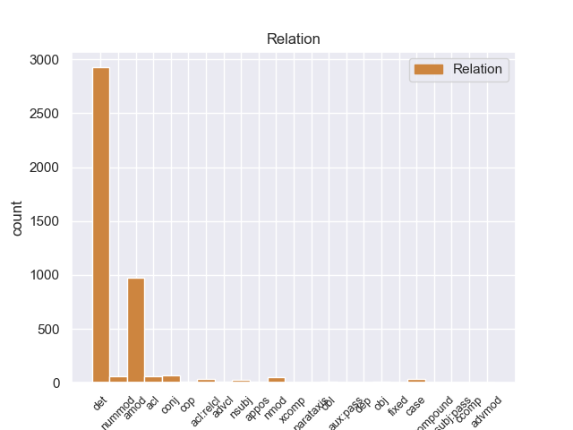
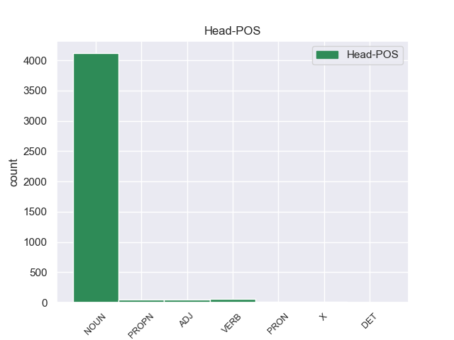
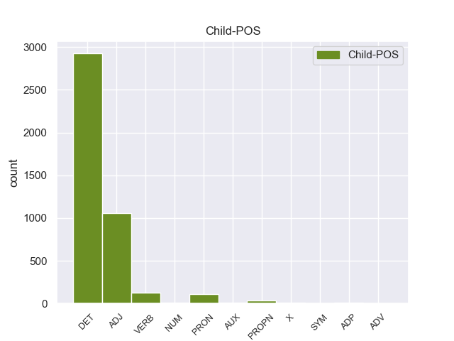

Distribution of features within this leaf



Agreement Rules sorted by frequency.
- When the dependent token is the determiner(det) of the head token, and the head token is NOUN and the dependent token is DET.
1 Μια _ _ _ _ 0 _ _ _
2 δημόσια _ _ _ _ 0 _ _ _
3 σύμβαση _ _ _ _ 0 _ _ _
4 δεν _ _ _ _ 0 _ _ _
5 μπορεί _ _ _ _ 0 _ _ _
6 να _ _ _ _ 0 _ _ _
7 περιλαμβάνει _ _ _ _ 0 _ _ _
8 την _ _ _ _ 0 _ _ _
9 απαίτηση _ _ _ _ 0 _ _ _
10 από _ _ _ _ 0 _ _ _
11 τους _ _ _ _ 0 _ _ _
12 κατασκευαστές _ _ _ _ 0 _ _ _
13 λεωφορείων _ _ _ _ 0 _ _ _
14 να _ _ _ _ 0 _ _ _
15 κάνουν _ _ _ _ 0 _ _ _
16 περιβαλλοντική _ _ _ _ 0 _ _ _
17 εκτίμηση _ _ _ _ 0 _ _ _
18 για _ _ _ _ 0 _ _ _
19 το _ _ _ _ 0 _ _ _
20 Ελσίνκι _ _ _ _ 0 _ _ _
21 πριν _ _ _ _ 0 _ _ _
22 να _ _ _ _ 0 _ _ _
23 υποβάλλουν _ _ _ _ 0 _ _ _
24 τη eτ DET _ Definite=Def|Gender=Fem|Number=Sing|PronType=Art 25 det _ _
25 σύμβαση σύμβαση NOUN _ Gender=Fem|Number=Sing 0 _ _ _
26 . _ _ _ _ 0 _ _ _
1 Μια _ _ _ _ 0 _ _ _
2 δημόσια δημόσιo ADJ _ Gender=Fem|Number=Sing 3 amod _ _
3 σύμβαση σύμβαση NOUN _ Gender=Fem|Number=Sing 0 _ _ _
4 δεν _ _ _ _ 0 _ _ _
5 μπορεί _ _ _ _ 0 _ _ _
6 να _ _ _ _ 0 _ _ _
7 περιλαμβάνει _ _ _ _ 0 _ _ _
8 την _ _ _ _ 0 _ _ _
9 απαίτηση _ _ _ _ 0 _ _ _
10 από _ _ _ _ 0 _ _ _
11 τους _ _ _ _ 0 _ _ _
12 κατασκευαστές _ _ _ _ 0 _ _ _
13 λεωφορείων _ _ _ _ 0 _ _ _
14 να _ _ _ _ 0 _ _ _
15 κάνουν _ _ _ _ 0 _ _ _
16 περιβαλλοντική _ _ _ _ 0 _ _ _
17 εκτίμηση _ _ _ _ 0 _ _ _
18 για _ _ _ _ 0 _ _ _
19 το _ _ _ _ 0 _ _ _
20 Ελσίνκι _ _ _ _ 0 _ _ _
21 πριν _ _ _ _ 0 _ _ _
22 να _ _ _ _ 0 _ _ _
23 υποβάλλουν _ _ _ _ 0 _ _ _
24 τη _ _ _ _ 0 _ _ _
25 σύμβαση _ _ _ _ 0 _ _ _
26 . _ _ _ _ 0 _ _ _
1 Πιστεύουμε _ _ _ _ 0 _ _ _
2 ότι _ _ _ _ 0 _ _ _
3 είναι _ _ _ _ 0 _ _ _
4 απαραίτητη _ _ _ _ 0 _ _ _
5 μία _ _ _ _ 0 _ _ _
6 αποφασιστική _ _ _ _ 0 _ _ _
7 απάντηση απάντηση NOUN _ Gender=Fem|Number=Sing 0 _ _ _
8 καθοδηγημένη καθοδηγημένo VERB _ Gender=Fem|Number=Sing|VerbForm=Part 7 acl _ _
9 από _ _ _ _ 0 _ _ _
10 την _ _ _ _ 0 _ _ _
11 Επιτροπή _ _ _ _ 0 _ _ _
12 . _ _ _ _ 0 _ _ _
1 Σε _ _ _ _ 0 _ _ _
2 ορισμένα _ _ _ _ 0 _ _ _
3 όμως _ _ _ _ 0 _ _ _
4 σημεία _ _ _ _ 0 _ _ _
5 η _ _ _ _ 0 _ _ _
6 αρμόδια _ _ _ _ 0 _ _ _
7 επιτροπή _ _ _ _ 0 _ _ _
8 κατέληξε _ _ _ _ 0 _ _ _
9 σε _ _ _ _ 0 _ _ _
10 περίεργα _ _ _ _ 0 _ _ _
11 αποτελέσματα _ _ _ _ 0 _ _ _
12 , _ _ _ _ 0 _ _ _
13 κυρίως _ _ _ _ 0 _ _ _
14 όσον _ _ _ _ 0 _ _ _
15 αφορά _ _ _ _ 0 _ _ _
16 την _ _ _ _ 0 _ _ _
17 πρόταση _ _ _ _ 0 _ _ _
18 οδηγίας _ _ _ _ 0 _ _ _
19 για _ _ _ _ 0 _ _ _
20 τις _ _ _ _ 0 _ _ _
21 δημόσιες _ _ _ _ 0 _ _ _
22 συμβάσεις _ _ _ _ 0 _ _ _
23 για _ _ _ _ 0 _ _ _
24 αγαθά _ _ _ _ 0 _ _ _
25 , _ _ _ _ 0 _ _ _
26 υπηρεσίες _ _ _ _ 0 _ _ _
27 και _ _ _ _ 0 _ _ _
28 για _ _ _ _ 0 _ _ _
29 την _ _ _ _ 0 _ _ _
30 ανάθεση _ _ _ _ 0 _ _ _
31 κατασκευαστικών _ _ _ _ 0 _ _ _
32 συμβάσεων _ _ _ _ 0 _ _ _
33 , _ _ _ _ 0 _ _ _
34 το _ _ _ _ 0 _ _ _
35 άρθρο _ _ _ _ 0 _ _ _
36 53 _ _ _ _ 0 _ _ _
37 της _ _ _ _ 0 _ _ _
38 οποίας _ _ _ _ 0 _ _ _
39 θα _ _ _ _ 0 _ _ _
40 πρέπει _ _ _ _ 0 _ _ _
41 να _ _ _ _ 0 _ _ _
42 τροποποιηθεί _ _ _ _ 0 _ _ _
43 , _ _ _ _ 0 _ _ _
44 έτσι _ _ _ _ 0 _ _ _
45 ώστε _ _ _ _ 0 _ _ _
46 να _ _ _ _ 0 _ _ _
47 καταστεί _ _ _ _ 0 _ _ _
48 σημαντικά _ _ _ _ 0 _ _ _
49 ευκολότερο _ _ _ _ 0 _ _ _
50 να _ _ _ _ 0 _ _ _
51 λαμβάνεται _ _ _ _ 0 _ _ _
52 υπόψη _ _ _ _ 0 _ _ _
53 το _ _ _ _ 0 _ _ _
54 περιβάλλον _ _ _ _ 0 _ _ _
55 σ _ _ _ _ 0 _ _ _
56 το _ _ _ _ 0 _ _ _
57 πλαίσιο _ _ _ _ 0 _ _ _
58 των _ _ _ _ 0 _ _ _
59 δημοσίων _ _ _ _ 0 _ _ _
60 συμβάσεων _ _ _ _ 0 _ _ _
61 , _ _ _ _ 0 _ _ _
62 ενώ _ _ _ _ 0 _ _ _
63 σ _ _ _ _ 0 _ _ _
64 τη _ _ _ _ 0 _ _ _
65 δεύτερη _ _ _ _ 0 _ _ _
66 οδηγία _ _ _ _ 0 _ _ _
67 , _ _ _ _ 0 _ _ _
68 δηλαδή _ _ _ _ 0 _ _ _
69 σ _ _ _ _ 0 _ _ _
70 την _ _ _ _ 0 _ _ _
71 πρόταση _ _ _ _ 0 _ _ _
72 οδηγίας _ _ _ _ 0 _ _ _
73 για _ _ _ _ 0 _ _ _
74 τις _ _ _ _ 0 _ _ _
75 δημόσιες _ _ _ _ 0 _ _ _
76 συμβάσεις _ _ _ _ 0 _ _ _
77 σ _ _ _ _ 0 _ _ _
78 τον _ _ _ _ 0 _ _ _
79 τομέα _ _ _ _ 0 _ _ _
80 των _ _ _ _ 0 _ _ _
81 υδάτων _ _ _ _ 0 _ _ _
82 , _ _ _ _ 0 _ _ _
83 της _ _ _ _ 0 _ _ _
84 ενέργειας _ _ _ _ 0 _ _ _
85 και _ _ _ _ 0 _ _ _
86 των _ _ _ _ 0 _ _ _
87 μεταφορών _ _ _ _ 0 _ _ _
88 , _ _ _ _ 0 _ _ _
89 δεν _ _ _ _ 0 _ _ _
90 πραγματοποιείται _ _ _ _ 0 _ _ _
91 η _ _ _ _ 0 _ _ _
92 ίδια _ _ _ _ 0 _ _ _
93 τροποποίηση _ _ _ _ 0 _ _ _
94 του _ _ _ _ 0 _ _ _
95 άρθρου _ _ _ _ 0 _ _ _
96 54 _ _ _ _ 0 _ _ _
97 , _ _ _ _ 0 _ _ _
98 το _ _ _ _ 0 _ _ _
99 οποίο _ _ _ _ 0 _ _ _
100 είναι _ _ _ _ 0 _ _ _
101 ταυτόσημο _ _ _ _ 0 _ _ _
102 με _ _ _ _ 0 _ _ _
103 το _ _ _ _ 0 _ _ _
104 άρθρο _ _ _ _ 0 _ _ _
105 53 _ _ _ _ 0 _ _ _
106 της _ _ _ _ 0 _ _ _
107 πρώτης πρώτηo ADJ _ Gender=Fem|Number=Sing|NumType=Ord 108 nummod _ _
108 οδηγίας οδηγίας NOUN _ Gender=Fem|Number=Sing 0 _ _ _
109 . _ _ _ _ 0 _ _ _
1 Οι e DET _ Definite=Def|Gender=Masc|Number=Plur|PronType=Art 2 det _ _
2 ΗΠΑ ηπ PROPN _ Gender=Masc|Number=Plur 0 _ _ _
3 βοηθούν _ _ _ _ 0 _ _ _
4 τη _ _ _ _ 0 _ _ _
5 Γαλλία _ _ _ _ 0 _ _ _
6 σ _ _ _ _ 0 _ _ _
7 το _ _ _ _ 0 _ _ _
8 Μάλι _ _ _ _ 0 _ _ _
9 . _ _ _ _ 0 _ _ _
1 Σχετικά _ _ _ _ 0 _ _ _
2 με _ _ _ _ 0 _ _ _
3 το _ _ _ _ 0 _ _ _
4 ζήτημα _ _ _ _ 0 _ _ _
5 της _ _ _ _ 0 _ _ _
6 σύμβασης _ _ _ _ 0 _ _ _
7 για _ _ _ _ 0 _ _ _
8 τα _ _ _ _ 0 _ _ _
9 λεωφορεία _ _ _ _ 0 _ _ _
10 σ _ _ _ _ 0 _ _ _
11 το _ _ _ _ 0 _ _ _
12 Ελσίνκι _ _ _ _ 0 _ _ _
13 , _ _ _ _ 0 _ _ _
14 σίγουρα _ _ _ _ 0 _ _ _
15 οι _ _ _ _ 0 _ _ _
16 αρχές _ _ _ _ 0 _ _ _
17 του _ _ _ _ 0 _ _ _
18 Ελσίνκι _ _ _ _ 0 _ _ _
19 ήταν _ _ _ _ 0 _ _ _
20 οι _ _ _ _ 0 _ _ _
21 αρμόδιες _ _ _ _ 0 _ _ _
22 για _ _ _ _ 0 _ _ _
23 να _ _ _ _ 0 _ _ _
24 αποφασίσουν _ _ _ _ 0 _ _ _
25 , _ _ _ _ 0 _ _ _
26 πριν _ _ _ _ 0 _ _ _
27 να _ _ _ _ 0 _ _ _
28 προκηρύξουν _ _ _ _ 0 _ _ _
29 το _ _ _ _ 0 _ _ _
30 διαγωνισμό _ _ _ _ 0 _ _ _
31 για _ _ _ _ 0 _ _ _
32 την _ _ _ _ 0 _ _ _
33 ανάθεση _ _ _ _ 0 _ _ _
34 της _ _ _ _ 0 _ _ _
35 σύμβασης _ _ _ _ 0 _ _ _
36 , _ _ _ _ 0 _ _ _
37 ποιο _ _ _ _ 0 _ _ _
38 είναι _ _ _ _ 0 _ _ _
39 το _ _ _ _ 0 _ _ _
40 βέλτιστο βέλτιστο ADJ _ Gender=Masc|Number=Sing 0 _ _ _
41 και _ _ _ _ 0 _ _ _
42 το _ _ _ _ 0 _ _ _
43 πιο _ _ _ _ 0 _ _ _
44 φιλικό φιλικό ADJ _ Gender=Masc|Number=Sing 40 conj _ _
45 προς _ _ _ _ 0 _ _ _
46 το _ _ _ _ 0 _ _ _
47 περιβάλλον _ _ _ _ 0 _ _ _
48 λεωφορείο _ _ _ _ 0 _ _ _
49 το _ _ _ _ 0 _ _ _
50 οποίο _ _ _ _ 0 _ _ _
51 επιθυμούσαν _ _ _ _ 0 _ _ _
52 . _ _ _ _ 0 _ _ _
1 Για _ _ _ _ 0 _ _ _
2 το _ _ _ _ 0 _ _ _
3 ζήτημα ζήτημα NOUN _ Gender=Masc|Number=Sing 0 _ _ _
4 αυτό αυτό PRON _ Gender=Masc|Number=Sing|PronType=Dem 3 amod _ _
5 έχει _ _ _ _ 0 _ _ _
6 ξεκινήσει _ _ _ _ 0 _ _ _
7 και _ _ _ _ 0 _ _ _
8 μία _ _ _ _ 0 _ _ _
9 νομική _ _ _ _ 0 _ _ _
10 εξέταση _ _ _ _ 0 _ _ _
11 και _ _ _ _ 0 _ _ _
12 ο _ _ _ _ 0 _ _ _
13 Γενικός _ _ _ _ 0 _ _ _
14 Εισαγγελέας _ _ _ _ 0 _ _ _
15 αποφάνθηκε _ _ _ _ 0 _ _ _
16 με _ _ _ _ 0 _ _ _
17 σαφήνεια _ _ _ _ 0 _ _ _
18 ότι _ _ _ _ 0 _ _ _
19 είναι _ _ _ _ 0 _ _ _
20 σωστή _ _ _ _ 0 _ _ _
21 η _ _ _ _ 0 _ _ _
22 δική _ _ _ _ 0 _ _ _
23 μου _ _ _ _ 0 _ _ _
24 άποψη _ _ _ _ 0 _ _ _
25 , _ _ _ _ 0 _ _ _
26 και _ _ _ _ 0 _ _ _
27 άποψη _ _ _ _ 0 _ _ _
28 της _ _ _ _ 0 _ _ _
29 Επιτροπής _ _ _ _ 0 _ _ _
30 Περιβάλλοντος _ _ _ _ 0 _ _ _
31 , _ _ _ _ 0 _ _ _
32 και _ _ _ _ 0 _ _ _
33 όχι _ _ _ _ 0 _ _ _
34 αυτή _ _ _ _ 0 _ _ _
35 της _ _ _ _ 0 _ _ _
36 Επιτροπής _ _ _ _ 0 _ _ _
37 . _ _ _ _ 0 _ _ _
1 Σε _ _ _ _ 0 _ _ _
2 ορισμένα _ _ _ _ 0 _ _ _
3 όμως _ _ _ _ 0 _ _ _
4 σημεία _ _ _ _ 0 _ _ _
5 η _ _ _ _ 0 _ _ _
6 αρμόδια _ _ _ _ 0 _ _ _
7 επιτροπή _ _ _ _ 0 _ _ _
8 κατέληξε _ _ _ _ 0 _ _ _
9 σε _ _ _ _ 0 _ _ _
10 περίεργα _ _ _ _ 0 _ _ _
11 αποτελέσματα _ _ _ _ 0 _ _ _
12 , _ _ _ _ 0 _ _ _
13 κυρίως _ _ _ _ 0 _ _ _
14 όσον _ _ _ _ 0 _ _ _
15 αφορά _ _ _ _ 0 _ _ _
16 την _ _ _ _ 0 _ _ _
17 πρόταση _ _ _ _ 0 _ _ _
18 οδηγίας _ _ _ _ 0 _ _ _
19 για _ _ _ _ 0 _ _ _
20 τις _ _ _ _ 0 _ _ _
21 δημόσιες _ _ _ _ 0 _ _ _
22 συμβάσεις _ _ _ _ 0 _ _ _
23 για _ _ _ _ 0 _ _ _
24 αγαθά _ _ _ _ 0 _ _ _
25 , _ _ _ _ 0 _ _ _
26 υπηρεσίες _ _ _ _ 0 _ _ _
27 και _ _ _ _ 0 _ _ _
28 για _ _ _ _ 0 _ _ _
29 την _ _ _ _ 0 _ _ _
30 ανάθεση _ _ _ _ 0 _ _ _
31 κατασκευαστικών _ _ _ _ 0 _ _ _
32 συμβάσεων _ _ _ _ 0 _ _ _
33 , _ _ _ _ 0 _ _ _
34 το _ _ _ _ 0 _ _ _
35 άρθρο _ _ _ _ 0 _ _ _
36 53 _ _ _ _ 0 _ _ _
37 της _ _ _ _ 0 _ _ _
38 οποίας _ _ _ _ 0 _ _ _
39 θα _ _ _ _ 0 _ _ _
40 πρέπει _ _ _ _ 0 _ _ _
41 να _ _ _ _ 0 _ _ _
42 τροποποιηθεί _ _ _ _ 0 _ _ _
43 , _ _ _ _ 0 _ _ _
44 έτσι _ _ _ _ 0 _ _ _
45 ώστε _ _ _ _ 0 _ _ _
46 να _ _ _ _ 0 _ _ _
47 καταστεί _ _ _ _ 0 _ _ _
48 σημαντικά _ _ _ _ 0 _ _ _
49 ευκολότερο _ _ _ _ 0 _ _ _
50 να _ _ _ _ 0 _ _ _
51 λαμβάνεται _ _ _ _ 0 _ _ _
52 υπόψη _ _ _ _ 0 _ _ _
53 το _ _ _ _ 0 _ _ _
54 περιβάλλον _ _ _ _ 0 _ _ _
55 σ _ _ _ _ 0 _ _ _
56 το _ _ _ _ 0 _ _ _
57 πλαίσιο _ _ _ _ 0 _ _ _
58 των _ _ _ _ 0 _ _ _
59 δημοσίων _ _ _ _ 0 _ _ _
60 συμβάσεων _ _ _ _ 0 _ _ _
61 , _ _ _ _ 0 _ _ _
62 ενώ _ _ _ _ 0 _ _ _
63 σ _ _ _ _ 0 _ _ _
64 τη _ _ _ _ 0 _ _ _
65 δεύτερη _ _ _ _ 0 _ _ _
66 οδηγία _ _ _ _ 0 _ _ _
67 , _ _ _ _ 0 _ _ _
68 δηλαδή _ _ _ _ 0 _ _ _
69 σ _ _ _ _ 0 _ _ _
70 την _ _ _ _ 0 _ _ _
71 πρόταση _ _ _ _ 0 _ _ _
72 οδηγίας _ _ _ _ 0 _ _ _
73 για _ _ _ _ 0 _ _ _
74 τις _ _ _ _ 0 _ _ _
75 δημόσιες _ _ _ _ 0 _ _ _
76 συμβάσεις _ _ _ _ 0 _ _ _
77 σ _ _ _ _ 0 _ _ _
78 τον _ _ _ _ 0 _ _ _
79 τομέα _ _ _ _ 0 _ _ _
80 των eτ DET _ Definite=Def|Gender=Masc|Number=Plur|PronType=Art 81 case _ _
81 υδάτων υδάτω NOUN _ Gender=Masc|Number=Plur 0 _ _ _
82 , _ _ _ _ 0 _ _ _
83 της _ _ _ _ 0 _ _ _
84 ενέργειας _ _ _ _ 0 _ _ _
85 και _ _ _ _ 0 _ _ _
86 των _ _ _ _ 0 _ _ _
87 μεταφορών _ _ _ _ 0 _ _ _
88 , _ _ _ _ 0 _ _ _
89 δεν _ _ _ _ 0 _ _ _
90 πραγματοποιείται _ _ _ _ 0 _ _ _
91 η _ _ _ _ 0 _ _ _
92 ίδια _ _ _ _ 0 _ _ _
93 τροποποίηση _ _ _ _ 0 _ _ _
94 του _ _ _ _ 0 _ _ _
95 άρθρου _ _ _ _ 0 _ _ _
96 54 _ _ _ _ 0 _ _ _
97 , _ _ _ _ 0 _ _ _
98 το _ _ _ _ 0 _ _ _
99 οποίο _ _ _ _ 0 _ _ _
100 είναι _ _ _ _ 0 _ _ _
101 ταυτόσημο _ _ _ _ 0 _ _ _
102 με _ _ _ _ 0 _ _ _
103 το _ _ _ _ 0 _ _ _
104 άρθρο _ _ _ _ 0 _ _ _
105 53 _ _ _ _ 0 _ _ _
106 της _ _ _ _ 0 _ _ _
107 πρώτης _ _ _ _ 0 _ _ _
108 οδηγίας _ _ _ _ 0 _ _ _
109 . _ _ _ _ 0 _ _ _
1 Σε _ _ _ _ 0 _ _ _
2 ορισμένα _ _ _ _ 0 _ _ _
3 όμως _ _ _ _ 0 _ _ _
4 σημεία _ _ _ _ 0 _ _ _
5 η _ _ _ _ 0 _ _ _
6 αρμόδια _ _ _ _ 0 _ _ _
7 επιτροπή _ _ _ _ 0 _ _ _
8 κατέληξε _ _ _ _ 0 _ _ _
9 σε _ _ _ _ 0 _ _ _
10 περίεργα _ _ _ _ 0 _ _ _
11 αποτελέσματα _ _ _ _ 0 _ _ _
12 , _ _ _ _ 0 _ _ _
13 κυρίως _ _ _ _ 0 _ _ _
14 όσον _ _ _ _ 0 _ _ _
15 αφορά _ _ _ _ 0 _ _ _
16 την _ _ _ _ 0 _ _ _
17 πρόταση _ _ _ _ 0 _ _ _
18 οδηγίας _ _ _ _ 0 _ _ _
19 για _ _ _ _ 0 _ _ _
20 τις _ _ _ _ 0 _ _ _
21 δημόσιες _ _ _ _ 0 _ _ _
22 συμβάσεις _ _ _ _ 0 _ _ _
23 για _ _ _ _ 0 _ _ _
24 αγαθά _ _ _ _ 0 _ _ _
25 , _ _ _ _ 0 _ _ _
26 υπηρεσίες _ _ _ _ 0 _ _ _
27 και _ _ _ _ 0 _ _ _
28 για _ _ _ _ 0 _ _ _
29 την _ _ _ _ 0 _ _ _
30 ανάθεση _ _ _ _ 0 _ _ _
31 κατασκευαστικών _ _ _ _ 0 _ _ _
32 συμβάσεων _ _ _ _ 0 _ _ _
33 , _ _ _ _ 0 _ _ _
34 το _ _ _ _ 0 _ _ _
35 άρθρο _ _ _ _ 0 _ _ _
36 53 _ _ _ _ 0 _ _ _
37 της _ _ _ _ 0 _ _ _
38 οποίας _ _ _ _ 0 _ _ _
39 θα _ _ _ _ 0 _ _ _
40 πρέπει _ _ _ _ 0 _ _ _
41 να _ _ _ _ 0 _ _ _
42 τροποποιηθεί _ _ _ _ 0 _ _ _
43 , _ _ _ _ 0 _ _ _
44 έτσι _ _ _ _ 0 _ _ _
45 ώστε _ _ _ _ 0 _ _ _
46 να _ _ _ _ 0 _ _ _
47 καταστεί _ _ _ _ 0 _ _ _
48 σημαντικά _ _ _ _ 0 _ _ _
49 ευκολότερο _ _ _ _ 0 _ _ _
50 να _ _ _ _ 0 _ _ _
51 λαμβάνεται _ _ _ _ 0 _ _ _
52 υπόψη _ _ _ _ 0 _ _ _
53 το _ _ _ _ 0 _ _ _
54 περιβάλλον περιβάλλον NOUN _ Gender=Masc|Number=Sing 0 _ _ _
55 σ _ _ _ _ 0 _ _ _
56 το _ _ _ _ 0 _ _ _
57 πλαίσιο _ _ _ _ 0 _ _ _
58 των _ _ _ _ 0 _ _ _
59 δημοσίων _ _ _ _ 0 _ _ _
60 συμβάσεων _ _ _ _ 0 _ _ _
61 , _ _ _ _ 0 _ _ _
62 ενώ _ _ _ _ 0 _ _ _
63 σ _ _ _ _ 0 _ _ _
64 τη _ _ _ _ 0 _ _ _
65 δεύτερη _ _ _ _ 0 _ _ _
66 οδηγία _ _ _ _ 0 _ _ _
67 , _ _ _ _ 0 _ _ _
68 δηλαδή _ _ _ _ 0 _ _ _
69 σ _ _ _ _ 0 _ _ _
70 την _ _ _ _ 0 _ _ _
71 πρόταση _ _ _ _ 0 _ _ _
72 οδηγίας _ _ _ _ 0 _ _ _
73 για _ _ _ _ 0 _ _ _
74 τις _ _ _ _ 0 _ _ _
75 δημόσιες _ _ _ _ 0 _ _ _
76 συμβάσεις _ _ _ _ 0 _ _ _
77 σ _ _ _ _ 0 _ _ _
78 τον _ _ _ _ 0 _ _ _
79 τομέα _ _ _ _ 0 _ _ _
80 των _ _ _ _ 0 _ _ _
81 υδάτων _ _ _ _ 0 _ _ _
82 , _ _ _ _ 0 _ _ _
83 της _ _ _ _ 0 _ _ _
84 ενέργειας _ _ _ _ 0 _ _ _
85 και _ _ _ _ 0 _ _ _
86 των _ _ _ _ 0 _ _ _
87 μεταφορών _ _ _ _ 0 _ _ _
88 , _ _ _ _ 0 _ _ _
89 δεν _ _ _ _ 0 _ _ _
90 πραγματοποιείται _ _ _ _ 0 _ _ _
91 η _ _ _ _ 0 _ _ _
92 ίδια _ _ _ _ 0 _ _ _
93 τροποποίηση _ _ _ _ 0 _ _ _
94 του _ _ _ _ 0 _ _ _
95 άρθρου _ _ _ _ 0 _ _ _
96 54 _ _ _ _ 0 _ _ _
97 , _ _ _ _ 0 _ _ _
98 το _ _ _ _ 0 _ _ _
99 οποίο _ _ _ _ 0 _ _ _
100 είναι _ _ _ _ 0 _ _ _
101 ταυτόσημο ταυτόσημο VERB _ Gender=Masc|Number=Sing|VerbForm=Part 54 acl:relcl _ _
102 με _ _ _ _ 0 _ _ _
103 το _ _ _ _ 0 _ _ _
104 άρθρο _ _ _ _ 0 _ _ _
105 53 _ _ _ _ 0 _ _ _
106 της _ _ _ _ 0 _ _ _
107 πρώτης _ _ _ _ 0 _ _ _
108 οδηγίας _ _ _ _ 0 _ _ _
109 . _ _ _ _ 0 _ _ _
1 Την _ _ _ _ 0 _ _ _
2 στιγμή στιγμή NOUN _ Gender=Fem|Number=Sing 0 _ _ _
3 αυτήν αυτήe PRON _ Case=Acc,Nom|Gender=Fem|Number=Sing|Person=3|PronType=Prs 2 det _ _
4 είναι _ _ _ _ 0 _ _ _
5 δύσκολη _ _ _ _ 0 _ _ _
6 η _ _ _ _ 0 _ _ _
7 πραγματοποίηση _ _ _ _ 0 _ _ _
8 ελέγχων _ _ _ _ 0 _ _ _
9 σ _ _ _ _ 0 _ _ _
10 το _ _ _ _ 0 _ _ _
11 εξωτερικό _ _ _ _ 0 _ _ _
12 μίας _ _ _ _ 0 _ _ _
13 χώρας _ _ _ _ 0 _ _ _
14 , _ _ _ _ 0 _ _ _
15 εξαιτίας _ _ _ _ 0 _ _ _
16 των _ _ _ _ 0 _ _ _
17 διαφορετικών _ _ _ _ 0 _ _ _
18 διατάξεων _ _ _ _ 0 _ _ _
19 και _ _ _ _ 0 _ _ _
20 εγγράφων _ _ _ _ 0 _ _ _
21 που _ _ _ _ 0 _ _ _
22 ισχύουν _ _ _ _ 0 _ _ _
23 . _ _ _ _ 0 _ _ _
1 Σχετικά _ _ _ _ 0 _ _ _
2 με _ _ _ _ 0 _ _ _
3 το _ _ _ _ 0 _ _ _
4 ζήτημα _ _ _ _ 0 _ _ _
5 της _ _ _ _ 0 _ _ _
6 σύμβασης _ _ _ _ 0 _ _ _
7 για _ _ _ _ 0 _ _ _
8 τα _ _ _ _ 0 _ _ _
9 λεωφορεία _ _ _ _ 0 _ _ _
10 σ _ _ _ _ 0 _ _ _
11 το _ _ _ _ 0 _ _ _
12 Ελσίνκι _ _ _ _ 0 _ _ _
13 , _ _ _ _ 0 _ _ _
14 σίγουρα _ _ _ _ 0 _ _ _
15 οι _ _ _ _ 0 _ _ _
16 αρχές _ _ _ _ 0 _ _ _
17 του _ _ _ _ 0 _ _ _
18 Ελσίνκι _ _ _ _ 0 _ _ _
19 ήταν _ _ _ _ 0 _ _ _
20 οι _ _ _ _ 0 _ _ _
21 αρμόδιες _ _ _ _ 0 _ _ _
22 για _ _ _ _ 0 _ _ _
23 να _ _ _ _ 0 _ _ _
24 αποφασίσουν _ _ _ _ 0 _ _ _
25 , _ _ _ _ 0 _ _ _
26 πριν _ _ _ _ 0 _ _ _
27 να _ _ _ _ 0 _ _ _
28 προκηρύξουν _ _ _ _ 0 _ _ _
29 το _ _ _ _ 0 _ _ _
30 διαγωνισμό _ _ _ _ 0 _ _ _
31 για _ _ _ _ 0 _ _ _
32 την _ _ _ _ 0 _ _ _
33 ανάθεση _ _ _ _ 0 _ _ _
34 της _ _ _ _ 0 _ _ _
35 σύμβασης _ _ _ _ 0 _ _ _
36 , _ _ _ _ 0 _ _ _
37 ποιο _ _ _ _ 0 _ _ _
38 είναι _ _ _ _ 0 _ _ _
39 το _ _ _ _ 0 _ _ _
40 βέλτιστο _ _ _ _ 0 _ _ _
41 και _ _ _ _ 0 _ _ _
42 το _ _ _ _ 0 _ _ _
43 πιο _ _ _ _ 0 _ _ _
44 φιλικό _ _ _ _ 0 _ _ _
45 προς _ _ _ _ 0 _ _ _
46 το το DET _ Definite=Def|Gender=Masc|Number=Sing|PronType=Art 47 det _ _
47 περιβάλλον περιβάλλον ADJ _ Gender=Masc|Number=Sing 0 _ _ _
48 λεωφορείο _ _ _ _ 0 _ _ _
49 το _ _ _ _ 0 _ _ _
50 οποίο _ _ _ _ 0 _ _ _
51 επιθυμούσαν _ _ _ _ 0 _ _ _
52 . _ _ _ _ 0 _ _ _
1 Ένας _ _ _ _ 0 _ _ _
2 από _ _ _ _ 0 _ _ _
3 αυτούς αυτού PRON _ Gender=Masc|Number=Plur|PronType=Dem 6 nmod _ _
4 είναι _ _ _ _ 0 _ _ _
5 ο _ _ _ _ 0 _ _ _
6 αριθμός αριθμός NOUN _ Gender=Masc|Number=Sing 0 _ _ _
7 των _ _ _ _ 0 _ _ _
8 βίαιων _ _ _ _ 0 _ _ _
9 επιθέσεων _ _ _ _ 0 _ _ _
10 εναντίον _ _ _ _ 0 _ _ _
11 δημοσιογράφων _ _ _ _ 0 _ _ _
12 , _ _ _ _ 0 _ _ _
13 για _ _ _ _ 0 _ _ _
14 τις _ _ _ _ 0 _ _ _
15 οποίες _ _ _ _ 0 _ _ _
16 ευθύνονται _ _ _ _ 0 _ _ _
17 κυρίως _ _ _ _ 0 _ _ _
18 οπαδοί _ _ _ _ 0 _ _ _
19 της _ _ _ _ 0 _ _ _
20 νεοναζιστικής _ _ _ _ 0 _ _ _
21 οργάνωσης _ _ _ _ 0 _ _ _
22 που _ _ _ _ 0 _ _ _
23 εκπροσωπείται _ _ _ _ 0 _ _ _
24 σ _ _ _ _ 0 _ _ _
25 την _ _ _ _ 0 _ _ _
26 ελληνική _ _ _ _ 0 _ _ _
27 Βουλή _ _ _ _ 0 _ _ _
28 και _ _ _ _ 0 _ _ _
29 ένας _ _ _ _ 0 _ _ _
30 άλλος _ _ _ _ 0 _ _ _
31 λόγος _ _ _ _ 0 _ _ _
32 είναι _ _ _ _ 0 _ _ _
33 το _ _ _ _ 0 _ _ _
34 κλείσιμο _ _ _ _ 0 _ _ _
35 της _ _ _ _ 0 _ _ _
36 ελληνικής _ _ _ _ 0 _ _ _
37 δημόσιας _ _ _ _ 0 _ _ _
38 τηλεόρασης _ _ _ _ 0 _ _ _
39 και _ _ _ _ 0 _ _ _
40 ο _ _ _ _ 0 _ _ _
41 τρόπος _ _ _ _ 0 _ _ _
42 με _ _ _ _ 0 _ _ _
43 τον _ _ _ _ 0 _ _ _
44 οποίο _ _ _ _ 0 _ _ _
45 έγινε _ _ _ _ 0 _ _ _
46 αυτό _ _ _ _ 0 _ _ _
47 " _ _ _ _ 0 _ _ _
48 , _ _ _ _ 0 _ _ _
49 επεσήμανε _ _ _ _ 0 _ _ _
50 η _ _ _ _ 0 _ _ _
51 κ. _ _ _ _ 0 _ _ _
52 Χολγκάντ _ _ _ _ 0 _ _ _
53 . _ _ _ _ 0 _ _ _
1 Ο _ _ _ _ 0 _ _ _
2 Μεράχ _ _ _ _ 0 _ _ _
3 είχε _ _ _ _ 0 _ _ _
4 δηλώσει δηλώσει VERB _ Gender=Masc|Number=Sing|Tense=Past|VerbForm=Part 0 _ _ _
5 σ _ _ _ _ 0 _ _ _
6 την _ _ _ _ 0 _ _ _
7 Αστυνομία _ _ _ _ 0 _ _ _
8 ότι _ _ _ _ 0 _ _ _
9 « _ _ _ _ 0 _ _ _
10 σκόπευε _ _ _ _ 0 _ _ _
11 να _ _ _ _ 0 _ _ _
12 προβεί _ _ _ _ 0 _ _ _
13 σε _ _ _ _ 0 _ _ _
14 περισσότερες _ _ _ _ 0 _ _ _
15 δολοφονίες _ _ _ _ 0 _ _ _
16 για _ _ _ _ 0 _ _ _
17 να _ _ _ _ 0 _ _ _
18 κάνει _ _ _ _ 0 _ _ _
19 τη _ _ _ _ 0 _ _ _
20 Γαλλία _ _ _ _ 0 _ _ _
21 να _ _ _ _ 0 _ _ _
22 λυγίσει _ _ _ _ 0 _ _ _
23 » _ _ _ _ 0 _ _ _
24 και _ _ _ _ 0 _ _ _
25 είχε _ _ _ _ 0 _ _ _
26 πει πει VERB _ Gender=Masc|Number=Sing|Tense=Past|VerbForm=Part 4 conj _ _
27 ότι _ _ _ _ 0 _ _ _
28 « _ _ _ _ 0 _ _ _
29 θέλει _ _ _ _ 0 _ _ _
30 να _ _ _ _ 0 _ _ _
31 προβεί _ _ _ _ 0 _ _ _
32 σε _ _ _ _ 0 _ _ _
33 αντίποινα _ _ _ _ 0 _ _ _
34 για _ _ _ _ 0 _ _ _
35 τους _ _ _ _ 0 _ _ _
36 θανάτους _ _ _ _ 0 _ _ _
37 παιδιών _ _ _ _ 0 _ _ _
38 Παλαιστινίων _ _ _ _ 0 _ _ _
39 σ _ _ _ _ 0 _ _ _
40 τη _ _ _ _ 0 _ _ _
41 Μέση _ _ _ _ 0 _ _ _
42 Ανατολή _ _ _ _ 0 _ _ _
43 » _ _ _ _ 0 _ _ _
44 , _ _ _ _ 0 _ _ _
45 ενώ _ _ _ _ 0 _ _ _
46 καταδίκασε _ _ _ _ 0 _ _ _
47 την _ _ _ _ 0 _ _ _
48 ανάμειξη _ _ _ _ 0 _ _ _
49 της _ _ _ _ 0 _ _ _
50 Γαλλίας _ _ _ _ 0 _ _ _
51 σ _ _ _ _ 0 _ _ _
52 το _ _ _ _ 0 _ _ _
53 Αφγανιστάν _ _ _ _ 0 _ _ _
54 . _ _ _ _ 0 _ _ _
1 Ένας ένας PRON _ Gender=Masc|Number=Sing|PronType=Ind 6 nsubj _ _
2 από _ _ _ _ 0 _ _ _
3 αυτούς _ _ _ _ 0 _ _ _
4 είναι _ _ _ _ 0 _ _ _
5 ο _ _ _ _ 0 _ _ _
6 αριθμός αριθμός NOUN _ Gender=Masc|Number=Sing 0 _ _ _
7 των _ _ _ _ 0 _ _ _
8 βίαιων _ _ _ _ 0 _ _ _
9 επιθέσεων _ _ _ _ 0 _ _ _
10 εναντίον _ _ _ _ 0 _ _ _
11 δημοσιογράφων _ _ _ _ 0 _ _ _
12 , _ _ _ _ 0 _ _ _
13 για _ _ _ _ 0 _ _ _
14 τις _ _ _ _ 0 _ _ _
15 οποίες _ _ _ _ 0 _ _ _
16 ευθύνονται _ _ _ _ 0 _ _ _
17 κυρίως _ _ _ _ 0 _ _ _
18 οπαδοί _ _ _ _ 0 _ _ _
19 της _ _ _ _ 0 _ _ _
20 νεοναζιστικής _ _ _ _ 0 _ _ _
21 οργάνωσης _ _ _ _ 0 _ _ _
22 που _ _ _ _ 0 _ _ _
23 εκπροσωπείται _ _ _ _ 0 _ _ _
24 σ _ _ _ _ 0 _ _ _
25 την _ _ _ _ 0 _ _ _
26 ελληνική _ _ _ _ 0 _ _ _
27 Βουλή _ _ _ _ 0 _ _ _
28 και _ _ _ _ 0 _ _ _
29 ένας _ _ _ _ 0 _ _ _
30 άλλος _ _ _ _ 0 _ _ _
31 λόγος _ _ _ _ 0 _ _ _
32 είναι _ _ _ _ 0 _ _ _
33 το _ _ _ _ 0 _ _ _
34 κλείσιμο _ _ _ _ 0 _ _ _
35 της _ _ _ _ 0 _ _ _
36 ελληνικής _ _ _ _ 0 _ _ _
37 δημόσιας _ _ _ _ 0 _ _ _
38 τηλεόρασης _ _ _ _ 0 _ _ _
39 και _ _ _ _ 0 _ _ _
40 ο _ _ _ _ 0 _ _ _
41 τρόπος _ _ _ _ 0 _ _ _
42 με _ _ _ _ 0 _ _ _
43 τον _ _ _ _ 0 _ _ _
44 οποίο _ _ _ _ 0 _ _ _
45 έγινε _ _ _ _ 0 _ _ _
46 αυτό _ _ _ _ 0 _ _ _
47 " _ _ _ _ 0 _ _ _
48 , _ _ _ _ 0 _ _ _
49 επεσήμανε _ _ _ _ 0 _ _ _
50 η _ _ _ _ 0 _ _ _
51 κ. _ _ _ _ 0 _ _ _
52 Χολγκάντ _ _ _ _ 0 _ _ _
53 . _ _ _ _ 0 _ _ _
1 Η _ _ _ _ 0 _ _ _
2 εκπρόσωπος _ _ _ _ 0 _ _ _
3 του του ADP _ Gender=Masc|Number=Sing|PronType=Dem 5 case _ _
4 διεθνούς _ _ _ _ 0 _ _ _
5 οργανισμού οργανισμού NOUN _ Gender=Masc|Number=Sing 0 _ _ _
6 πρόσθεσε _ _ _ _ 0 _ _ _
7 ότι _ _ _ _ 0 _ _ _
8 " _ _ _ _ 0 _ _ _
9 η _ _ _ _ 0 _ _ _
10 άσχημη _ _ _ _ 0 _ _ _
11 κατάσταση _ _ _ _ 0 _ _ _
12 σ _ _ _ _ 0 _ _ _
13 την _ _ _ _ 0 _ _ _
14 Ελλάδα _ _ _ _ 0 _ _ _
15 είναι _ _ _ _ 0 _ _ _
16 η _ _ _ _ 0 _ _ _
17 χειρότερη _ _ _ _ 0 _ _ _
18 σ _ _ _ _ 0 _ _ _
19 την _ _ _ _ 0 _ _ _
20 Ευρώπη _ _ _ _ 0 _ _ _
21 , _ _ _ _ 0 _ _ _
22 εξαιτίας _ _ _ _ 0 _ _ _
23 της _ _ _ _ 0 _ _ _
24 οικονομικής _ _ _ _ 0 _ _ _
25 κρίσης _ _ _ _ 0 _ _ _
26 " _ _ _ _ 0 _ _ _
27 . _ _ _ _ 0 _ _ _
1 Από _ _ _ _ 0 _ _ _
2 αυτή _ _ _ _ 0 _ _ _
3 την _ _ _ _ 0 _ _ _
4 άποψη _ _ _ _ 0 _ _ _
5 , _ _ _ _ 0 _ _ _
6 θέλω _ _ _ _ 0 _ _ _
7 να _ _ _ _ 0 _ _ _
8 εξετάσω _ _ _ _ 0 _ _ _
9 την _ _ _ _ 0 _ _ _
10 ισορροπία _ _ _ _ 0 _ _ _
11 μεταξύ _ _ _ _ 0 _ _ _
12 των _ _ _ _ 0 _ _ _
13 οικονομικών οικονομικώ NOUN _ Gender=Masc|Number=Plur 0 _ _ _
14 , _ _ _ _ 0 _ _ _
15 των _ _ _ _ 0 _ _ _
16 περιβαλλοντικών περιβαλλοντικών ADJ _ Gender=Masc|Number=Plur 13 conj _ _
17 και _ _ _ _ 0 _ _ _
18 των _ _ _ _ 0 _ _ _
19 κοινωνικών _ _ _ _ 0 _ _ _
20 ζητημάτων _ _ _ _ 0 _ _ _
21 . _ _ _ _ 0 _ _ _
1 Μια _ _ _ _ 0 _ _ _
2 δημόσια _ _ _ _ 0 _ _ _
3 σύμβαση _ _ _ _ 0 _ _ _
4 δεν _ _ _ _ 0 _ _ _
5 μπορεί _ _ _ _ 0 _ _ _
6 να _ _ _ _ 0 _ _ _
7 περιλαμβάνει _ _ _ _ 0 _ _ _
8 την _ _ _ _ 0 _ _ _
9 απαίτηση _ _ _ _ 0 _ _ _
10 από _ _ _ _ 0 _ _ _
11 τους _ _ _ _ 0 _ _ _
12 κατασκευαστές _ _ _ _ 0 _ _ _
13 λεωφορείων _ _ _ _ 0 _ _ _
14 να _ _ _ _ 0 _ _ _
15 κάνουν _ _ _ _ 0 _ _ _
16 περιβαλλοντική περιβαλλοντικo ADJ _ Definite=Ind|Gender=Fem|Number=Sing|PronType=Art 17 det _ _
17 εκτίμηση εκτίμηση NOUN _ Gender=Fem|Number=Sing 0 _ _ _
18 για _ _ _ _ 0 _ _ _
19 το _ _ _ _ 0 _ _ _
20 Ελσίνκι _ _ _ _ 0 _ _ _
21 πριν _ _ _ _ 0 _ _ _
22 να _ _ _ _ 0 _ _ _
23 υποβάλλουν _ _ _ _ 0 _ _ _
24 τη _ _ _ _ 0 _ _ _
25 σύμβαση _ _ _ _ 0 _ _ _
26 . _ _ _ _ 0 _ _ _
1 Η _ _ _ _ 0 _ _ _
2 συγκεκριμένη _ _ _ _ 0 _ _ _
3 συνοικία _ _ _ _ 0 _ _ _
4 ήταν _ _ _ _ 0 _ _ _
5 υπό _ _ _ _ 0 _ _ _
6 πολιορκία _ _ _ _ 0 _ _ _
7 από _ _ _ _ 0 _ _ _
8 τις _ _ _ _ 0 _ _ _
9 κυβερνητικές _ _ _ _ 0 _ _ _
10 δυνάμεις _ _ _ _ 0 _ _ _
11 για _ _ _ _ 0 _ _ _
12 ένα έναo NUM _ Definite=Ind|Gender=Masc|Number=Sing|PronType=Art 13 nummod _ _
13 μήνα μήνα NOUN _ Gender=Masc|Number=Sing 0 _ _ _
14 . _ _ _ _ 0 _ _ _
1 Αλλά _ _ _ _ 0 _ _ _
2 , _ _ _ _ 0 _ _ _
3 το το DET _ Definite=Def|Gender=Masc|Number=Sing|PronType=Art 5 det _ _
4 σημαντικότερο _ _ _ _ 0 _ _ _
5 όλων όλων PRON _ Gender=Masc|Number=Sing|PronType=Ind 0 _ _ _
6 είναι _ _ _ _ 0 _ _ _
7 ότι _ _ _ _ 0 _ _ _
8 πρέπει _ _ _ _ 0 _ _ _
9 να _ _ _ _ 0 _ _ _
10 θεωρηθεί _ _ _ _ 0 _ _ _
11 ως _ _ _ _ 0 _ _ _
12 μια _ _ _ _ 0 _ _ _
13 κίνηση _ _ _ _ 0 _ _ _
14 προς _ _ _ _ 0 _ _ _
15 τη _ _ _ _ 0 _ _ _
16 διασφάλιση _ _ _ _ 0 _ _ _
17 καλύτερων _ _ _ _ 0 _ _ _
18 δημόσιων _ _ _ _ 0 _ _ _
19 υπηρεσιών _ _ _ _ 0 _ _ _
20 για _ _ _ _ 0 _ _ _
21 όλους _ _ _ _ 0 _ _ _
22 τους _ _ _ _ 0 _ _ _
23 ανθρώπους _ _ _ _ 0 _ _ _
24 . _ _ _ _ 0 _ _ _
1 Κύριε _ _ _ _ 0 _ _ _
2 Πρόεδρε _ _ _ _ 0 _ _ _
3 , _ _ _ _ 0 _ _ _
4 κύριε _ _ _ _ 0 _ _ _
5 Προεδρεύοντα _ _ _ _ 0 _ _ _
6 του _ _ _ _ 0 _ _ _
7 Συμβουλίου _ _ _ _ 0 _ _ _
8 , _ _ _ _ 0 _ _ _
9 κύριε _ _ _ _ 0 _ _ _
10 Πρόεδρε _ _ _ _ 0 _ _ _
11 της _ _ _ _ 0 _ _ _
12 Επιτροπής _ _ _ _ 0 _ _ _
13 , _ _ _ _ 0 _ _ _
14 κυρίες _ _ _ _ 0 _ _ _
15 και _ _ _ _ 0 _ _ _
16 κύριοι _ _ _ _ 0 _ _ _
17 , _ _ _ _ 0 _ _ _
18 καταρχάς _ _ _ _ 0 _ _ _
19 , _ _ _ _ 0 _ _ _
20 ευχαριστώ _ _ _ _ 0 _ _ _
21 την _ _ _ _ 0 _ _ _
22 ισπανική _ _ _ _ 0 _ _ _
23 Προεδρία _ _ _ _ 0 _ _ _
24 για _ _ _ _ 0 _ _ _
25 την _ _ _ _ 0 _ _ _
26 ευθύτητα _ _ _ _ 0 _ _ _
27 με _ _ _ _ 0 _ _ _
28 την _ _ _ _ 0 _ _ _
29 οποία _ _ _ _ 0 _ _ _
30 παρουσιάζεται _ _ _ _ 0 _ _ _
31 εδώ _ _ _ _ 0 _ _ _
32 , _ _ _ _ 0 _ _ _
33 ακολουθώντας _ _ _ _ 0 _ _ _
34 κάτι _ _ _ _ 0 _ _ _
35 που _ _ _ _ 0 _ _ _
36 αποτελεί _ _ _ _ 0 _ _ _
37 πλέον _ _ _ _ 0 _ _ _
38 έθιμο _ _ _ _ 0 _ _ _
39 , _ _ _ _ 0 _ _ _
40 και _ _ _ _ 0 _ _ _
41 επισημαίνω _ _ _ _ 0 _ _ _
42 ότι _ _ _ _ 0 _ _ _
43 έχουμε _ _ _ _ 0 _ _ _
44 περάσει _ _ _ _ 0 _ _ _
45 τον _ _ _ _ 0 _ _ _
46 ισημερινό _ _ _ _ 0 _ _ _
47 της _ _ _ _ 0 _ _ _
48 νομοθετικής _ _ _ _ 0 _ _ _
49 περιόδου _ _ _ _ 0 _ _ _
50 με _ _ _ _ 0 _ _ _
51 μια _ _ _ _ 0 _ _ _
52 σαφώς _ _ _ _ 0 _ _ _
53 συντηρητική _ _ _ _ 0 _ _ _
54 στροφή _ _ _ _ 0 _ _ _
55 σ _ _ _ _ 0 _ _ _
56 το _ _ _ _ 0 _ _ _
57 Συμβούλιο _ _ _ _ 0 _ _ _
58 , _ _ _ _ 0 _ _ _
59 το _ _ _ _ 0 _ _ _
60 οποίο _ _ _ _ 0 _ _ _
61 , _ _ _ _ 0 _ _ _
62 κύριε κύριε VERB _ Gender=Masc|Number=Sing|VerbForm=Part 65 advcl _ _
63 Πρόεδρε _ _ _ _ 0 _ _ _
64 , _ _ _ _ 0 _ _ _
65 ανακόπτεται ανακόπτεταιr VERB _ Gender=Masc|Number=Sing|Tense=Past|VerbForm=Part 0 _ _ _
66 από _ _ _ _ 0 _ _ _
67 την _ _ _ _ 0 _ _ _
68 ιδιότητά _ _ _ _ 0 _ _ _
69 σας _ _ _ _ 0 _ _ _
70 ως _ _ _ _ 0 _ _ _
71 Προέδρου _ _ _ _ 0 _ _ _
72 της _ _ _ _ 0 _ _ _
73 ΧΔΔ _ _ _ _ 0 _ _ _
74 - _ _ _ _ 0 _ _ _
75 της _ _ _ _ 0 _ _ _
76 κεντρώας _ _ _ _ 0 _ _ _
77 δημοκρατικής _ _ _ _ 0 _ _ _
78 διεθνούς _ _ _ _ 0 _ _ _
79 , _ _ _ _ 0 _ _ _
80 για _ _ _ _ 0 _ _ _
81 εσάς _ _ _ _ 0 _ _ _
82 , _ _ _ _ 0 _ _ _
83 χριστιανοδημοκρατικής _ _ _ _ 0 _ _ _
84 διεθνούς _ _ _ _ 0 _ _ _
85 για _ _ _ _ 0 _ _ _
86 τον _ _ _ _ 0 _ _ _
87 κ. _ _ _ _ 0 _ _ _
88 Poettering _ _ _ _ 0 _ _ _
89 · _ _ _ _ 0 _ _ _
1 Hans hans PROPN _ Gender=Masc|Number=Plur 24 nsubj _ _
2 Conrad _ _ _ _ 0 _ _ _
3 Julius _ _ _ _ 0 _ _ _
4 Reiter _ _ _ _ 0 _ _ _
5 ( _ _ _ _ 0 _ _ _
6 Leipzig _ _ _ _ 0 _ _ _
7 , _ _ _ _ 0 _ _ _
8 26 _ _ _ _ 0 _ _ _
9 de _ _ _ _ 0 _ _ _
10 febrero _ _ _ _ 0 _ _ _
11 de _ _ _ _ 0 _ _ _
12 1881 _ _ _ _ 0 _ _ _
13 -- _ _ _ _ 0 _ _ _
14 Kassel _ _ _ _ 0 _ _ _
15 , _ _ _ _ 0 _ _ _
16 25 _ _ _ _ 0 _ _ _
17 de _ _ _ _ 0 _ _ _
18 noviembre _ _ _ _ 0 _ _ _
19 de _ _ _ _ 0 _ _ _
20 1969 _ _ _ _ 0 _ _ _
21 ) _ _ _ _ 0 _ _ _
22 fue _ _ _ _ 0 _ _ _
23 un _ _ _ _ 0 _ _ _
24 médico médico NOUN _ Gender=Masc|Number=Sing 0 _ _ _
25 , _ _ _ _ 0 _ _ _
26 bacteriólogo _ _ _ _ 0 _ _ _
27 e _ _ _ _ 0 _ _ _
28 higienista _ _ _ _ 0 _ _ _
29 alemán _ _ _ _ 0 _ _ _
30 que _ _ _ _ 0 _ _ _
31 sirvió _ _ _ _ 0 _ _ _
32 para _ _ _ _ 0 _ _ _
33 el _ _ _ _ 0 _ _ _
34 régimen _ _ _ _ 0 _ _ _
35 nazi _ _ _ _ 0 _ _ _
36 , _ _ _ _ 0 _ _ _
37 como _ _ _ _ 0 _ _ _
38 oficial _ _ _ _ 0 _ _ _
39 de _ _ _ _ 0 _ _ _
40 las _ _ _ _ 0 _ _ _
41 SS _ _ _ _ 0 _ _ _
42 y _ _ _ _ 0 _ _ _
43 fue _ _ _ _ 0 _ _ _
44 el _ _ _ _ 0 _ _ _
45 causante _ _ _ _ 0 _ _ _
46 directo _ _ _ _ 0 _ _ _
47 de _ _ _ _ 0 _ _ _
48 crueles _ _ _ _ 0 _ _ _
49 muertes _ _ _ _ 0 _ _ _
50 de _ _ _ _ 0 _ _ _
51 cientos _ _ _ _ 0 _ _ _
52 de _ _ _ _ 0 _ _ _
53 prisioneros _ _ _ _ 0 _ _ _
54 judíos _ _ _ _ 0 _ _ _
55 en _ _ _ _ 0 _ _ _
56 el _ _ _ _ 0 _ _ _
57 campo _ _ _ _ 0 _ _ _
58 de _ _ _ _ 0 _ _ _
59 concentración _ _ _ _ 0 _ _ _
60 de _ _ _ _ 0 _ _ _
61 Buchenwald _ _ _ _ 0 _ _ _
62 . _ _ _ _ 0 _ _ _
1 El _ _ _ _ 0 _ _ _
2 fayal _ _ _ _ 0 _ _ _
3 - _ _ _ _ 0 _ _ _
4 brezal _ _ _ _ 0 _ _ _
5 es _ _ _ _ 0 _ _ _
6 una _ _ _ _ 0 _ _ _
7 formación _ _ _ _ 0 _ _ _
8 boscosa _ _ _ _ 0 _ _ _
9 propia _ _ _ _ 0 _ _ _
10 de _ _ _ _ 0 _ _ _
11 el _ _ _ _ 0 _ _ _
12 bosque _ _ _ _ 0 _ _ _
13 húmedo _ _ _ _ 0 _ _ _
14 o _ _ _ _ 0 _ _ _
15 monteverde _ _ _ _ 0 _ _ _
16 en _ _ _ _ 0 _ _ _
17 las _ _ _ _ 0 _ _ _
18 Islas isla PROPN _ Gender=Fem|Number=Plur 0 _ _ _
19 Canarias canarias PROPN _ Gender=Fem|Number=Plur 18 amod _ SpaceAfter=No
20 . _ _ _ _ 0 _ _ _
1 Αλλες _ _ _ _ 0 _ _ _
2 τροπολογίες _ _ _ _ 0 _ _ _
3 , _ _ _ _ 0 _ _ _
4 που _ _ _ _ 0 _ _ _
5 παρουσίασαν _ _ _ _ 0 _ _ _
6 άλλοι _ _ _ _ 0 _ _ _
7 συνάδελφοι _ _ _ _ 0 _ _ _
8 , _ _ _ _ 0 _ _ _
9 επιδιώκουν _ _ _ _ 0 _ _ _
10 από _ _ _ _ 0 _ _ _
11 την _ _ _ _ 0 _ _ _
12 καθιέρωση _ _ _ _ 0 _ _ _
13 ενός _ _ _ _ 0 _ _ _
14 ευρωπαϊκού _ _ _ _ 0 _ _ _
15 habeas habeas NOUN _ Gender=Masc|Number=Sing 0 _ _ _
16 corpus corpus PROPN _ Gender=Masc|Number=Sing 15 appos _ _
17 μέχρι _ _ _ _ 0 _ _ _
18 άλλους _ _ _ _ 0 _ _ _
19 στόχους _ _ _ _ 0 _ _ _
20 με _ _ _ _ 0 _ _ _
21 τους _ _ _ _ 0 _ _ _
22 οποίους _ _ _ _ 0 _ _ _
23 επίσης _ _ _ _ 0 _ _ _
24 συμφωνούμε _ _ _ _ 0 _ _ _
25 , _ _ _ _ 0 _ _ _
26 αλλά _ _ _ _ 0 _ _ _
27 δεν _ _ _ _ 0 _ _ _
28 πιστεύουμε _ _ _ _ 0 _ _ _
29 ότι _ _ _ _ 0 _ _ _
30 αυτό _ _ _ _ 0 _ _ _
31 είναι _ _ _ _ 0 _ _ _
32 το _ _ _ _ 0 _ _ _
33 κατάλληλο _ _ _ _ 0 _ _ _
34 νομικό _ _ _ _ 0 _ _ _
35 μέσο _ _ _ _ 0 _ _ _
36 για _ _ _ _ 0 _ _ _
37 τη _ _ _ _ 0 _ _ _
38 δρομολόγησή _ _ _ _ 0 _ _ _
39 τους _ _ _ _ 0 _ _ _
40 . _ _ _ _ 0 _ _ _
1 Πρέπει _ _ _ _ 0 _ _ _
2 να _ _ _ _ 0 _ _ _
3 χρησιμοποιούμε _ _ _ _ 0 _ _ _
4 σωστά _ _ _ _ 0 _ _ _
5 το _ _ _ _ 0 _ _ _
6 χρήμα _ _ _ _ 0 _ _ _
7 - _ _ _ _ 0 _ _ _
8 φυσικά _ _ _ _ 0 _ _ _
9 για _ _ _ _ 0 _ _ _
10 την _ _ _ _ 0 _ _ _
11 αύξηση _ _ _ _ 0 _ _ _
12 των _ _ _ _ 0 _ _ _
13 υποδομών _ _ _ _ 0 _ _ _
14 , _ _ _ _ 0 _ _ _
15 για _ _ _ _ 0 _ _ _
16 την _ _ _ _ 0 _ _ _
17 παροχή _ _ _ _ 0 _ _ _
18 καλύτερων _ _ _ _ 0 _ _ _
19 υπηρεσιών _ _ _ _ 0 _ _ _
20 και _ _ _ _ 0 _ _ _
21 για _ _ _ _ 0 _ _ _
22 τη _ _ _ _ 0 _ _ _
23 μεγαλύτερη _ _ _ _ 0 _ _ _
24 δυνατή _ _ _ _ 0 _ _ _
25 αύξηση _ _ _ _ 0 _ _ _
26 της _ _ _ _ 0 _ _ _
27 τοπικής _ _ _ _ 0 _ _ _
28 απασχόλησης _ _ _ _ 0 _ _ _
29 - _ _ _ _ 0 _ _ _
30 δεν _ _ _ _ 0 _ _ _
31 πρέπει _ _ _ _ 0 _ _ _
32 όμως _ _ _ _ 0 _ _ _
33 να _ _ _ _ 0 _ _ _
34 χρησιμοποιείται _ _ _ _ 0 _ _ _
35 απλώς _ _ _ _ 0 _ _ _
36 ως _ _ _ _ 0 _ _ _
37 υποκατάστατο υποκατάστατο NOUN _ Gender=Masc|Number=Sing 0 _ _ _
38 για _ _ _ _ 0 _ _ _
39 τις _ _ _ _ 0 _ _ _
40 ιδιωτικές ιδιωτικέ ADJ _ Gender=Masc|Number=Plur 37 nmod _ _
41 και _ _ _ _ 0 _ _ _
42 άλλες _ _ _ _ 0 _ _ _
43 επενδύσεις _ _ _ _ 0 _ _ _
44 ή _ _ _ _ 0 _ _ _
45 για _ _ _ _ 0 _ _ _
46 άλλες _ _ _ _ 0 _ _ _
47 πρωτοβουλίες _ _ _ _ 0 _ _ _
48 δημιουργίας _ _ _ _ 0 _ _ _
49 τοπικών _ _ _ _ 0 _ _ _
50 θέσεων _ _ _ _ 0 _ _ _
51 απασχόλησης _ _ _ _ 0 _ _ _
52 . _ _ _ _ 0 _ _ _
1 Por _ _ _ _ 0 _ _ _
2 contrario _ _ _ _ 0 _ _ _
3 , _ _ _ _ 0 _ _ _
4 imitando _ _ _ _ 0 _ _ _
5 esa _ _ _ _ 0 _ _ _
6 política _ _ _ _ 0 _ _ _
7 de _ _ _ _ 0 _ _ _
8 el _ _ _ _ 0 _ _ _
9 " _ _ _ _ 0 _ _ _
10 Winnie _ _ _ _ 0 _ _ _
11 Pooh _ _ _ _ 0 _ _ _
12 " _ _ _ _ 0 _ _ _
13 , _ _ _ _ 0 _ _ _
14 recientemente _ _ _ _ 0 _ _ _
15 nuestra _ _ _ _ 0 _ _ _
16 presidenta _ _ _ _ 0 _ _ _
17 a _ _ _ _ 0 _ _ _
18 el el DET _ Definite=Def|Gender=Masc|Number=Sing|PronType=Art 19 det _ _
19 asumir asumir VERB _ Gender=Masc|Number=Sing|VerbForm=Fin 0 _ _ _
20 el _ _ _ _ 0 _ _ _
21 mandato _ _ _ _ 0 _ _ _
22 de _ _ _ _ 0 _ _ _
23 el _ _ _ _ 0 _ _ _
24 Unasur _ _ _ _ 0 _ _ _
25 , _ _ _ _ 0 _ _ _
26 dijo _ _ _ _ 0 _ _ _
27 que _ _ _ _ 0 _ _ _
28 su _ _ _ _ 0 _ _ _
29 principal _ _ _ _ 0 _ _ _
30 objetivo _ _ _ _ 0 _ _ _
31 era _ _ _ _ 0 _ _ _
32 llegar _ _ _ _ 0 _ _ _
33 a _ _ _ _ 0 _ _ _
34 un _ _ _ _ 0 _ _ _
35 acuerdo _ _ _ _ 0 _ _ _
36 de _ _ _ _ 0 _ _ _
37 Libre _ _ _ _ 0 _ _ _
38 Comercio _ _ _ _ 0 _ _ _
39 con _ _ _ _ 0 _ _ _
40 la _ _ _ _ 0 _ _ _
41 Unión _ _ _ _ 0 _ _ _
42 Europea _ _ _ _ 0 _ _ _
43 . _ _ _ _ 0 _ _ _
1 La _ _ _ _ 0 _ _ _
2 hidrocefalia _ _ _ _ 0 _ _ _
3 ( _ _ _ _ 0 _ _ _
4 término _ _ _ _ 0 _ _ _
5 que _ _ _ _ 0 _ _ _
6 deriva _ _ _ _ 0 _ _ _
7 de _ _ _ _ 0 _ _ _
8 las _ _ _ _ 0 _ _ _
9 palabras _ _ _ _ 0 _ _ _
10 griegas _ _ _ _ 0 _ _ _
11 « _ _ _ _ 0 _ _ _
12 hidro hidro X _ Gender=Masc|Number=Sing 0 _ _ _
13 » _ _ _ _ 0 _ _ _
14 que _ _ _ _ 0 _ _ _
15 significa _ _ _ _ 0 _ _ _
16 agua _ _ _ _ 0 _ _ _
17 y _ _ _ _ 0 _ _ _
18 « _ _ _ _ 0 _ _ _
19 céfalo céfalo X _ Gender=Masc|Number=Sing 12 conj _ SpaceAfter=No
20 » _ _ _ _ 0 _ _ _
21 que _ _ _ _ 0 _ _ _
22 significa _ _ _ _ 0 _ _ _
23 cabeza _ _ _ _ 0 _ _ _
24 ) _ _ _ _ 0 _ _ _
25 es _ _ _ _ 0 _ _ _
26 un _ _ _ _ 0 _ _ _
27 trastorno _ _ _ _ 0 _ _ _
28 cuya _ _ _ _ 0 _ _ _
29 principal _ _ _ _ 0 _ _ _
30 característica _ _ _ _ 0 _ _ _
31 es _ _ _ _ 0 _ _ _
32 la _ _ _ _ 0 _ _ _
33 acumulación _ _ _ _ 0 _ _ _
34 excesiva _ _ _ _ 0 _ _ _
35 de _ _ _ _ 0 _ _ _
36 líquido _ _ _ _ 0 _ _ _
37 en _ _ _ _ 0 _ _ _
38 el _ _ _ _ 0 _ _ _
39 cerebro _ _ _ _ 0 _ _ _
40 . _ _ _ _ 0 _ _ _
1 No _ _ _ _ 0 _ _ _
2 queda _ _ _ _ 0 _ _ _
3 nada _ _ _ _ 0 _ _ _
4 ya _ _ _ _ 0 _ _ _
5 para _ _ _ _ 0 _ _ _
6 las _ _ _ _ 0 _ _ _
7 fiestas fiesta NOUN _ Gender=Fem|Number=Plur 0 _ _ _
8 de _ _ _ _ 0 _ _ _
9 semana semana PROPN _ Gender=Fem|Number=Sing 7 nmod _ _
10 santa _ _ _ _ 0 _ _ _
11 , _ _ _ _ 0 _ _ _
12 y _ _ _ _ 0 _ _ _
13 seguro _ _ _ _ 0 _ _ _
14 que _ _ _ _ 0 _ _ _
15 vamos _ _ _ _ 0 _ _ _
16 a _ _ _ _ 0 _ _ _
17 tener _ _ _ _ 0 _ _ _
18 buen _ _ _ _ 0 _ _ _
19 tiempo _ _ _ _ 0 _ _ _
20 . _ _ _ _ 0 _ _ _
1 De _ _ _ _ 0 _ _ _
2 los _ _ _ _ 0 _ _ _
3 159 _ _ _ _ 0 _ _ _
4 habitantes _ _ _ _ 0 _ _ _
5 , _ _ _ _ 0 _ _ _
6 el _ _ _ _ 0 _ _ _
7 municipio _ _ _ _ 0 _ _ _
8 de _ _ _ _ 0 _ _ _
9 Burr _ _ _ _ 0 _ _ _
10 Oak _ _ _ _ 0 _ _ _
11 estaba _ _ _ _ 0 _ _ _
12 compuesto compuesto VERB _ Gender=Masc|Number=Sing|VerbForm=Part 0 _ _ _
13 por _ _ _ _ 0 _ _ _
14 el _ _ _ _ 0 _ _ _
15 95.6 _ _ _ _ 0 _ _ _
16 % _ _ _ _ 0 _ _ _
17 blancos _ _ _ _ 0 _ _ _
18 , _ _ _ _ 0 _ _ _
19 el _ _ _ _ 0 _ _ _
20 4.4 _ _ _ _ 0 _ _ _
21 % _ _ _ _ 0 _ _ _
22 eran _ _ _ _ 0 _ _ _
23 afroamericanos _ _ _ _ 0 _ _ _
24 , _ _ _ _ 0 _ _ _
25 el _ _ _ _ 0 _ _ _
26 0 _ _ _ _ 0 _ _ _
27 % _ _ _ _ 0 _ _ _
28 eran _ _ _ _ 0 _ _ _
29 amerindios _ _ _ _ 0 _ _ _
30 , _ _ _ _ 0 _ _ _
31 el _ _ _ _ 0 _ _ _
32 0 _ _ _ _ 0 _ _ _
33 % _ _ _ _ 0 _ _ _
34 eran _ _ _ _ 0 _ _ _
35 asiáticos _ _ _ _ 0 _ _ _
36 , _ _ _ _ 0 _ _ _
37 el _ _ _ _ 0 _ _ _
38 0 _ _ _ _ 0 _ _ _
39 % _ _ _ _ 0 _ _ _
40 eran _ _ _ _ 0 _ _ _
41 isleños isleño ADJ _ Gender=Masc|Number=Plur 12 conj _ _
42 de _ _ _ _ 0 _ _ _
43 el _ _ _ _ 0 _ _ _
44 Pacífico _ _ _ _ 0 _ _ _
45 , _ _ _ _ 0 _ _ _
46 el _ _ _ _ 0 _ _ _
47 0 _ _ _ _ 0 _ _ _
48 % _ _ _ _ 0 _ _ _
49 eran _ _ _ _ 0 _ _ _
50 de _ _ _ _ 0 _ _ _
51 otras _ _ _ _ 0 _ _ _
52 razas _ _ _ _ 0 _ _ _
53 y _ _ _ _ 0 _ _ _
54 el _ _ _ _ 0 _ _ _
55 0 _ _ _ _ 0 _ _ _
56 % _ _ _ _ 0 _ _ _
57 pertenecían _ _ _ _ 0 _ _ _
58 a _ _ _ _ 0 _ _ _
59 dos _ _ _ _ 0 _ _ _
60 o _ _ _ _ 0 _ _ _
61 más _ _ _ _ 0 _ _ _
62 razas _ _ _ _ 0 _ _ _
63 . _ _ _ _ 0 _ _ _
1 Δεν _ _ _ _ 0 _ _ _
2 είπατε _ _ _ _ 0 _ _ _
3 τι _ _ _ _ 0 _ _ _
4 πιστεύετε _ _ _ _ 0 _ _ _
5 σχετικά _ _ _ _ 0 _ _ _
6 με _ _ _ _ 0 _ _ _
7 το _ _ _ _ 0 _ _ _
8 " _ _ _ _ 0 _ _ _
9 περισσότερη περισσότερo ADJ _ Gender=Fem|Number=Sing 10 amod _ _
10 Ευρώπη ευρώπη PROPN _ Gender=Fem|Number=Sing 0 _ _ _
11 " _ _ _ _ 0 _ _ _
12 . _ _ _ _ 0 _ _ _
1 Παρόλο _ _ _ _ 0 _ _ _
2 που _ _ _ _ 0 _ _ _
3 η _ _ _ _ 0 _ _ _
4 συγκεκριμένη _ _ _ _ 0 _ _ _
5 μεθοδολογία μεθοδολογία NOUN _ Gender=Fem|Number=Sing 0 _ _ _
6 , _ _ _ _ 0 _ _ _
7 όπως _ _ _ _ 0 _ _ _
8 και _ _ _ _ 0 _ _ _
9 κάθε _ _ _ _ 0 _ _ _
10 άλλη άλλo PRON _ Gender=Fem|Number=Sing|PronType=Ind 5 conj _ _
11 , _ _ _ _ 0 _ _ _
12 εξακολουθεί _ _ _ _ 0 _ _ _
13 να _ _ _ _ 0 _ _ _
14 εξελίσσεται _ _ _ _ 0 _ _ _
15 , _ _ _ _ 0 _ _ _
16 υπάρχει _ _ _ _ 0 _ _ _
17 ήδη _ _ _ _ 0 _ _ _
18 υπεραρκετή _ _ _ _ 0 _ _ _
19 γνώση _ _ _ _ 0 _ _ _
20 ώστε _ _ _ _ 0 _ _ _
21 να _ _ _ _ 0 _ _ _
22 ξεκινήσει _ _ _ _ 0 _ _ _
23 η _ _ _ _ 0 _ _ _
24 εφαρμογή _ _ _ _ 0 _ _ _
25 της _ _ _ _ 0 _ _ _
26 τώρα _ _ _ _ 0 _ _ _
27 . _ _ _ _ 0 _ _ _
1 El _ _ _ _ 0 _ _ _
2 ion _ _ _ _ 0 _ _ _
3 ferrosos _ _ _ _ 0 _ _ _
4 es _ _ _ _ 0 _ _ _
5 mucho _ _ _ _ 0 _ _ _
6 más _ _ _ _ 0 _ _ _
7 soluble _ _ _ _ 0 _ _ _
8 que _ _ _ _ 0 _ _ _
9 el _ _ _ _ 0 _ _ _
10 férrico _ _ _ _ 0 _ _ _
11 , _ _ _ _ 0 _ _ _
12 con _ _ _ _ 0 _ _ _
13 lo _ _ _ _ 0 _ _ _
14 cual _ _ _ _ 0 _ _ _
15 el _ _ _ _ 0 _ _ _
16 hierro _ _ _ _ 0 _ _ _
17 se _ _ _ _ 0 _ _ _
18 moviliza _ _ _ _ 0 _ _ _
19 , _ _ _ _ 0 _ _ _
20 siendo _ _ _ _ 0 _ _ _
21 este _ _ _ _ 0 _ _ _
22 un _ _ _ _ 0 _ _ _
23 primer _ _ _ _ 0 _ _ _
24 paso _ _ _ _ 0 _ _ _
25 importante _ _ _ _ 0 _ _ _
26 en _ _ _ _ 0 _ _ _
27 la _ _ _ _ 0 _ _ _
28 formación _ _ _ _ 0 _ _ _
29 de _ _ _ _ 0 _ _ _
30 un _ _ _ _ 0 _ _ _
31 tipo _ _ _ _ 0 _ _ _
32 de _ _ _ _ 0 _ _ _
33 depósito _ _ _ _ 0 _ _ _
34 mineral _ _ _ _ 0 _ _ _
35 llamado llamado VERB _ Gender=Masc|Number=Sing|VerbForm=Part 36 cop _ _
36 hierro hierro NOUN _ Gender=Masc|Number=Sing 0 _ _ _
37 de _ _ _ _ 0 _ _ _
38 los _ _ _ _ 0 _ _ _
39 pantanos _ _ _ _ 0 _ _ _
40 . _ _ _ _ 0 _ _ _
1 Για _ _ _ _ 0 _ _ _
2 τον _ _ _ _ 0 _ _ _
3 λόγο _ _ _ _ 0 _ _ _
4 αυτόν _ _ _ _ 0 _ _ _
5 είναι _ _ _ _ 0 _ _ _
6 ιδιαίτερα _ _ _ _ 0 _ _ _
7 σημαντικό _ _ _ _ 0 _ _ _
8 να _ _ _ _ 0 _ _ _
9 δεχθούμε _ _ _ _ 0 _ _ _
10 αυτές _ _ _ _ 0 _ _ _
11 τις _ _ _ _ 0 _ _ _
12 τροπολογίες _ _ _ _ 0 _ _ _
13 , _ _ _ _ 0 _ _ _
14 έτσι _ _ _ _ 0 _ _ _
15 ώστε _ _ _ _ 0 _ _ _
16 η _ _ _ _ 0 _ _ _
17 διατύπωση _ _ _ _ 0 _ _ _
18 της _ _ _ _ 0 _ _ _
19 οδηγίας _ _ _ _ 0 _ _ _
20 αυτής _ _ _ _ 0 _ _ _
21 να _ _ _ _ 0 _ _ _
22 είναι _ _ _ _ 0 _ _ _
23 ίδια ίδιo ADJ _ Gender=Fem|Number=Sing 0 _ _ _
24 με _ _ _ _ 0 _ _ _
25 αυτήν αυτήν PRON _ Case=Acc,Nom|Gender=Fem|Number=Sing|Person=3|PronType=Prs 23 nmod _ _
26 της _ _ _ _ 0 _ _ _
27 οδηγίας _ _ _ _ 0 _ _ _
28 για _ _ _ _ 0 _ _ _
29 τις _ _ _ _ 0 _ _ _
30 δημόσιες _ _ _ _ 0 _ _ _
31 προμήθειες _ _ _ _ 0 _ _ _
32 αγαθών _ _ _ _ 0 _ _ _
33 , _ _ _ _ 0 _ _ _
34 υπηρεσιών _ _ _ _ 0 _ _ _
35 και _ _ _ _ 0 _ _ _
36 την _ _ _ _ 0 _ _ _
37 ανάθεση _ _ _ _ 0 _ _ _
38 κατασκευαστικών _ _ _ _ 0 _ _ _
39 συμβάσεων _ _ _ _ 0 _ _ _
40 . _ _ _ _ 0 _ _ _
1 Ο _ _ _ _ 0 _ _ _
2 χειρότερος _ _ _ _ 0 _ _ _
3 σεισμός _ _ _ _ 0 _ _ _
4 των _ _ _ _ 0 _ _ _
5 τελευταίων _ _ _ _ 0 _ _ _
6 30 _ _ _ _ 0 _ _ _
7 ετών _ _ _ _ 0 _ _ _
8 σ _ _ _ _ 0 _ _ _
9 την _ _ _ _ 0 _ _ _
10 Ιταλία _ _ _ _ 0 _ _ _
11 αφήνει _ _ _ _ 0 _ _ _
12 σεισμόπληκτους _ _ _ _ 0 _ _ _
13 σε _ _ _ _ 0 _ _ _
14 26 _ _ _ _ 0 _ _ _
15 πόλεις _ _ _ _ 0 _ _ _
16 και _ _ _ _ 0 _ _ _
17 χωριά _ _ _ _ 0 _ _ _
18 , _ _ _ _ 0 _ _ _
19 εκατοντάδες _ _ _ _ 0 _ _ _
20 τραυματίες _ _ _ _ 0 _ _ _
21 σ _ _ _ _ 0 _ _ _
22 το _ _ _ _ 0 _ _ _
23 νοσοκομείο _ _ _ _ 0 _ _ _
24 της _ _ _ _ 0 _ _ _
25 πόλης _ _ _ _ 0 _ _ _
26 , _ _ _ _ 0 _ _ _
27 που _ _ _ _ 0 _ _ _
28 και _ _ _ _ 0 _ _ _
29 αυτό αυτό PRON _ Case=Acc,Nom|Gender=Masc|Number=Sing|Person=3|PronType=Prs 31 obl _ _
30 έχει _ _ _ _ 0 _ _ _
31 υποστεί υποστr VERB _ Gender=Masc|Number=Sing|Tense=Past|VerbForm=Part 0 _ _ _
32 ζημιές _ _ _ _ 0 _ _ _
33 και _ _ _ _ 0 _ _ _
34 κάπου _ _ _ _ 0 _ _ _
35 15.000 _ _ _ _ 0 _ _ _
36 « _ _ _ _ 0 _ _ _
37 κόκκινα _ _ _ _ 0 _ _ _
38 » _ _ _ _ 0 _ _ _
39 κτίρια _ _ _ _ 0 _ _ _
40 . _ _ _ _ 0 _ _ _
1 Αυτό _ _ _ _ 0 _ _ _
2 οφείλεται _ _ _ _ 0 _ _ _
3 σ _ _ _ _ 0 _ _ _
4 το _ _ _ _ 0 _ _ _
5 ότι _ _ _ _ 0 _ _ _
6 το _ _ _ _ 0 _ _ _
7 όριο _ _ _ _ 0 _ _ _
8 των _ _ _ _ 0 _ _ _
9 συμβάσεων _ _ _ _ 0 _ _ _
10 είναι _ _ _ _ 0 _ _ _
11 πολύ _ _ _ _ 0 _ _ _
12 χαμηλό _ _ _ _ 0 _ _ _
13 και _ _ _ _ 0 _ _ _
14 η _ _ _ _ 0 _ _ _
15 βαθύτερη _ _ _ _ 0 _ _ _
16 οικονομική _ _ _ _ 0 _ _ _
17 πραγματικότητα _ _ _ _ 0 _ _ _
18 είναι _ _ _ _ 0 _ _ _
19 ότι _ _ _ _ 0 _ _ _
20 το _ _ _ _ 0 _ _ _
21 να _ _ _ _ 0 _ _ _
22 μετακινήσει _ _ _ _ 0 _ _ _
23 κανείς _ _ _ _ 0 _ _ _
24 την _ _ _ _ 0 _ _ _
25 επιχείρησή _ _ _ _ 0 _ _ _
26 του _ _ _ _ 0 _ _ _
27 σε _ _ _ _ 0 _ _ _
28 άλλο _ _ _ _ 0 _ _ _
29 κράτος _ _ _ _ 0 _ _ _
30 μέλος _ _ _ _ 0 _ _ _
31 απαιτεί _ _ _ _ 0 _ _ _
32 πρόσθετα _ _ _ _ 0 _ _ _
33 χρήματα _ _ _ _ 0 _ _ _
34 και _ _ _ _ 0 _ _ _
35 μια _ _ _ _ 0 _ _ _
36 επωφελέστερη _ _ _ _ 0 _ _ _
37 σύμβαση σύμβαση NOUN _ Gender=Fem|Number=Sing 0 _ _ _
38 προκειμένου _ _ _ _ 0 _ _ _
39 να _ _ _ _ 0 _ _ _
40 είναι _ _ _ _ 0 _ _ _
41 επικερδής επικερδής ADJ _ Gender=Fem|Number=Sing 37 acl:relcl _ _
42 μια _ _ _ _ 0 _ _ _
43 τέτοια _ _ _ _ 0 _ _ _
44 μετακίνηση _ _ _ _ 0 _ _ _
45 . _ _ _ _ 0 _ _ _
1 Y _ _ _ _ 0 _ _ _
2 el el DET _ Definite=Def|Gender=Masc|Number=Sing|PronType=Art 3 det _ _
3 parking parking X _ Gender=Masc|Number=Sing 0 _ _ _
4 es _ _ _ _ 0 _ _ _
5 HORRIBLE _ _ _ _ 0 _ _ _
6 . _ _ _ _ 0 _ _ _
1 Lenchantin _ _ _ _ 0 _ _ _
2 abandonó _ _ _ _ 0 _ _ _
3 para _ _ _ _ 0 _ _ _
4 unir _ _ _ _ 0 _ _ _
5 se _ _ _ _ 0 _ _ _
6 a _ _ _ _ 0 _ _ _
7 la _ _ _ _ 0 _ _ _
8 nueva _ _ _ _ 0 _ _ _
9 banda _ _ _ _ 0 _ _ _
10 de _ _ _ _ 0 _ _ _
11 Billy _ _ _ _ 0 _ _ _
12 Corgan _ _ _ _ 0 _ _ _
13 Zwan _ _ _ _ 0 _ _ _
14 en _ _ _ _ 0 _ _ _
15 abril _ _ _ _ 0 _ _ _
16 de _ _ _ _ 0 _ _ _
17 2002 _ _ _ _ 0 _ _ _
18 , _ _ _ _ 0 _ _ _
19 mientras _ _ _ _ 0 _ _ _
20 que _ _ _ _ 0 _ _ _
21 Van _ _ _ _ 0 _ _ _
22 Leeuwen _ _ _ _ 0 _ _ _
23 se _ _ _ _ 0 _ _ _
24 marchó _ _ _ _ 0 _ _ _
25 para _ _ _ _ 0 _ _ _
26 tocar _ _ _ _ 0 _ _ _
27 como _ _ _ _ 0 _ _ _
28 guitarrista _ _ _ _ 0 _ _ _
29 en _ _ _ _ 0 _ _ _
30 la _ _ _ _ 0 _ _ _
31 gira _ _ _ _ 0 _ _ _
32 de _ _ _ _ 0 _ _ _
33 Queens _ _ _ _ 0 _ _ _
34 of of X _ Gender=Masc|Number=Sing 35 compound _ _
35 the the X _ Gender=Masc|Number=Sing 0 _ _ _
36 Stone _ _ _ _ 0 _ _ _
37 Age _ _ _ _ 0 _ _ _
38 . _ _ _ _ 0 _ _ _
1 Ωστόσο _ _ _ _ 0 _ _ _
2 , _ _ _ _ 0 _ _ _
3 αυτό αυτό PRON _ Case=Acc,Nom|Gender=Masc|Number=Sing|Person=3|PronType=Prs 7 nsubj _ _
4 δεν _ _ _ _ 0 _ _ _
5 πρέπει _ _ _ _ 0 _ _ _
6 να _ _ _ _ 0 _ _ _
7 χρησιμοποιηθεί χρησιμοποιηer VERB _ Gender=Masc|Number=Sing|Tense=Past|VerbForm=Part 0 _ _ _
8 για _ _ _ _ 0 _ _ _
9 να _ _ _ _ 0 _ _ _
10 αποτρέψει _ _ _ _ 0 _ _ _
11 την _ _ _ _ 0 _ _ _
12 αύξηση _ _ _ _ 0 _ _ _
13 του _ _ _ _ 0 _ _ _
14 κόστους _ _ _ _ 0 _ _ _
15 ή _ _ _ _ 0 _ _ _
16 ως _ _ _ _ 0 _ _ _
17 ένα _ _ _ _ 0 _ _ _
18 πρόσθετο _ _ _ _ 0 _ _ _
19 γραφειοκρατικό _ _ _ _ 0 _ _ _
20 εμπόδιο _ _ _ _ 0 _ _ _
21 που _ _ _ _ 0 _ _ _
22 θα _ _ _ _ 0 _ _ _
23 δημιουργηθεί _ _ _ _ 0 _ _ _
24 για _ _ _ _ 0 _ _ _
25 να _ _ _ _ 0 _ _ _
26 αποτρέψει _ _ _ _ 0 _ _ _
27 την _ _ _ _ 0 _ _ _
28 επίτευξη _ _ _ _ 0 _ _ _
29 της _ _ _ _ 0 _ _ _
30 καλύτερης _ _ _ _ 0 _ _ _
31 δυνατής _ _ _ _ 0 _ _ _
32 τιμής _ _ _ _ 0 _ _ _
33 . _ _ _ _ 0 _ _ _
1 να _ _ _ _ 0 _ _ _
2 απαιτηθεί _ _ _ _ 0 _ _ _
3 η _ _ _ _ 0 _ _ _
4 απελευθέρωση _ _ _ _ 0 _ _ _
5 όλων _ _ _ _ 0 _ _ _
6 των _ _ _ _ 0 _ _ _
7 πολιτικών _ _ _ _ 0 _ _ _
8 κρατουμένων _ _ _ _ 0 _ _ _
9 , _ _ _ _ 0 _ _ _
10 η _ _ _ _ 0 _ _ _
11 αποκατάσταση _ _ _ _ 0 _ _ _
12 της _ _ _ _ 0 _ _ _
13 ελευθερίας _ _ _ _ 0 _ _ _
14 του _ _ _ _ 0 _ _ _
15 Τύπου _ _ _ _ 0 _ _ _
16 , _ _ _ _ 0 _ _ _
17 του του PRON _ Case=Acc|Gender=Masc|Number=Sing|Person=3|PrepCase=Npr|PronType=Prs 18 obj _ _
18 συνεταιρίζεσθαι συνεταιρίζεσθαι VERB _ Gender=Masc|Number=Sing 0 _ _ _
19 , _ _ _ _ 0 _ _ _
20 της _ _ _ _ 0 _ _ _
21 συγκρότησης _ _ _ _ 0 _ _ _
22 οργανώσεων _ _ _ _ 0 _ _ _
23 της _ _ _ _ 0 _ _ _
24 κοινωνίας _ _ _ _ 0 _ _ _
25 των _ _ _ _ 0 _ _ _
26 πολιτών _ _ _ _ 0 _ _ _
27 , _ _ _ _ 0 _ _ _
28 του _ _ _ _ 0 _ _ _
29 σχηματισμού _ _ _ _ 0 _ _ _
30 πολιτικών _ _ _ _ 0 _ _ _
31 κομμάτων _ _ _ _ 0 _ _ _
32 και _ _ _ _ 0 _ _ _
33 συνδικάτων _ _ _ _ 0 _ _ _
34 . _ _ _ _ 0 _ _ _
1 Sin _ _ _ _ 0 _ _ _
2 entrar _ _ _ _ 0 _ _ _
3 a _ _ _ _ 0 _ _ _
4 valorar _ _ _ _ 0 _ _ _
5 las _ _ _ _ 0 _ _ _
6 razones _ _ _ _ 0 _ _ _
7 de _ _ _ _ 0 _ _ _
8 esos _ _ _ _ 0 _ _ _
9 hechos _ _ _ _ 0 _ _ _
10 , _ _ _ _ 0 _ _ _
11 uno uno PRON _ Gender=Masc|Number=Sing|PronType=Ind 0 _ _ _
12 de _ _ _ _ 0 _ _ _
13 los _ _ _ _ 0 _ _ _
14 vídeos _ _ _ _ 0 _ _ _
15 que _ _ _ _ 0 _ _ _
16 más _ _ _ _ 0 _ _ _
17 ha _ _ _ _ 0 _ _ _
18 circulado circular VERB _ Gender=Masc|Number=Sing|Tense=Past|VerbForm=Part 11 acl:relcl _ _
19 por _ _ _ _ 0 _ _ _
20 la _ _ _ _ 0 _ _ _
21 red _ _ _ _ 0 _ _ _
22 y _ _ _ _ 0 _ _ _
23 por _ _ _ _ 0 _ _ _
24 los _ _ _ _ 0 _ _ _
25 medios _ _ _ _ 0 _ _ _
26 informativos _ _ _ _ 0 _ _ _
27 es _ _ _ _ 0 _ _ _
28 el _ _ _ _ 0 _ _ _
29 de _ _ _ _ 0 _ _ _
30 un _ _ _ _ 0 _ _ _
31 chaval _ _ _ _ 0 _ _ _
32 , _ _ _ _ 0 _ _ _
33 un _ _ _ _ 0 _ _ _
34 joven _ _ _ _ 0 _ _ _
35 estudiante _ _ _ _ 0 _ _ _
36 de _ _ _ _ 0 _ _ _
37 20 _ _ _ _ 0 _ _ _
38 años _ _ _ _ 0 _ _ _
39 de _ _ _ _ 0 _ _ _
40 origen _ _ _ _ 0 _ _ _
41 malayo _ _ _ _ 0 _ _ _
42 que _ _ _ _ 0 _ _ _
43 está _ _ _ _ 0 _ _ _
44 tirado _ _ _ _ 0 _ _ _
45 herido _ _ _ _ 0 _ _ _
46 en _ _ _ _ 0 _ _ _
47 el _ _ _ _ 0 _ _ _
48 suelo _ _ _ _ 0 _ _ _
49 , _ _ _ _ 0 _ _ _
50 sangrando _ _ _ _ 0 _ _ _
51 . _ _ _ _ 0 _ _ _
1 Η _ _ _ _ 0 _ _ _
2 κάμερα _ _ _ _ 0 _ _ _
3 της _ _ _ _ 0 _ _ _
4 εκπομπής _ _ _ _ 0 _ _ _
5 ταξιδεύει _ _ _ _ 0 _ _ _
6 σ _ _ _ _ 0 _ _ _
7 τη _ _ _ _ 0 _ _ _
8 Λίνδο _ _ _ _ 0 _ _ _
9 , _ _ _ _ 0 _ _ _
10 ένα _ _ _ _ 0 _ _ _
11 από _ _ _ _ 0 _ _ _
12 τα _ _ _ _ 0 _ _ _
13 πιο _ _ _ _ 0 _ _ _
14 όμορφα _ _ _ _ 0 _ _ _
15 χωριά _ _ _ _ 0 _ _ _
16 της _ _ _ _ 0 _ _ _
17 Ρόδου _ _ _ _ 0 _ _ _
18 , _ _ _ _ 0 _ _ _
19 σε _ _ _ _ 0 _ _ _
20 απόσταση _ _ _ _ 0 _ _ _
21 46 _ _ _ _ 0 _ _ _
22 χλμ. _ _ _ _ 0 _ _ _
23 από _ _ _ _ 0 _ _ _
24 την _ _ _ _ 0 _ _ _
25 πρωτεύουσα _ _ _ _ 0 _ _ _
26 , _ _ _ _ 0 _ _ _
27 χτισμένο _ _ _ _ 0 _ _ _
28 πλάι _ _ _ _ 0 _ _ _
29 σ _ _ _ _ 0 _ _ _
30 τη _ _ _ _ 0 _ _ _
31 θάλασσα _ _ _ _ 0 _ _ _
32 και _ _ _ _ 0 _ _ _
33 κάτω _ _ _ _ 0 _ _ _
34 από _ _ _ _ 0 _ _ _
35 τον _ _ _ _ 0 _ _ _
36 επιβλητικό _ _ _ _ 0 _ _ _
37 βράχο βράχο NOUN _ Gender=Masc|Number=Sing 0 _ _ _
38 της _ _ _ _ 0 _ _ _
39 ακρόπολης _ _ _ _ 0 _ _ _
40 της _ _ _ _ 0 _ _ _
41 μεσαιωνικής _ _ _ _ 0 _ _ _
42 πόλης _ _ _ _ 0 _ _ _
43 της _ _ _ _ 0 _ _ _
44 Λίνδου _ _ _ _ 0 _ _ _
45 , _ _ _ _ 0 _ _ _
46 ένα ένα PRON _ Gender=Masc|Number=Sing|PronType=Ind 37 appos _ _
47 από _ _ _ _ 0 _ _ _
48 τα _ _ _ _ 0 _ _ _
49 πιο _ _ _ _ 0 _ _ _
50 γοητευτικά _ _ _ _ 0 _ _ _
51 θέρετρα _ _ _ _ 0 _ _ _
52 της _ _ _ _ 0 _ _ _
53 Ρόδου _ _ _ _ 0 _ _ _
54 , _ _ _ _ 0 _ _ _
55 που _ _ _ _ 0 _ _ _
56 συνδυάζει _ _ _ _ 0 _ _ _
57 την _ _ _ _ 0 _ _ _
58 ομορφιά _ _ _ _ 0 _ _ _
59 της _ _ _ _ 0 _ _ _
60 φύσης _ _ _ _ 0 _ _ _
61 με _ _ _ _ 0 _ _ _
62 την _ _ _ _ 0 _ _ _
63 πλούσια _ _ _ _ 0 _ _ _
64 πολιτιστική _ _ _ _ 0 _ _ _
65 κληρονομιά _ _ _ _ 0 _ _ _
66 . _ _ _ _ 0 _ _ _
1 En _ _ _ _ 0 _ _ _
2 la _ _ _ _ 0 _ _ _
3 demo _ _ _ _ 0 _ _ _
4 se _ _ _ _ 0 _ _ _
5 confirma _ _ _ _ 0 _ _ _
6 la _ _ _ _ 0 _ _ _
7 existencia _ _ _ _ 0 _ _ _
8 de _ _ _ _ 0 _ _ _
9 otros _ _ _ _ 0 _ _ _
10 animales _ _ _ _ 0 _ _ _
11 , _ _ _ _ 0 _ _ _
12 como _ _ _ _ 0 _ _ _
13 la _ _ _ _ 0 _ _ _
14 rana _ _ _ _ 0 _ _ _
15 gigante _ _ _ _ 0 _ _ _
16 , _ _ _ _ 0 _ _ _
17 lo _ _ _ _ 0 _ _ _
18 obtienes _ _ _ _ 0 _ _ _
19 a _ _ _ _ 0 _ _ _
20 el _ _ _ _ 0 _ _ _
21 tener _ _ _ _ 0 _ _ _
22 una _ _ _ _ 0 _ _ _
23 calificación _ _ _ _ 0 _ _ _
24 menor _ _ _ _ 0 _ _ _
25 a _ _ _ _ 0 _ _ _
26 50 _ _ _ _ 0 _ _ _
27 en _ _ _ _ 0 _ _ _
28 el _ _ _ _ 0 _ _ _
29 minijuego _ _ _ _ 0 _ _ _
30 de _ _ _ _ 0 _ _ _
31 reconstrucción _ _ _ _ 0 _ _ _
32 de _ _ _ _ 0 _ _ _
33 animales animal NOUN _ Gender=Masc|Number=Plur 0 _ _ _
34 , _ _ _ _ 0 _ _ _
35 así _ _ _ _ 0 _ _ _
36 como _ _ _ _ 0 _ _ _
37 una _ _ _ _ 0 _ _ _
38 mariposa _ _ _ _ 0 _ _ _
39 monarca _ _ _ _ 0 _ _ _
40 gigante _ _ _ _ 0 _ _ _
41 , _ _ _ _ 0 _ _ _
42 una _ _ _ _ 0 _ _ _
43 ardilla _ _ _ _ 0 _ _ _
44 gigante _ _ _ _ 0 _ _ _
45 , _ _ _ _ 0 _ _ _
46 y _ _ _ _ 0 _ _ _
47 una _ _ _ _ 0 _ _ _
48 liebre _ _ _ _ 0 _ _ _
49 de _ _ _ _ 0 _ _ _
50 el _ _ _ _ 0 _ _ _
51 cabo _ _ _ _ 0 _ _ _
52 gigante _ _ _ _ 0 _ _ _
53 , _ _ _ _ 0 _ _ _
54 ficticios ficticio ADJ _ Gender=Masc|Number=Plur 33 appos _ _
55 y _ _ _ _ 0 _ _ _
56 son _ _ _ _ 0 _ _ _
57 una _ _ _ _ 0 _ _ _
58 versión _ _ _ _ 0 _ _ _
59 agrandada _ _ _ _ 0 _ _ _
60 de _ _ _ _ 0 _ _ _
61 el _ _ _ _ 0 _ _ _
62 mismo _ _ _ _ 0 _ _ _
63 pingüino _ _ _ _ 0 _ _ _
64 asesino _ _ _ _ 0 _ _ _
65 , _ _ _ _ 0 _ _ _
66 este _ _ _ _ 0 _ _ _
67 último _ _ _ _ 0 _ _ _
68 aparece _ _ _ _ 0 _ _ _
69 en _ _ _ _ 0 _ _ _
70 el _ _ _ _ 0 _ _ _
71 juego _ _ _ _ 0 _ _ _
72 como _ _ _ _ 0 _ _ _
73 un _ _ _ _ 0 _ _ _
74 fallo _ _ _ _ 0 _ _ _
75 de _ _ _ _ 0 _ _ _
76 el _ _ _ _ 0 _ _ _
77 Laboratorio _ _ _ _ 0 _ _ _
78 de _ _ _ _ 0 _ _ _
79 Investigación _ _ _ _ 0 _ _ _
80 Genética _ _ _ _ 0 _ _ _
81 , _ _ _ _ 0 _ _ _
82 ficticio _ _ _ _ 0 _ _ _
83 y _ _ _ _ 0 _ _ _
84 es _ _ _ _ 0 _ _ _
85 una _ _ _ _ 0 _ _ _
86 referencia _ _ _ _ 0 _ _ _
87 a _ _ _ _ 0 _ _ _
88 Zoo _ _ _ _ 0 _ _ _
89 Tycoon _ _ _ _ 0 _ _ _
90 , _ _ _ _ 0 _ _ _
91 los _ _ _ _ 0 _ _ _
92 pingüinos _ _ _ _ 0 _ _ _
93 de _ _ _ _ 0 _ _ _
94 este _ _ _ _ 0 _ _ _
95 juego _ _ _ _ 0 _ _ _
96 podían _ _ _ _ 0 _ _ _
97 matar _ _ _ _ 0 _ _ _
98 a _ _ _ _ 0 _ _ _
99 cualquier _ _ _ _ 0 _ _ _
100 herbívoro _ _ _ _ 0 _ _ _
101 , _ _ _ _ 0 _ _ _
102 pero _ _ _ _ 0 _ _ _
103 este _ _ _ _ 0 _ _ _
104 pingüino _ _ _ _ 0 _ _ _
105 puede _ _ _ _ 0 _ _ _
106 matar _ _ _ _ 0 _ _ _
107 a _ _ _ _ 0 _ _ _
108 cualquier _ _ _ _ 0 _ _ _
109 animal _ _ _ _ 0 _ _ _
110 . _ _ _ _ 0 _ _ _
1 Por _ _ _ _ 0 _ _ _
2 esta _ _ _ _ 0 _ _ _
3 razón _ _ _ _ 0 _ _ _
4 el _ _ _ _ 0 _ _ _
5 Canto _ _ _ _ 0 _ _ _
6 a _ _ _ _ 0 _ _ _
7 la _ _ _ _ 0 _ _ _
8 Universidad _ _ _ _ 0 _ _ _
9 Francisco _ _ _ _ 0 _ _ _
10 de _ _ _ _ 0 _ _ _
11 Paula _ _ _ _ 0 _ _ _
12 Santander _ _ _ _ 0 _ _ _
13 es _ _ _ _ 0 _ _ _
14 propuesto proponer VERB _ Gender=Masc|Number=Sing|Tense=Past|VerbForm=Part 0 _ _ _
15 por _ _ _ _ 0 _ _ _
16 el _ _ _ _ 0 _ _ _
17 entonces _ _ _ _ 0 _ _ _
18 rector _ _ _ _ 0 _ _ _
19 Andres _ _ _ _ 0 _ _ _
20 Entrena _ _ _ _ 0 _ _ _
21 Parra _ _ _ _ 0 _ _ _
22 como _ _ _ _ 0 _ _ _
23 Himno _ _ _ _ 0 _ _ _
24 Oficial _ _ _ _ 0 _ _ _
25 de _ _ _ _ 0 _ _ _
26 la _ _ _ _ 0 _ _ _
27 Universidad _ _ _ _ 0 _ _ _
28 a _ _ _ _ 0 _ _ _
29 el _ _ _ _ 0 _ _ _
30 Consejo _ _ _ _ 0 _ _ _
31 Académico _ _ _ _ 0 _ _ _
32 en _ _ _ _ 0 _ _ _
33 la _ _ _ _ 0 _ _ _
34 reunión _ _ _ _ 0 _ _ _
35 de _ _ _ _ 0 _ _ _
36 el _ _ _ _ 0 _ _ _
37 4 _ _ _ _ 0 _ _ _
38 de _ _ _ _ 0 _ _ _
39 junio _ _ _ _ 0 _ _ _
40 de _ _ _ _ 0 _ _ _
41 1986 _ _ _ _ 0 _ _ _
42 , _ _ _ _ 0 _ _ _
43 siendo _ _ _ _ 0 _ _ _
44 aprobado aprobado VERB _ Gender=Masc|Number=Sing|Tense=Past|VerbForm=Part 14 parataxis _ _
45 por _ _ _ _ 0 _ _ _
46 esta _ _ _ _ 0 _ _ _
47 y _ _ _ _ 0 _ _ _
48 oficialmente _ _ _ _ 0 _ _ _
49 reconocida _ _ _ _ 0 _ _ _
50 el _ _ _ _ 0 _ _ _
51 10 _ _ _ _ 0 _ _ _
52 de _ _ _ _ 0 _ _ _
53 junio _ _ _ _ 0 _ _ _
54 . _ _ _ _ 0 _ _ _
1 Philip philip PROPN _ Gender=Masc|Number=Sing 0 _ _ _
2 Pirrip _ _ _ _ 0 _ _ _
3 , _ _ _ _ 0 _ _ _
4 mejor _ _ _ _ 0 _ _ _
5 conocido conocido VERB _ Gender=Masc|Number=Sing|VerbForm=Part 1 acl _ _
6 como _ _ _ _ 0 _ _ _
7 " _ _ _ _ 0 _ _ _
8 Pip _ _ _ _ 0 _ _ _
9 " _ _ _ _ 0 _ _ _
10 , _ _ _ _ 0 _ _ _
11 un _ _ _ _ 0 _ _ _
12 niño _ _ _ _ 0 _ _ _
13 que _ _ _ _ 0 _ _ _
14 vive _ _ _ _ 0 _ _ _
15 con _ _ _ _ 0 _ _ _
16 su _ _ _ _ 0 _ _ _
17 hermana _ _ _ _ 0 _ _ _
18 y _ _ _ _ 0 _ _ _
19 su _ _ _ _ 0 _ _ _
20 cuñado _ _ _ _ 0 _ _ _
21 después _ _ _ _ 0 _ _ _
22 de _ _ _ _ 0 _ _ _
23 la _ _ _ _ 0 _ _ _
24 muerte _ _ _ _ 0 _ _ _
25 de _ _ _ _ 0 _ _ _
26 sus _ _ _ _ 0 _ _ _
27 padres _ _ _ _ 0 _ _ _
28 , _ _ _ _ 0 _ _ _
29 conoce _ _ _ _ 0 _ _ _
30 a _ _ _ _ 0 _ _ _
31 un _ _ _ _ 0 _ _ _
32 viejo _ _ _ _ 0 _ _ _
33 convicto _ _ _ _ 0 _ _ _
34 que _ _ _ _ 0 _ _ _
35 había _ _ _ _ 0 _ _ _
36 escapado _ _ _ _ 0 _ _ _
37 de _ _ _ _ 0 _ _ _
38 un _ _ _ _ 0 _ _ _
39 barco _ _ _ _ 0 _ _ _
40 - _ _ _ _ 0 _ _ _
41 prisión _ _ _ _ 0 _ _ _
42 mientras _ _ _ _ 0 _ _ _
43 visitaba _ _ _ _ 0 _ _ _
44 la _ _ _ _ 0 _ _ _
45 tumba _ _ _ _ 0 _ _ _
46 de _ _ _ _ 0 _ _ _
47 sus _ _ _ _ 0 _ _ _
48 progenitores _ _ _ _ 0 _ _ _
49 . _ _ _ _ 0 _ _ _
1 Εάν _ _ _ _ 0 _ _ _
2 παραμείνει _ _ _ _ 0 _ _ _
3 η _ _ _ _ 0 _ _ _
4 διατύπωση _ _ _ _ 0 _ _ _
5 " _ _ _ _ 0 _ _ _
6 η _ _ _ _ 0 _ _ _
7 πλέον _ _ _ _ 0 _ _ _
8 οικονομικά οικονομικo ADJ _ Gender=Fem|Number=Sing 9 amod _ _
9 συμφέρουσα συμφέρουσo ADJ _ Gender=Fem|Number=Sing 0 _ _ _
10 για _ _ _ _ 0 _ _ _
11 την _ _ _ _ 0 _ _ _
12 αρχή _ _ _ _ 0 _ _ _
13 που _ _ _ _ 0 _ _ _
14 συνάπτει _ _ _ _ 0 _ _ _
15 τη _ _ _ _ 0 _ _ _
16 σύμβαση _ _ _ _ 0 _ _ _
17 " _ _ _ _ 0 _ _ _
18 , _ _ _ _ 0 _ _ _
19 αυτό _ _ _ _ 0 _ _ _
20 σημαίνει _ _ _ _ 0 _ _ _
21 ότι _ _ _ _ 0 _ _ _
22 η _ _ _ _ 0 _ _ _
23 αρχή _ _ _ _ 0 _ _ _
24 που _ _ _ _ 0 _ _ _
25 συνάπτει _ _ _ _ 0 _ _ _
26 μία _ _ _ _ 0 _ _ _
27 σύμβαση _ _ _ _ 0 _ _ _
28 δεν _ _ _ _ 0 _ _ _
29 θα _ _ _ _ 0 _ _ _
30 χρειάζεται _ _ _ _ 0 _ _ _
31 να _ _ _ _ 0 _ _ _
32 λαμβάνει _ _ _ _ 0 _ _ _
33 υπόψη _ _ _ _ 0 _ _ _
34 σε _ _ _ _ 0 _ _ _
35 μία _ _ _ _ 0 _ _ _
36 ευρύτερη _ _ _ _ 0 _ _ _
37 προοπτική _ _ _ _ 0 _ _ _
38 ούτε _ _ _ _ 0 _ _ _
39 τις _ _ _ _ 0 _ _ _
40 περιβαλλοντικές _ _ _ _ 0 _ _ _
41 ούτε _ _ _ _ 0 _ _ _
42 και _ _ _ _ 0 _ _ _
43 άλλες _ _ _ _ 0 _ _ _
44 πτυχές _ _ _ _ 0 _ _ _
45 , _ _ _ _ 0 _ _ _
46 όπως _ _ _ _ 0 _ _ _
47 το _ _ _ _ 0 _ _ _
48 κοινωνικό _ _ _ _ 0 _ _ _
49 συμφέρον _ _ _ _ 0 _ _ _
50 και _ _ _ _ 0 _ _ _
51 τον _ _ _ _ 0 _ _ _
52 κύκλο _ _ _ _ 0 _ _ _
53 ζωής _ _ _ _ 0 _ _ _
54 των _ _ _ _ 0 _ _ _
55 αγαθών _ _ _ _ 0 _ _ _
56 που _ _ _ _ 0 _ _ _
57 προμηθεύεται _ _ _ _ 0 _ _ _
58 . _ _ _ _ 0 _ _ _
1 También _ _ _ _ 0 _ _ _
2 se _ _ _ _ 0 _ _ _
3 le _ _ _ _ 0 _ _ _
4 conoce _ _ _ _ 0 _ _ _
5 como _ _ _ _ 0 _ _ _
6 el _ _ _ _ 0 _ _ _
7 antiguo _ _ _ _ 0 _ _ _
8 Liceo _ _ _ _ 0 _ _ _
9 Antioqueño _ _ _ _ 0 _ _ _
10 el _ _ _ _ 0 _ _ _
11 cual _ _ _ _ 0 _ _ _
12 estaba _ _ _ _ 0 _ _ _
13 adscrito _ _ _ _ 0 _ _ _
14 a _ _ _ _ 0 _ _ _
15 la _ _ _ _ 0 _ _ _
16 Universidad _ _ _ _ 0 _ _ _
17 y _ _ _ _ 0 _ _ _
18 prestaba _ _ _ _ 0 _ _ _
19 los _ _ _ _ 0 _ _ _
20 servicios _ _ _ _ 0 _ _ _
21 educativos _ _ _ _ 0 _ _ _
22 de _ _ _ _ 0 _ _ _
23 bachillerato _ _ _ _ 0 _ _ _
24 , _ _ _ _ 0 _ _ _
25 una _ _ _ _ 0 _ _ _
26 vez _ _ _ _ 0 _ _ _
27 éste este PRON _ Gender=Masc|Number=Sing|PronType=Dem 29 nsubj:pass _ _
28 es _ _ _ _ 0 _ _ _
29 cerrado cerrado VERB _ Gender=Masc|Number=Sing|VerbForm=Part 0 _ _ _
30 en _ _ _ _ 0 _ _ _
31 1988 _ _ _ _ 0 _ _ _
32 , _ _ _ _ 0 _ _ _
33 pasa _ _ _ _ 0 _ _ _
34 a _ _ _ _ 0 _ _ _
35 ser _ _ _ _ 0 _ _ _
36 ocupado _ _ _ _ 0 _ _ _
37 directamente _ _ _ _ 0 _ _ _
38 por _ _ _ _ 0 _ _ _
39 la _ _ _ _ 0 _ _ _
40 Universidad _ _ _ _ 0 _ _ _
41 . _ _ _ _ 0 _ _ _
1 Bajo _ _ _ _ 0 _ _ _
2 el _ _ _ _ 0 _ _ _
3 seudónimo _ _ _ _ 0 _ _ _
4 de _ _ _ _ 0 _ _ _
5 Claude _ _ _ _ 0 _ _ _
6 Anet _ _ _ _ 0 _ _ _
7 , _ _ _ _ 0 _ _ _
8 Schopfer _ _ _ _ 0 _ _ _
9 publicó _ _ _ _ 0 _ _ _
10 cantidad _ _ _ _ 0 _ _ _
11 de _ _ _ _ 0 _ _ _
12 libros _ _ _ _ 0 _ _ _
13 , _ _ _ _ 0 _ _ _
14 entre _ _ _ _ 0 _ _ _
15 ellos _ _ _ _ 0 _ _ _
16 La _ _ _ _ 0 _ _ _
17 Révolution _ _ _ _ 0 _ _ _
18 Russe _ _ _ _ 0 _ _ _
19 , _ _ _ _ 0 _ _ _
20 escrito _ _ _ _ 0 _ _ _
21 después _ _ _ _ 0 _ _ _
22 de _ _ _ _ 0 _ _ _
23 viajar _ _ _ _ 0 _ _ _
24 a _ _ _ _ 0 _ _ _
25 Rusia _ _ _ _ 0 _ _ _
26 durante _ _ _ _ 0 _ _ _
27 la _ _ _ _ 0 _ _ _
28 Primera primero PROPN _ Gender=Fem|Number=Sing 29 nummod _ _
29 Guerra guerra PROPN _ Gender=Fem|Number=Sing 0 _ _ _
30 Mundial _ _ _ _ 0 _ _ _
31 , _ _ _ _ 0 _ _ _
32 Mayerling _ _ _ _ 0 _ _ _
33 , _ _ _ _ 0 _ _ _
34 que _ _ _ _ 0 _ _ _
35 trata _ _ _ _ 0 _ _ _
36 sobre _ _ _ _ 0 _ _ _
37 el _ _ _ _ 0 _ _ _
38 Suceso _ _ _ _ 0 _ _ _
39 de _ _ _ _ 0 _ _ _
40 Mayerling _ _ _ _ 0 _ _ _
41 , _ _ _ _ 0 _ _ _
42 o _ _ _ _ 0 _ _ _
43 Simon _ _ _ _ 0 _ _ _
44 Kra _ _ _ _ 0 _ _ _
45 , _ _ _ _ 0 _ _ _
46 una _ _ _ _ 0 _ _ _
47 biografía _ _ _ _ 0 _ _ _
48 de _ _ _ _ 0 _ _ _
49 la _ _ _ _ 0 _ _ _
50 tenista _ _ _ _ 0 _ _ _
51 Suzanne _ _ _ _ 0 _ _ _
52 Lenglen _ _ _ _ 0 _ _ _
53 . _ _ _ _ 0 _ _ _
1 Αλλά _ _ _ _ 0 _ _ _
2 , _ _ _ _ 0 _ _ _
3 το _ _ _ _ 0 _ _ _
4 σημαντικότερο σημαντικότερο ADJ _ Gender=Masc|Number=Sing 5 amod _ _
5 όλων όλων PRON _ Gender=Masc|Number=Sing|PronType=Ind 0 _ _ _
6 είναι _ _ _ _ 0 _ _ _
7 ότι _ _ _ _ 0 _ _ _
8 πρέπει _ _ _ _ 0 _ _ _
9 να _ _ _ _ 0 _ _ _
10 θεωρηθεί _ _ _ _ 0 _ _ _
11 ως _ _ _ _ 0 _ _ _
12 μια _ _ _ _ 0 _ _ _
13 κίνηση _ _ _ _ 0 _ _ _
14 προς _ _ _ _ 0 _ _ _
15 τη _ _ _ _ 0 _ _ _
16 διασφάλιση _ _ _ _ 0 _ _ _
17 καλύτερων _ _ _ _ 0 _ _ _
18 δημόσιων _ _ _ _ 0 _ _ _
19 υπηρεσιών _ _ _ _ 0 _ _ _
20 για _ _ _ _ 0 _ _ _
21 όλους _ _ _ _ 0 _ _ _
22 τους _ _ _ _ 0 _ _ _
23 ανθρώπους _ _ _ _ 0 _ _ _
24 . _ _ _ _ 0 _ _ _
1 Un _ _ _ _ 0 _ _ _
2 detalle detalle NOUN _ Gender=Masc|Number=Sing 0 _ _ _
3 es _ _ _ _ 0 _ _ _
4 que _ _ _ _ 0 _ _ _
5 la _ _ _ _ 0 _ _ _
6 placa _ _ _ _ 0 _ _ _
7 muestra _ _ _ _ 0 _ _ _
8 incorrectamente _ _ _ _ 0 _ _ _
9 " _ _ _ _ 0 _ _ _
10 Rick _ _ _ _ 0 _ _ _
11 Flair _ _ _ _ 0 _ _ _
12 " _ _ _ _ 0 _ _ _
13 aunque _ _ _ _ 0 _ _ _
14 este _ _ _ _ 0 _ _ _
15 error _ _ _ _ 0 _ _ _
16 fue _ _ _ _ 0 _ _ _
17 corregido corregir VERB _ Gender=Masc|Number=Sing|Tense=Past|VerbForm=Part 2 advcl _ _
18 a _ _ _ _ 0 _ _ _
19 la _ _ _ _ 0 _ _ _
20 brevedad _ _ _ _ 0 _ _ _
21 . _ _ _ _ 0 _ _ _
1 El _ _ _ _ 0 _ _ _
2 examen _ _ _ _ 0 _ _ _
3 de _ _ _ _ 0 _ _ _
4 Carbono _ _ _ _ 0 _ _ _
5 14 _ _ _ _ 0 _ _ _
6 a _ _ _ _ 0 _ _ _
7 través _ _ _ _ 0 _ _ _
8 de _ _ _ _ 0 _ _ _
9 dos _ _ _ _ 0 _ _ _
10 trozos _ _ _ _ 0 _ _ _
11 de _ _ _ _ 0 _ _ _
12 estuco _ _ _ _ 0 _ _ _
13 han _ _ _ _ 0 _ _ _
14 datado datar VERB _ Gender=Masc|Number=Sing|Tense=Past|VerbForm=Part 0 _ _ _
15 los _ _ _ _ 0 _ _ _
16 mismos _ _ _ _ 0 _ _ _
17 en _ _ _ _ 0 _ _ _
18 torno _ _ _ _ 0 _ _ _
19 a _ _ _ _ 0 _ _ _
20 el _ _ _ _ 0 _ _ _
21 año _ _ _ _ 0 _ _ _
22 500 _ _ _ _ 0 _ _ _
23 y _ _ _ _ 0 _ _ _
24 los _ _ _ _ 0 _ _ _
25 otros otro PRON _ Gender=Masc|Number=Plur|PronType=Ind 14 conj _ _
26 en _ _ _ _ 0 _ _ _
27 torno _ _ _ _ 0 _ _ _
28 a _ _ _ _ 0 _ _ _
29 el _ _ _ _ 0 _ _ _
30 año _ _ _ _ 0 _ _ _
31 800 _ _ _ _ 0 _ _ _
32 . _ _ _ _ 0 _ _ _
1 Un _ _ _ _ 0 _ _ _
2 sitio sitio NOUN _ Gender=Masc|Number=Sing 0 _ _ _
3 estupendo _ _ _ _ 0 _ _ _
4 , _ _ _ _ 0 _ _ _
5 la _ _ _ _ 0 _ _ _
6 comida _ _ _ _ 0 _ _ _
7 muy _ _ _ _ 0 _ _ _
8 buena _ _ _ _ 0 _ _ _
9 , _ _ _ _ 0 _ _ _
10 el _ _ _ _ 0 _ _ _
11 cochinillo _ _ _ _ 0 _ _ _
12 bien _ _ _ _ 0 _ _ _
13 cocinado cocinado VERB _ Gender=Masc|Number=Sing|VerbForm=Part 2 conj _ SpaceAfter=No
14 , _ _ _ _ 0 _ _ _
15 la _ _ _ _ 0 _ _ _
16 carta _ _ _ _ 0 _ _ _
17 de _ _ _ _ 0 _ _ _
18 vinos _ _ _ _ 0 _ _ _
19 variada _ _ _ _ 0 _ _ _
20 y _ _ _ _ 0 _ _ _
21 todo _ _ _ _ 0 _ _ _
22 a _ _ _ _ 0 _ _ _
23 un _ _ _ _ 0 _ _ _
24 precio _ _ _ _ 0 _ _ _
25 razonable _ _ _ _ 0 _ _ _
26 . _ _ _ _ 0 _ _ _
1 Κύριε _ _ _ _ 0 _ _ _
2 Πρόεδρε _ _ _ _ 0 _ _ _
3 , _ _ _ _ 0 _ _ _
4 αγαπητοί _ _ _ _ 0 _ _ _
5 συνάδελφοι _ _ _ _ 0 _ _ _
6 , _ _ _ _ 0 _ _ _
7 ομόφωνα _ _ _ _ 0 _ _ _
8 οι _ _ _ _ 0 _ _ _
9 κυβερνήσεις _ _ _ _ 0 _ _ _
10 των _ _ _ _ 0 _ _ _
11 χωρών _ _ _ _ 0 _ _ _
12 που _ _ _ _ 0 _ _ _
13 συμμετέχουν _ _ _ _ 0 _ _ _
14 σ _ _ _ _ 0 _ _ _
15 τη _ _ _ _ 0 _ _ _
16 ζώνη _ _ _ _ 0 _ _ _
17 του του ADP _ Definite=Def|Gender=Masc|Number=Sing|PronType=Art 18 det _ _
18 ευρώ ευρώ NOUN _ Gender=Masc|Number=Sing 0 _ _ _
19 , _ _ _ _ 0 _ _ _
20 όπως _ _ _ _ 0 _ _ _
21 και _ _ _ _ 0 _ _ _
22 η _ _ _ _ 0 _ _ _
23 Κεντρική _ _ _ _ 0 _ _ _
24 Τράπεζα _ _ _ _ 0 _ _ _
25 , _ _ _ _ 0 _ _ _
26 δήλωναν _ _ _ _ 0 _ _ _
27 και _ _ _ _ 0 _ _ _
28 διακήρυσσαν _ _ _ _ 0 _ _ _
29 : _ _ _ _ 0 _ _ _
30 οι _ _ _ _ 0 _ _ _
31 Ευρωπαίοι _ _ _ _ 0 _ _ _
32 θα _ _ _ _ 0 _ _ _
33 υποδεχθούν _ _ _ _ 0 _ _ _
34 με _ _ _ _ 0 _ _ _
35 ενθουσιασμό _ _ _ _ 0 _ _ _
36 , _ _ _ _ 0 _ _ _
37 ίσως _ _ _ _ 0 _ _ _
38 και _ _ _ _ 0 _ _ _
39 με _ _ _ _ 0 _ _ _
40 χαρά _ _ _ _ 0 _ _ _
41 , _ _ _ _ 0 _ _ _
42 το _ _ _ _ 0 _ _ _
43 ευρώ _ _ _ _ 0 _ _ _
44 , _ _ _ _ 0 _ _ _
45 το _ _ _ _ 0 _ _ _
46 νόμισμα _ _ _ _ 0 _ _ _
47 της _ _ _ _ 0 _ _ _
48 νέας _ _ _ _ 0 _ _ _
49 αυτοκρατορίας _ _ _ _ 0 _ _ _
50 , _ _ _ _ 0 _ _ _
51 το _ _ _ _ 0 _ _ _
52 νέο _ _ _ _ 0 _ _ _
53 ράιχσμαρκ _ _ _ _ 0 _ _ _
54 . _ _ _ _ 0 _ _ _
1 Σε _ _ _ _ 0 _ _ _
2 ομιλία _ _ _ _ 0 _ _ _
3 του _ _ _ _ 0 _ _ _
4 σ _ _ _ _ 0 _ _ _
5 το _ _ _ _ 0 _ _ _
6 Λευκό _ _ _ _ 0 _ _ _
7 Οίκο _ _ _ _ 0 _ _ _
8 , _ _ _ _ 0 _ _ _
9 ο _ _ _ _ 0 _ _ _
10 πρόεδρος _ _ _ _ 0 _ _ _
11 Ομπάμα _ _ _ _ 0 _ _ _
12 δήλωσε _ _ _ _ 0 _ _ _
13 ότι _ _ _ _ 0 _ _ _
14 ο _ _ _ _ 0 _ _ _
15 εγκέφαλος _ _ _ _ 0 _ _ _
16 παραμένει _ _ _ _ 0 _ _ _
17 επιστημονικό _ _ _ _ 0 _ _ _
18 μυστήριο _ _ _ _ 0 _ _ _
19 , _ _ _ _ 0 _ _ _
20 παρά _ _ _ _ 0 _ _ _
21 το _ _ _ _ 0 _ _ _
22 γεγονός _ _ _ _ 0 _ _ _
23 ότι _ _ _ _ 0 _ _ _
24 ο _ _ _ _ 0 _ _ _
25 ίδιος ίδιος ADJ _ Gender=Masc|Number=Sing 29 nsubj _ _
26 ο _ _ _ _ 0 _ _ _
27 άνθρωπος _ _ _ _ 0 _ _ _
28 έχει _ _ _ _ 0 _ _ _
29 κατορθώσει κατορθώσr VERB _ Gender=Masc|Number=Sing|Tense=Past|VerbForm=Part 0 _ _ _
30 να _ _ _ _ 0 _ _ _
31 λύσει _ _ _ _ 0 _ _ _
32 τα _ _ _ _ 0 _ _ _
33 μυστήρια _ _ _ _ 0 _ _ _
34 του _ _ _ _ 0 _ _ _
35 σύμπαντος _ _ _ _ 0 _ _ _
36 . _ _ _ _ 0 _ _ _
1 Αυτό _ _ _ _ 0 _ _ _
2 συνιστά _ _ _ _ 0 _ _ _
3 σαφή _ _ _ _ 0 _ _ _
4 παραβίαση _ _ _ _ 0 _ _ _
5 του _ _ _ _ 0 _ _ _
6 ψηφίσματος _ _ _ _ 0 _ _ _
7 1373 _ _ _ _ 0 _ _ _
8 του _ _ _ _ 0 _ _ _
9 Συμβουλίου _ _ _ _ 0 _ _ _
10 Ασφαλείας _ _ _ _ 0 _ _ _
11 , _ _ _ _ 0 _ _ _
12 το _ _ _ _ 0 _ _ _
13 οποίο _ _ _ _ 0 _ _ _
14 απαγορεύει _ _ _ _ 0 _ _ _
15 σ _ _ _ _ 0 _ _ _
16 τα _ _ _ _ 0 _ _ _
17 κράτη _ _ _ _ 0 _ _ _
18 να _ _ _ _ 0 _ _ _
19 υποστηρίζουν _ _ _ _ 0 _ _ _
20 την _ _ _ _ 0 _ _ _
21 τρομοκρατία _ _ _ _ 0 _ _ _
22 εναντίον _ _ _ _ 0 _ _ _
23 άλλων άλλω DET _ Gender=Masc|Number=Plur|PronType=Ind 24 amod _ _
24 κρατών κρατώ NOUN _ Gender=Masc|Number=Plur 0 _ _ _
25 . _ _ _ _ 0 _ _ _
1 Este _ _ _ _ 0 _ _ _
2 último _ _ _ _ 0 _ _ _
3 trabajo _ _ _ _ 0 _ _ _
4 fue _ _ _ _ 0 _ _ _
5 después _ _ _ _ 0 _ _ _
6 decisivo _ _ _ _ 0 _ _ _
7 en _ _ _ _ 0 _ _ _
8 el _ _ _ _ 0 _ _ _
9 desarrollo _ _ _ _ 0 _ _ _
10 de _ _ _ _ 0 _ _ _
11 la _ _ _ _ 0 _ _ _
12 mecánica _ _ _ _ 0 _ _ _
13 cuántica _ _ _ _ 0 _ _ _
14 , _ _ _ _ 0 _ _ _
15 donde _ _ _ _ 0 _ _ _
16 un _ _ _ _ 0 _ _ _
17 concepto _ _ _ _ 0 _ _ _
18 fundamental _ _ _ _ 0 _ _ _
19 llamado llamado VERB _ Gender=Masc|Number=Sing|VerbForm=Part 20 cop _ _
20 hamiltoniano hamiltoniano ADJ _ Gender=Masc|Number=Sing 0 _ _ _
21 lleva _ _ _ _ 0 _ _ _
22 su _ _ _ _ 0 _ _ _
23 nombre _ _ _ _ 0 _ _ _
1 Este _ _ _ _ 0 _ _ _
2 último _ _ _ _ 0 _ _ _
3 trabajo _ _ _ _ 0 _ _ _
4 fue _ _ _ _ 0 _ _ _
5 después _ _ _ _ 0 _ _ _
6 decisivo _ _ _ _ 0 _ _ _
7 en _ _ _ _ 0 _ _ _
8 el _ _ _ _ 0 _ _ _
9 desarrollo _ _ _ _ 0 _ _ _
10 de _ _ _ _ 0 _ _ _
11 la _ _ _ _ 0 _ _ _
12 mecánica _ _ _ _ 0 _ _ _
13 cuántica _ _ _ _ 0 _ _ _
14 , _ _ _ _ 0 _ _ _
15 donde _ _ _ _ 0 _ _ _
16 un _ _ _ _ 0 _ _ _
17 concepto concepto NOUN _ Gender=Masc|Number=Sing 0 _ _ _
18 fundamental _ _ _ _ 0 _ _ _
19 llamado _ _ _ _ 0 _ _ _
20 hamiltoniano hamiltoniano ADJ _ Gender=Masc|Number=Sing 17 acl _ _
21 lleva _ _ _ _ 0 _ _ _
22 su _ _ _ _ 0 _ _ _
23 nombre _ _ _ _ 0 _ _ _
1 Aleksander _ _ _ _ 0 _ _ _
2 Stavre _ _ _ _ 0 _ _ _
3 Drenova _ _ _ _ 0 _ _ _
4 ( _ _ _ _ 0 _ _ _
5 Drenova _ _ _ _ 0 _ _ _
6 , _ _ _ _ 0 _ _ _
7 11 _ _ _ _ 0 _ _ _
8 de _ _ _ _ 0 _ _ _
9 abril _ _ _ _ 0 _ _ _
10 de _ _ _ _ 0 _ _ _
11 1872 _ _ _ _ 0 _ _ _
12 -- _ _ _ _ 0 _ _ _
13 11 _ _ _ _ 0 _ _ _
14 de _ _ _ _ 0 _ _ _
15 diciembre _ _ _ _ 0 _ _ _
16 de _ _ _ _ 0 _ _ _
17 1947 _ _ _ _ 0 _ _ _
18 ) _ _ _ _ 0 _ _ _
19 , _ _ _ _ 0 _ _ _
20 de _ _ _ _ 0 _ _ _
21 seudónimo _ _ _ _ 0 _ _ _
22 ASDREN _ _ _ _ 0 _ _ _
23 o _ _ _ _ 0 _ _ _
24 ASDRENI _ _ _ _ 0 _ _ _
25 , _ _ _ _ 0 _ _ _
26 fue _ _ _ _ 0 _ _ _
27 uno _ _ _ _ 0 _ _ _
28 de _ _ _ _ 0 _ _ _
29 los _ _ _ _ 0 _ _ _
30 poetas _ _ _ _ 0 _ _ _
31 albaneses _ _ _ _ 0 _ _ _
32 más _ _ _ _ 0 _ _ _
33 conocidos conocido ADJ _ Gender=Masc|Number=Plur|VerbForm=Part 0 _ _ _
34 , _ _ _ _ 0 _ _ _
35 principalmente _ _ _ _ 0 _ _ _
36 por _ _ _ _ 0 _ _ _
37 haber _ _ _ _ 0 _ _ _
38 escrito escribir VERB _ Gender=Masc|Number=Sing|Tense=Past|VerbForm=Part 33 advcl _ _
39 el _ _ _ _ 0 _ _ _
40 himno _ _ _ _ 0 _ _ _
41 nacional _ _ _ _ 0 _ _ _
42 de _ _ _ _ 0 _ _ _
43 Albania _ _ _ _ 0 _ _ _
44 , _ _ _ _ 0 _ _ _
45 el _ _ _ _ 0 _ _ _
46 Hymni _ _ _ _ 0 _ _ _
47 i _ _ _ _ 0 _ _ _
48 Flamurit _ _ _ _ 0 _ _ _
49 ( _ _ _ _ 0 _ _ _
50 Himno _ _ _ _ 0 _ _ _
51 a _ _ _ _ 0 _ _ _
52 la _ _ _ _ 0 _ _ _
53 bandera _ _ _ _ 0 _ _ _
54 ) _ _ _ _ 0 _ _ _
55 . _ _ _ _ 0 _ _ _
1 Aunque _ _ _ _ 0 _ _ _
2 Stevenson _ _ _ _ 0 _ _ _
3 había _ _ _ _ 0 _ _ _
4 sido ser AUX _ Gender=Masc|Number=Sing|Tense=Past|VerbForm=Part 6 cop _ _
5 el _ _ _ _ 0 _ _ _
6 candidato candidato NOUN _ Gender=Masc|Number=Sing 0 _ _ _
7 presidencial _ _ _ _ 0 _ _ _
8 de _ _ _ _ 0 _ _ _
9 el _ _ _ _ 0 _ _ _
10 Partido _ _ _ _ 0 _ _ _
11 Demócrata _ _ _ _ 0 _ _ _
12 en _ _ _ _ 0 _ _ _
13 1952 _ _ _ _ 0 _ _ _
14 y _ _ _ _ 0 _ _ _
15 1956 _ _ _ _ 0 _ _ _
16 y _ _ _ _ 0 _ _ _
17 todavía _ _ _ _ 0 _ _ _
18 mantenía _ _ _ _ 0 _ _ _
19 un _ _ _ _ 0 _ _ _
20 público _ _ _ _ 0 _ _ _
21 fiel _ _ _ _ 0 _ _ _
22 de _ _ _ _ 0 _ _ _
23 liberales _ _ _ _ 0 _ _ _
24 e _ _ _ _ 0 _ _ _
25 intelectuales _ _ _ _ 0 _ _ _
26 , _ _ _ _ 0 _ _ _
27 sus _ _ _ _ 0 _ _ _
28 dos _ _ _ _ 0 _ _ _
29 aplastantes _ _ _ _ 0 _ _ _
30 derrotas _ _ _ _ 0 _ _ _
31 ante _ _ _ _ 0 _ _ _
32 el _ _ _ _ 0 _ _ _
33 republicano _ _ _ _ 0 _ _ _
34 Dwight _ _ _ _ 0 _ _ _
35 Eisenhower _ _ _ _ 0 _ _ _
36 llevó _ _ _ _ 0 _ _ _
37 a _ _ _ _ 0 _ _ _
38 los _ _ _ _ 0 _ _ _
39 jefes _ _ _ _ 0 _ _ _
40 de _ _ _ _ 0 _ _ _
41 el _ _ _ _ 0 _ _ _
42 partido _ _ _ _ 0 _ _ _
43 a _ _ _ _ 0 _ _ _
44 una _ _ _ _ 0 _ _ _
45 búsqueda _ _ _ _ 0 _ _ _
46 de _ _ _ _ 0 _ _ _
47 una _ _ _ _ 0 _ _ _
48 " _ _ _ _ 0 _ _ _
49 cara _ _ _ _ 0 _ _ _
50 fresca _ _ _ _ 0 _ _ _
51 " _ _ _ _ 0 _ _ _
52 que _ _ _ _ 0 _ _ _
53 había _ _ _ _ 0 _ _ _
54 una _ _ _ _ 0 _ _ _
55 mejor _ _ _ _ 0 _ _ _
56 oportunidad _ _ _ _ 0 _ _ _
57 de _ _ _ _ 0 _ _ _
58 de _ _ _ _ 0 _ _ _
59 ganar _ _ _ _ 0 _ _ _
60 las _ _ _ _ 0 _ _ _
61 elecciones _ _ _ _ 0 _ _ _
62 generales _ _ _ _ 0 _ _ _
63 de _ _ _ _ 0 _ _ _
64 noviembre _ _ _ _ 0 _ _ _
65 . _ _ _ _ 0 _ _ _
1 La _ _ _ _ 0 _ _ _
2 riqueza _ _ _ _ 0 _ _ _
3 de _ _ _ _ 0 _ _ _
4 dichos _ _ _ _ 0 _ _ _
5 armónicos _ _ _ _ 0 _ _ _
6 , _ _ _ _ 0 _ _ _
7 producen _ _ _ _ 0 _ _ _
8 la _ _ _ _ 0 _ _ _
9 característica _ _ _ _ 0 _ _ _
10 tímbrica _ _ _ _ 0 _ _ _
11 de _ _ _ _ 0 _ _ _
12 cada _ _ _ _ 0 _ _ _
13 instrumento _ _ _ _ 0 _ _ _
14 y _ _ _ _ 0 _ _ _
15 es _ _ _ _ 0 _ _ _
16 ésta este PRON _ Gender=Fem|Number=Sing|PronType=Dem 17 nsubj _ _
17 la él PRON _ Case=Acc|Gender=Fem|Number=Sing|Person=3|PrepCase=Npr|PronType=Prs 0 _ _ _
18 que _ _ _ _ 0 _ _ _
19 nos _ _ _ _ 0 _ _ _
20 ayuda _ _ _ _ 0 _ _ _
21 a _ _ _ _ 0 _ _ _
22 reconocer _ _ _ _ 0 _ _ _
23 los _ _ _ _ 0 _ _ _
24 distintos _ _ _ _ 0 _ _ _
25 instrumentos _ _ _ _ 0 _ _ _
26 musicales _ _ _ _ 0 _ _ _
27 . _ _ _ _ 0 _ _ _
1 Nobeltours _ _ _ _ 0 _ _ _
2 dispone _ _ _ _ 0 _ _ _
3 también _ _ _ _ 0 _ _ _
4 de _ _ _ _ 0 _ _ _
5 otro _ _ _ _ 0 _ _ _
6 programa _ _ _ _ 0 _ _ _
7 más _ _ _ _ 0 _ _ _
8 corto _ _ _ _ 0 _ _ _
9 , _ _ _ _ 0 _ _ _
10 de _ _ _ _ 0 _ _ _
11 5 _ _ _ _ 0 _ _ _
12 días _ _ _ _ 0 _ _ _
13 , _ _ _ _ 0 _ _ _
14 en _ _ _ _ 0 _ _ _
15 el _ _ _ _ 0 _ _ _
16 que _ _ _ _ 0 _ _ _
17 se _ _ _ _ 0 _ _ _
18 puede _ _ _ _ 0 _ _ _
19 visitar _ _ _ _ 0 _ _ _
20 solo _ _ _ _ 0 _ _ _
21 Johannesburgo _ _ _ _ 0 _ _ _
22 y _ _ _ _ 0 _ _ _
23 presenciar _ _ _ _ 0 _ _ _
24 el _ _ _ _ 0 _ _ _
25 partido partido NOUN _ Gender=Masc|Number=Sing 0 _ _ _
26 de _ _ _ _ 0 _ _ _
27 España _ _ _ _ 0 _ _ _
28 - _ _ _ _ 0 _ _ _
29 Honduras _ _ _ _ 0 _ _ _
30 o _ _ _ _ 0 _ _ _
31 el el DET _ Definite=Def|Gender=Masc|Number=Sing|PronType=Art 25 conj _ _
32 de _ _ _ _ 0 _ _ _
33 España _ _ _ _ 0 _ _ _
34 - _ _ _ _ 0 _ _ _
35 Chile _ _ _ _ 0 _ _ _
36 en _ _ _ _ 0 _ _ _
37 Pretoria _ _ _ _ 0 _ _ _
38 , _ _ _ _ 0 _ _ _
39 ciudad _ _ _ _ 0 _ _ _
40 de _ _ _ _ 0 _ _ _
41 la _ _ _ _ 0 _ _ _
42 jacarandá _ _ _ _ 0 _ _ _
43 . _ _ _ _ 0 _ _ _
1 De _ _ _ _ 0 _ _ _
2 esta _ _ _ _ 0 _ _ _
3 forma _ _ _ _ 0 _ _ _
4 , _ _ _ _ 0 _ _ _
5 el _ _ _ _ 0 _ _ _
6 mapa _ _ _ _ 0 _ _ _
7 celeste _ _ _ _ 0 _ _ _
8 siempre _ _ _ _ 0 _ _ _
9 ha _ _ _ _ 0 _ _ _
10 estado estar VERB _ Gender=Masc|Number=Sing|Tense=Past|VerbForm=Part 0 _ _ _
11 ligado ligado ADJ _ Gender=Masc|Number=Sing|VerbForm=Part 10 xcomp _ _
12 a _ _ _ _ 0 _ _ _
13 tradición _ _ _ _ 0 _ _ _
14 oral _ _ _ _ 0 _ _ _
15 y _ _ _ _ 0 _ _ _
16 la _ _ _ _ 0 _ _ _
17 espiritualidad _ _ _ _ 0 _ _ _
18 polinesias _ _ _ _ 0 _ _ _
19 . _ _ _ _ 0 _ _ _
1 La _ _ _ _ 0 _ _ _
2 corrupción _ _ _ _ 0 _ _ _
3 política _ _ _ _ 0 _ _ _
4 es _ _ _ _ 0 _ _ _
5 el _ _ _ _ 0 _ _ _
6 uso _ _ _ _ 0 _ _ _
7 indebido _ _ _ _ 0 _ _ _
8 de _ _ _ _ 0 _ _ _
9 los _ _ _ _ 0 _ _ _
10 dineros _ _ _ _ 0 _ _ _
11 públicos _ _ _ _ 0 _ _ _
12 por _ _ _ _ 0 _ _ _
13 el _ _ _ _ 0 _ _ _
14 gobierno _ _ _ _ 0 _ _ _
15 , _ _ _ _ 0 _ _ _
16 a _ _ _ _ 0 _ _ _
17 objeto _ _ _ _ 0 _ _ _
18 de _ _ _ _ 0 _ _ _
19 alcanzar _ _ _ _ 0 _ _ _
20 una _ _ _ _ 0 _ _ _
21 ventaja _ _ _ _ 0 _ _ _
22 secreta _ _ _ _ 0 _ _ _
23 , _ _ _ _ 0 _ _ _
24 privada _ _ _ _ 0 _ _ _
25 e _ _ _ _ 0 _ _ _
26 ilegítima _ _ _ _ 0 _ _ _
27 , _ _ _ _ 0 _ _ _
28 para _ _ _ _ 0 _ _ _
29 financiar _ _ _ _ 0 _ _ _
30 proyectos _ _ _ _ 0 _ _ _
31 hegemónicos _ _ _ _ 0 _ _ _
32 sin _ _ _ _ 0 _ _ _
33 controles _ _ _ _ 0 _ _ _
34 ni _ _ _ _ 0 _ _ _
35 rendición _ _ _ _ 0 _ _ _
36 de _ _ _ _ 0 _ _ _
37 cuentas _ _ _ _ 0 _ _ _
38 , _ _ _ _ 0 _ _ _
39 mediante _ _ _ _ 0 _ _ _
40 ardides _ _ _ _ 0 _ _ _
41 pseudolegales _ _ _ _ 0 _ _ _
42 , _ _ _ _ 0 _ _ _
43 utilizando _ _ _ _ 0 _ _ _
44 presupuestos _ _ _ _ 0 _ _ _
45 paralelos _ _ _ _ 0 _ _ _
46 a _ _ _ _ 0 _ _ _
47 los él PRON _ Case=Acc|Gender=Masc|Number=Plur|Person=3|PrepCase=Npr|PronType=Prs 0 _ _ _
48 aprobados aprobado VERB _ Gender=Masc|Number=Plur|VerbForm=Part 47 acl _ _
49 por _ _ _ _ 0 _ _ _
50 la _ _ _ _ 0 _ _ _
51 autoridad _ _ _ _ 0 _ _ _
52 legislativa _ _ _ _ 0 _ _ _
53 . _ _ _ _ 0 _ _ _
1 Kenneth _ _ _ _ 0 _ _ _
2 Carpenter _ _ _ _ 0 _ _ _
3 ( _ _ _ _ 0 _ _ _
4 nacido _ _ _ _ 0 _ _ _
5 el _ _ _ _ 0 _ _ _
6 21 _ _ _ _ 0 _ _ _
7 de _ _ _ _ 0 _ _ _
8 septiembre _ _ _ _ 0 _ _ _
9 de _ _ _ _ 0 _ _ _
10 1949 _ _ _ _ 0 _ _ _
11 en _ _ _ _ 0 _ _ _
12 Tokio _ _ _ _ 0 _ _ _
13 , _ _ _ _ 0 _ _ _
14 Japón _ _ _ _ 0 _ _ _
15 ) _ _ _ _ 0 _ _ _
16 es _ _ _ _ 0 _ _ _
17 un _ _ _ _ 0 _ _ _
18 Paleontólogo _ _ _ _ 0 _ _ _
19 en _ _ _ _ 0 _ _ _
20 el _ _ _ _ 0 _ _ _
21 Museo _ _ _ _ 0 _ _ _
22 de _ _ _ _ 0 _ _ _
23 Historia _ _ _ _ 0 _ _ _
24 Natural _ _ _ _ 0 _ _ _
25 de _ _ _ _ 0 _ _ _
26 Denver _ _ _ _ 0 _ _ _
27 y _ _ _ _ 0 _ _ _
28 autor _ _ _ _ 0 _ _ _
29 y _ _ _ _ 0 _ _ _
30 co co X _ Gender=Masc|Number=Sing 32 dep _ _
31 - _ _ _ _ 0 _ _ _
32 autor autor NOUN _ Gender=Masc|Number=Sing 0 _ _ _
33 de _ _ _ _ 0 _ _ _
34 un _ _ _ _ 0 _ _ _
35 número _ _ _ _ 0 _ _ _
36 de _ _ _ _ 0 _ _ _
37 libros _ _ _ _ 0 _ _ _
38 de _ _ _ _ 0 _ _ _
39 dinosaurios _ _ _ _ 0 _ _ _
40 y _ _ _ _ 0 _ _ _
41 la _ _ _ _ 0 _ _ _
42 vida _ _ _ _ 0 _ _ _
43 Mesozoica _ _ _ _ 0 _ _ _
44 . _ _ _ _ 0 _ _ _
1 Son _ _ _ _ 0 _ _ _
2 muy _ _ _ _ 0 _ _ _
3 comunes _ _ _ _ 0 _ _ _
4 los _ _ _ _ 0 _ _ _
5 sistemas sistema NOUN _ Gender=Masc|Number=Plur 0 _ _ _
6 con _ _ _ _ 0 _ _ _
7 énfasis _ _ _ _ 0 _ _ _
8 tonal _ _ _ _ 0 _ _ _
9 en _ _ _ _ 0 _ _ _
10 sílabas _ _ _ _ 0 _ _ _
11 enfatizadas _ _ _ _ 0 _ _ _
12 , _ _ _ _ 0 _ _ _
13 como _ _ _ _ 0 _ _ _
14 en _ _ _ _ 0 _ _ _
15 panoano panoano X _ Gender=Masc|Number=Sing 5 nmod _ SpaceAfter=No
16 , _ _ _ _ 0 _ _ _
17 witotoano _ _ _ _ 0 _ _ _
18 y _ _ _ _ 0 _ _ _
19 chibchano _ _ _ _ 0 _ _ _
20 . _ _ _ _ 0 _ _ _
1 Posteriormente _ _ _ _ 0 _ _ _
2 , _ _ _ _ 0 _ _ _
3 la _ _ _ _ 0 _ _ _
4 ciudad _ _ _ _ 0 _ _ _
5 volvió _ _ _ _ 0 _ _ _
6 a _ _ _ _ 0 _ _ _
7 ser _ _ _ _ 0 _ _ _
8 habitada _ _ _ _ 0 _ _ _
9 , _ _ _ _ 0 _ _ _
10 aunque _ _ _ _ 0 _ _ _
11 más _ _ _ _ 0 _ _ _
12 tarde _ _ _ _ 0 _ _ _
13 fue _ _ _ _ 0 _ _ _
14 abandonada _ _ _ _ 0 _ _ _
15 por _ _ _ _ 0 _ _ _
16 segunda _ _ _ _ 0 _ _ _
17 vez _ _ _ _ 0 _ _ _
18 debido deber VERB _ Gender=Masc|Number=Sing|Tense=Past|VerbForm=Part 21 case _ _
19 a _ _ _ _ 0 _ _ _
20 un _ _ _ _ 0 _ _ _
21 ataque ataque NOUN _ Gender=Masc|Number=Sing 0 _ _ _
22 de _ _ _ _ 0 _ _ _
23 invasores _ _ _ _ 0 _ _ _
24 procedentes _ _ _ _ 0 _ _ _
25 de _ _ _ _ 0 _ _ _
26 Shiraz _ _ _ _ 0 _ _ _
27 . _ _ _ _ 0 _ _ _
1 Derrotados derrotado VERB _ Gender=Masc|Number=Plur|VerbForm=Part 0 _ _ _
2 de _ _ _ _ 0 _ _ _
3 nuevo nuevo ADJ _ Gender=Masc|Number=Sing 1 amod _ SpaceAfter=No
4 , _ _ _ _ 0 _ _ _
5 terminaron _ _ _ _ 0 _ _ _
6 dispersándose _ _ _ _ 0 _ _ _
7 . _ _ _ _ 0 _ _ _
1 Del _ _ _ _ 0 _ _ _
2 shuar _ _ _ _ 0 _ _ _
3 : _ _ _ _ 0 _ _ _
4 kumba kumba X _ Gender=Fem|Number=Sing 5 compound _ _
5 pez pez NOUN _ Gender=Fem|Number=Sing 0 _ _ _
6 y _ _ _ _ 0 _ _ _
7 atza _ _ _ _ 0 _ _ _
8 quebrada _ _ _ _ 0 _ _ _
9 , _ _ _ _ 0 _ _ _
10 que _ _ _ _ 0 _ _ _
11 significa _ _ _ _ 0 _ _ _
12 pez _ _ _ _ 0 _ _ _
13 en _ _ _ _ 0 _ _ _
14 la _ _ _ _ 0 _ _ _
15 quebrada _ _ _ _ 0 _ _ _
16 . _ _ _ _ 0 _ _ _
1 Del _ _ _ _ 0 _ _ _
2 shuar _ _ _ _ 0 _ _ _
3 : _ _ _ _ 0 _ _ _
4 kumba _ _ _ _ 0 _ _ _
5 pez pez NOUN _ Gender=Fem|Number=Sing 0 _ _ _
6 y _ _ _ _ 0 _ _ _
7 atza atza X _ Gender=Fem|Number=Sing 5 conj _ _
8 quebrada _ _ _ _ 0 _ _ _
9 , _ _ _ _ 0 _ _ _
10 que _ _ _ _ 0 _ _ _
11 significa _ _ _ _ 0 _ _ _
12 pez _ _ _ _ 0 _ _ _
13 en _ _ _ _ 0 _ _ _
14 la _ _ _ _ 0 _ _ _
15 quebrada _ _ _ _ 0 _ _ _
16 . _ _ _ _ 0 _ _ _
1 Del _ _ _ _ 0 _ _ _
2 shuar _ _ _ _ 0 _ _ _
3 : _ _ _ _ 0 _ _ _
4 kumba _ _ _ _ 0 _ _ _
5 pez _ _ _ _ 0 _ _ _
6 y _ _ _ _ 0 _ _ _
7 atza atza X _ Gender=Fem|Number=Sing 0 _ _ _
8 quebrada quebrado ADJ _ Gender=Fem|Number=Sing|VerbForm=Part 7 amod _ SpaceAfter=No
9 , _ _ _ _ 0 _ _ _
10 que _ _ _ _ 0 _ _ _
11 significa _ _ _ _ 0 _ _ _
12 pez _ _ _ _ 0 _ _ _
13 en _ _ _ _ 0 _ _ _
14 la _ _ _ _ 0 _ _ _
15 quebrada _ _ _ _ 0 _ _ _
16 . _ _ _ _ 0 _ _ _
1 Padel padel PROPN _ Gender=Masc|Number=Sing 5 nsubj _ _
2 Pro _ _ _ _ 0 _ _ _
3 Tour _ _ _ _ 0 _ _ _
4 ha _ _ _ _ 0 _ _ _
5 renovado renovar VERB _ Gender=Masc|Number=Sing|Tense=Past|VerbForm=Part 0 _ _ _
6 el _ _ _ _ 0 _ _ _
7 acuerdo _ _ _ _ 0 _ _ _
8 con _ _ _ _ 0 _ _ _
9 la _ _ _ _ 0 _ _ _
10 cadena _ _ _ _ 0 _ _ _
11 Teledeporte _ _ _ _ 0 _ _ _
12 y _ _ _ _ 0 _ _ _
13 emitirá _ _ _ _ 0 _ _ _
14 un _ _ _ _ 0 _ _ _
15 programa _ _ _ _ 0 _ _ _
16 resumen _ _ _ _ 0 _ _ _
17 a _ _ _ _ 0 _ _ _
18 partir _ _ _ _ 0 _ _ _
19 de _ _ _ _ 0 _ _ _
20 el _ _ _ _ 0 _ _ _
21 viernes _ _ _ _ 0 _ _ _
22 siguiente _ _ _ _ 0 _ _ _
23 a _ _ _ _ 0 _ _ _
24 el _ _ _ _ 0 _ _ _
25 torneo _ _ _ _ 0 _ _ _
26 de _ _ _ _ 0 _ _ _
27 el _ _ _ _ 0 _ _ _
28 Padel _ _ _ _ 0 _ _ _
29 Pro _ _ _ _ 0 _ _ _
30 Tour _ _ _ _ 0 _ _ _
31 . _ _ _ _ 0 _ _ _
1 Afirmando _ _ _ _ 0 _ _ _
2 que _ _ _ _ 0 _ _ _
3 la _ _ _ _ 0 _ _ _
4 batería _ _ _ _ 0 _ _ _
5 de _ _ _ _ 0 _ _ _
6 su _ _ _ _ 0 _ _ _
7 automóvil _ _ _ _ 0 _ _ _
8 esta estar AUX _ Gender=Fem|Number=Sing|VerbForm=Fin 9 cop _ _
9 baja baja ADJ _ Gender=Fem|Number=Sing 0 _ _ _
10 y _ _ _ _ 0 _ _ _
11 él _ _ _ _ 0 _ _ _
12 necesita _ _ _ _ 0 _ _ _
13 ver _ _ _ _ 0 _ _ _
14 a _ _ _ _ 0 _ _ _
15 un _ _ _ _ 0 _ _ _
16 doctor _ _ _ _ 0 _ _ _
17 urgentemente _ _ _ _ 0 _ _ _
18 ya _ _ _ _ 0 _ _ _
19 que _ _ _ _ 0 _ _ _
20 su _ _ _ _ 0 _ _ _
21 esposa _ _ _ _ 0 _ _ _
22 esta _ _ _ _ 0 _ _ _
23 enferma _ _ _ _ 0 _ _ _
24 , _ _ _ _ 0 _ _ _
25 el _ _ _ _ 0 _ _ _
26 hombre _ _ _ _ 0 _ _ _
27 es _ _ _ _ 0 _ _ _
28 llevado _ _ _ _ 0 _ _ _
29 por _ _ _ _ 0 _ _ _
30 Prescott _ _ _ _ 0 _ _ _
31 . _ _ _ _ 0 _ _ _
1 El _ _ _ _ 0 _ _ _
2 1 _ _ _ _ 0 _ _ _
3 de _ _ _ _ 0 _ _ _
4 abril _ _ _ _ 0 _ _ _
5 de _ _ _ _ 0 _ _ _
6 1767 _ _ _ _ 0 _ _ _
7 se _ _ _ _ 0 _ _ _
8 expulsa _ _ _ _ 0 _ _ _
9 a _ _ _ _ 0 _ _ _
10 los _ _ _ _ 0 _ _ _
11 jesuitas _ _ _ _ 0 _ _ _
12 y _ _ _ _ 0 _ _ _
13 el _ _ _ _ 0 _ _ _
14 24 _ _ _ _ 0 _ _ _
15 de _ _ _ _ 0 _ _ _
16 agosto _ _ _ _ 0 _ _ _
17 de _ _ _ _ 0 _ _ _
18 1779 _ _ _ _ 0 _ _ _
19 se _ _ _ _ 0 _ _ _
20 funda _ _ _ _ 0 _ _ _
21 la _ _ _ _ 0 _ _ _
22 primera primero ADJ _ Gender=Fem|Number=Sing|NumType=Ord 23 nummod _ _
23 Sociedad sociedad PROPN _ Gender=Fem|Number=Sing 0 _ _ _
24 Económica _ _ _ _ 0 _ _ _
25 de _ _ _ _ 0 _ _ _
26 Amigos _ _ _ _ 0 _ _ _
27 de _ _ _ _ 0 _ _ _
28 el _ _ _ _ 0 _ _ _
29 País _ _ _ _ 0 _ _ _
30 . _ _ _ _ 0 _ _ _
1 Meses _ _ _ _ 0 _ _ _
2 más _ _ _ _ 0 _ _ _
3 tarde _ _ _ _ 0 _ _ _
4 , _ _ _ _ 0 _ _ _
5 en _ _ _ _ 0 _ _ _
6 un _ _ _ _ 0 _ _ _
7 momento _ _ _ _ 0 _ _ _
8 en _ _ _ _ 0 _ _ _
9 que _ _ _ _ 0 _ _ _
10 Éxodus _ _ _ _ 0 _ _ _
11 fue _ _ _ _ 0 _ _ _
12 encarcelado _ _ _ _ 0 _ _ _
13 brevemente _ _ _ _ 0 _ _ _
14 , _ _ _ _ 0 _ _ _
15 los _ _ _ _ 0 _ _ _
16 Acólitos _ _ _ _ 0 _ _ _
17 se _ _ _ _ 0 _ _ _
18 dividieron _ _ _ _ 0 _ _ _
19 en _ _ _ _ 0 _ _ _
20 dos _ _ _ _ 0 _ _ _
21 grupos grupo NOUN _ Gender=Masc|Number=Plur 0 _ _ _
22 , _ _ _ _ 0 _ _ _
23 cada _ _ _ _ 0 _ _ _
24 uno uno PRON _ Gender=Masc|Number=Sing|PronType=Ind 21 dep _ _
25 la _ _ _ _ 0 _ _ _
26 búsqueda _ _ _ _ 0 _ _ _
27 de _ _ _ _ 0 _ _ _
28 Magneto _ _ _ _ 0 _ _ _
29 . _ _ _ _ 0 _ _ _
1 Su _ _ _ _ 0 _ _ _
2 primer _ _ _ _ 0 _ _ _
3 papel _ _ _ _ 0 _ _ _
4 fue _ _ _ _ 0 _ _ _
5 en _ _ _ _ 0 _ _ _
6 la _ _ _ _ 0 _ _ _
7 película _ _ _ _ 0 _ _ _
8 " _ _ _ _ 0 _ _ _
9 Carne _ _ _ _ 0 _ _ _
10 viva _ _ _ _ 0 _ _ _
11 " _ _ _ _ 0 _ _ _
12 ( _ _ _ _ 0 _ _ _
13 1972 _ _ _ _ 0 _ _ _
14 ) _ _ _ _ 0 _ _ _
15 , _ _ _ _ 0 _ _ _
16 en _ _ _ _ 0 _ _ _
17 la _ _ _ _ 0 _ _ _
18 cual _ _ _ _ 0 _ _ _
19 interpretaba _ _ _ _ 0 _ _ _
20 el _ _ _ _ 0 _ _ _
21 papel _ _ _ _ 0 _ _ _
22 de _ _ _ _ 0 _ _ _
23 una _ _ _ _ 0 _ _ _
24 mujer _ _ _ _ 0 _ _ _
25 vendida vendido VERB _ Gender=Fem|Number=Sing|VerbForm=Part 0 _ _ _
26 en _ _ _ _ 0 _ _ _
27 la _ _ _ _ 0 _ _ _
28 trata trata VERB _ Gender=Fem|Number=Sing|VerbForm=Fin 25 obl _ _
29 de _ _ _ _ 0 _ _ _
30 blancas _ _ _ _ 0 _ _ _
31 . _ _ _ _ 0 _ _ _
1 El _ _ _ _ 0 _ _ _
2 interior _ _ _ _ 0 _ _ _
3 gaditano _ _ _ _ 0 _ _ _
4 quiere _ _ _ _ 0 _ _ _
5 ser _ _ _ _ 0 _ _ _
6 la _ _ _ _ 0 _ _ _
7 referencia _ _ _ _ 0 _ _ _
8 de _ _ _ _ 0 _ _ _
9 el _ _ _ _ 0 _ _ _
10 nuevo _ _ _ _ 0 _ _ _
11 proyecto _ _ _ _ 0 _ _ _
12 junto junto ADJ _ Gender=Masc|Number=Sing 15 case _ _
13 con _ _ _ _ 0 _ _ _
14 otros _ _ _ _ 0 _ _ _
15 nombres nombre NOUN _ Gender=Masc|Number=Plur 0 _ _ _
16 como _ _ _ _ 0 _ _ _
17 el _ _ _ _ 0 _ _ _
18 de _ _ _ _ 0 _ _ _
19 José _ _ _ _ 0 _ _ _
20 Ángel _ _ _ _ 0 _ _ _
21 según _ _ _ _ 0 _ _ _
22 Sur _ _ _ _ 0 _ _ _
23 . _ _ _ _ 0 _ _ _
1 El _ _ _ _ 0 _ _ _
2 interior _ _ _ _ 0 _ _ _
3 gaditano _ _ _ _ 0 _ _ _
4 quiere _ _ _ _ 0 _ _ _
5 ser _ _ _ _ 0 _ _ _
6 la _ _ _ _ 0 _ _ _
7 referencia _ _ _ _ 0 _ _ _
8 de _ _ _ _ 0 _ _ _
9 el _ _ _ _ 0 _ _ _
10 nuevo _ _ _ _ 0 _ _ _
11 proyecto _ _ _ _ 0 _ _ _
12 junto _ _ _ _ 0 _ _ _
13 con _ _ _ _ 0 _ _ _
14 otros _ _ _ _ 0 _ _ _
15 nombres nombre NOUN _ Gender=Masc|Number=Plur 0 _ _ _
16 como _ _ _ _ 0 _ _ _
17 el el DET _ Definite=Def|Gender=Masc|Number=Sing|PronType=Art 15 nmod _ _
18 de _ _ _ _ 0 _ _ _
19 José _ _ _ _ 0 _ _ _
20 Ángel _ _ _ _ 0 _ _ _
21 según _ _ _ _ 0 _ _ _
22 Sur _ _ _ _ 0 _ _ _
23 . _ _ _ _ 0 _ _ _
1 Sin _ _ _ _ 0 _ _ _
2 entrar _ _ _ _ 0 _ _ _
3 a _ _ _ _ 0 _ _ _
4 valorar _ _ _ _ 0 _ _ _
5 las _ _ _ _ 0 _ _ _
6 razones _ _ _ _ 0 _ _ _
7 de _ _ _ _ 0 _ _ _
8 esos _ _ _ _ 0 _ _ _
9 hechos _ _ _ _ 0 _ _ _
10 , _ _ _ _ 0 _ _ _
11 uno uno PRON _ Gender=Masc|Number=Sing|PronType=Ind 28 nsubj _ _
12 de _ _ _ _ 0 _ _ _
13 los _ _ _ _ 0 _ _ _
14 vídeos _ _ _ _ 0 _ _ _
15 que _ _ _ _ 0 _ _ _
16 más _ _ _ _ 0 _ _ _
17 ha _ _ _ _ 0 _ _ _
18 circulado _ _ _ _ 0 _ _ _
19 por _ _ _ _ 0 _ _ _
20 la _ _ _ _ 0 _ _ _
21 red _ _ _ _ 0 _ _ _
22 y _ _ _ _ 0 _ _ _
23 por _ _ _ _ 0 _ _ _
24 los _ _ _ _ 0 _ _ _
25 medios _ _ _ _ 0 _ _ _
26 informativos _ _ _ _ 0 _ _ _
27 es _ _ _ _ 0 _ _ _
28 el el DET _ Definite=Def|Gender=Masc|Number=Sing|PronType=Art 0 _ _ _
29 de _ _ _ _ 0 _ _ _
30 un _ _ _ _ 0 _ _ _
31 chaval _ _ _ _ 0 _ _ _
32 , _ _ _ _ 0 _ _ _
33 un _ _ _ _ 0 _ _ _
34 joven _ _ _ _ 0 _ _ _
35 estudiante _ _ _ _ 0 _ _ _
36 de _ _ _ _ 0 _ _ _
37 20 _ _ _ _ 0 _ _ _
38 años _ _ _ _ 0 _ _ _
39 de _ _ _ _ 0 _ _ _
40 origen _ _ _ _ 0 _ _ _
41 malayo _ _ _ _ 0 _ _ _
42 que _ _ _ _ 0 _ _ _
43 está _ _ _ _ 0 _ _ _
44 tirado _ _ _ _ 0 _ _ _
45 herido _ _ _ _ 0 _ _ _
46 en _ _ _ _ 0 _ _ _
47 el _ _ _ _ 0 _ _ _
48 suelo _ _ _ _ 0 _ _ _
49 , _ _ _ _ 0 _ _ _
50 sangrando _ _ _ _ 0 _ _ _
51 . _ _ _ _ 0 _ _ _
1 Sin _ _ _ _ 0 _ _ _
2 entrar _ _ _ _ 0 _ _ _
3 a _ _ _ _ 0 _ _ _
4 valorar _ _ _ _ 0 _ _ _
5 las _ _ _ _ 0 _ _ _
6 razones _ _ _ _ 0 _ _ _
7 de _ _ _ _ 0 _ _ _
8 esos _ _ _ _ 0 _ _ _
9 hechos _ _ _ _ 0 _ _ _
10 , _ _ _ _ 0 _ _ _
11 uno _ _ _ _ 0 _ _ _
12 de _ _ _ _ 0 _ _ _
13 los _ _ _ _ 0 _ _ _
14 vídeos _ _ _ _ 0 _ _ _
15 que _ _ _ _ 0 _ _ _
16 más _ _ _ _ 0 _ _ _
17 ha _ _ _ _ 0 _ _ _
18 circulado _ _ _ _ 0 _ _ _
19 por _ _ _ _ 0 _ _ _
20 la _ _ _ _ 0 _ _ _
21 red _ _ _ _ 0 _ _ _
22 y _ _ _ _ 0 _ _ _
23 por _ _ _ _ 0 _ _ _
24 los _ _ _ _ 0 _ _ _
25 medios _ _ _ _ 0 _ _ _
26 informativos _ _ _ _ 0 _ _ _
27 es _ _ _ _ 0 _ _ _
28 el _ _ _ _ 0 _ _ _
29 de _ _ _ _ 0 _ _ _
30 un _ _ _ _ 0 _ _ _
31 chaval _ _ _ _ 0 _ _ _
32 , _ _ _ _ 0 _ _ _
33 un _ _ _ _ 0 _ _ _
34 joven _ _ _ _ 0 _ _ _
35 estudiante _ _ _ _ 0 _ _ _
36 de _ _ _ _ 0 _ _ _
37 20 _ _ _ _ 0 _ _ _
38 años _ _ _ _ 0 _ _ _
39 de _ _ _ _ 0 _ _ _
40 origen _ _ _ _ 0 _ _ _
41 malayo _ _ _ _ 0 _ _ _
42 que _ _ _ _ 0 _ _ _
43 está _ _ _ _ 0 _ _ _
44 tirado tirado ADJ _ Gender=Masc|Number=Sing|VerbForm=Part 0 _ _ _
45 herido herido ADJ _ Gender=Masc|Number=Sing|VerbForm=Part 44 xcomp _ _
46 en _ _ _ _ 0 _ _ _
47 el _ _ _ _ 0 _ _ _
48 suelo _ _ _ _ 0 _ _ _
49 , _ _ _ _ 0 _ _ _
50 sangrando _ _ _ _ 0 _ _ _
51 . _ _ _ _ 0 _ _ _
1 Unas uno DET _ Definite=Ind|Gender=Fem|Number=Plur|PronType=Art 3 advmod _ _
2 641.000 _ _ _ _ 0 _ _ _
3 personas persona NOUN _ Gender=Fem|Number=Plur 0 _ _ _
4 fueron _ _ _ _ 0 _ _ _
5 transportadas _ _ _ _ 0 _ _ _
6 en _ _ _ _ 0 _ _ _
7 este _ _ _ _ 0 _ _ _
8 tranvía _ _ _ _ 0 _ _ _
9 nostálgico _ _ _ _ 0 _ _ _
10 durante _ _ _ _ 0 _ _ _
11 2003 _ _ _ _ 0 _ _ _
12 . _ _ _ _ 0 _ _ _
1 Es _ _ _ _ 0 _ _ _
2 importante _ _ _ _ 0 _ _ _
3 aclarar _ _ _ _ 0 _ _ _
4 que _ _ _ _ 0 _ _ _
5 las _ _ _ _ 0 _ _ _
6 interacciones _ _ _ _ 0 _ _ _
7 no _ _ _ _ 0 _ _ _
8 covalentes _ _ _ _ 0 _ _ _
9 de _ _ _ _ 0 _ _ _
10 las _ _ _ _ 0 _ _ _
11 que _ _ _ _ 0 _ _ _
12 se _ _ _ _ 0 _ _ _
13 ha _ _ _ _ 0 _ _ _
14 comentado _ _ _ _ 0 _ _ _
15 no _ _ _ _ 0 _ _ _
16 pueden _ _ _ _ 0 _ _ _
17 existir _ _ _ _ 0 _ _ _
18 separadas _ _ _ _ 0 _ _ _
19 y _ _ _ _ 0 _ _ _
20 aunque _ _ _ _ 0 _ _ _
21 normalmente _ _ _ _ 0 _ _ _
22 una uno PRON _ Gender=Fem|Number=Sing|PronType=Ind 0 _ _ _
23 de _ _ _ _ 0 _ _ _
24 ellas él PRON _ Case=Acc,Nom|Gender=Fem|Number=Plur|Person=3|PronType=Prs 22 nmod _ _
25 predomina _ _ _ _ 0 _ _ _
26 , _ _ _ _ 0 _ _ _
27 el _ _ _ _ 0 _ _ _
28 poder _ _ _ _ 0 _ _ _
29 discernir _ _ _ _ 0 _ _ _
30 el _ _ _ _ 0 _ _ _
31 grado _ _ _ _ 0 _ _ _
32 de _ _ _ _ 0 _ _ _
33 contribución _ _ _ _ 0 _ _ _
34 de _ _ _ _ 0 _ _ _
35 cada _ _ _ _ 0 _ _ _
36 una _ _ _ _ 0 _ _ _
37 resulta _ _ _ _ 0 _ _ _
38 complicado _ _ _ _ 0 _ _ _
39 . _ _ _ _ 0 _ _ _
1 También _ _ _ _ 0 _ _ _
2 se _ _ _ _ 0 _ _ _
3 le _ _ _ _ 0 _ _ _
4 conoce _ _ _ _ 0 _ _ _
5 como _ _ _ _ 0 _ _ _
6 el _ _ _ _ 0 _ _ _
7 antiguo _ _ _ _ 0 _ _ _
8 Liceo liceo PROPN _ Gender=Masc|Number=Sing 0 _ _ _
9 Antioqueño _ _ _ _ 0 _ _ _
10 el _ _ _ _ 0 _ _ _
11 cual _ _ _ _ 0 _ _ _
12 estaba _ _ _ _ 0 _ _ _
13 adscrito adscrito VERB _ Gender=Masc|Number=Sing|VerbForm=Part 8 acl:relcl _ _
14 a _ _ _ _ 0 _ _ _
15 la _ _ _ _ 0 _ _ _
16 Universidad _ _ _ _ 0 _ _ _
17 y _ _ _ _ 0 _ _ _
18 prestaba _ _ _ _ 0 _ _ _
19 los _ _ _ _ 0 _ _ _
20 servicios _ _ _ _ 0 _ _ _
21 educativos _ _ _ _ 0 _ _ _
22 de _ _ _ _ 0 _ _ _
23 bachillerato _ _ _ _ 0 _ _ _
24 , _ _ _ _ 0 _ _ _
25 una _ _ _ _ 0 _ _ _
26 vez _ _ _ _ 0 _ _ _
27 éste _ _ _ _ 0 _ _ _
28 es _ _ _ _ 0 _ _ _
29 cerrado _ _ _ _ 0 _ _ _
30 en _ _ _ _ 0 _ _ _
31 1988 _ _ _ _ 0 _ _ _
32 , _ _ _ _ 0 _ _ _
33 pasa _ _ _ _ 0 _ _ _
34 a _ _ _ _ 0 _ _ _
35 ser _ _ _ _ 0 _ _ _
36 ocupado _ _ _ _ 0 _ _ _
37 directamente _ _ _ _ 0 _ _ _
38 por _ _ _ _ 0 _ _ _
39 la _ _ _ _ 0 _ _ _
40 Universidad _ _ _ _ 0 _ _ _
41 . _ _ _ _ 0 _ _ _
1 JG jg PROPN _ Gender=Masc|Number=Sing 0 _ _ _
2 & & SYM _ Gender=Masc|Number=Sing 1 conj _ _
3 Asociados _ _ _ _ 0 _ _ _
4 se _ _ _ _ 0 _ _ _
5 crea _ _ _ _ 0 _ _ _
6 en _ _ _ _ 0 _ _ _
7 1996 _ _ _ _ 0 _ _ _
8 , _ _ _ _ 0 _ _ _
9 gracias _ _ _ _ 0 _ _ _
10 a _ _ _ _ 0 _ _ _
11 la _ _ _ _ 0 _ _ _
12 unión _ _ _ _ 0 _ _ _
13 de _ _ _ _ 0 _ _ _
14 un _ _ _ _ 0 _ _ _
15 grupo _ _ _ _ 0 _ _ _
16 de _ _ _ _ 0 _ _ _
17 accionistas _ _ _ _ 0 _ _ _
18 de _ _ _ _ 0 _ _ _
19 larga _ _ _ _ 0 _ _ _
20 trayectoria _ _ _ _ 0 _ _ _
21 empresarial _ _ _ _ 0 _ _ _
22 y _ _ _ _ 0 _ _ _
23 Javier _ _ _ _ 0 _ _ _
24 García _ _ _ _ 0 _ _ _
25 , _ _ _ _ 0 _ _ _
26 como _ _ _ _ 0 _ _ _
27 persona _ _ _ _ 0 _ _ _
28 responsable _ _ _ _ 0 _ _ _
29 de _ _ _ _ 0 _ _ _
30 creatividad _ _ _ _ 0 _ _ _
31 , _ _ _ _ 0 _ _ _
32 gestión _ _ _ _ 0 _ _ _
33 y _ _ _ _ 0 _ _ _
34 dirección _ _ _ _ 0 _ _ _
35 de _ _ _ _ 0 _ _ _
36 dicha _ _ _ _ 0 _ _ _
37 agencia _ _ _ _ 0 _ _ _
38 . _ _ _ _ 0 _ _ _
1 Κατά _ _ _ _ 0 _ _ _
2 την _ _ _ _ 0 _ _ _
3 άποψή _ _ _ _ 0 _ _ _
4 μας _ _ _ _ 0 _ _ _
5 , _ _ _ _ 0 _ _ _
6 ο _ _ _ _ 0 _ _ _
7 σκοπός _ _ _ _ 0 _ _ _
8 δεν _ _ _ _ 0 _ _ _
9 είναι _ _ _ _ 0 _ _ _
10 να _ _ _ _ 0 _ _ _
11 υπάρχουν _ _ _ _ 0 _ _ _
12 διαρκώς _ _ _ _ 0 _ _ _
13 όλο όλο ADV _ Gender=Masc|Number=Plur|PronType=Tot 16 amod _ _
14 και _ _ _ _ 0 _ _ _
15 περισσότερες _ _ _ _ 0 _ _ _
16 οδηγίες οδηγίε NOUN _ Gender=Masc|Number=Plur 0 _ _ _
17 , _ _ _ _ 0 _ _ _
18 όλο _ _ _ _ 0 _ _ _
19 και _ _ _ _ 0 _ _ _
20 περισσότερες _ _ _ _ 0 _ _ _
21 λεπτομέρειες _ _ _ _ 0 _ _ _
22 , _ _ _ _ 0 _ _ _
23 αλλά _ _ _ _ 0 _ _ _
24 σκοπός _ _ _ _ 0 _ _ _
25 μας _ _ _ _ 0 _ _ _
26 είναι _ _ _ _ 0 _ _ _
27 οι _ _ _ _ 0 _ _ _
28 χώρες _ _ _ _ 0 _ _ _
29 να _ _ _ _ 0 _ _ _
30 είναι _ _ _ _ 0 _ _ _
31 πρόθυμες _ _ _ _ 0 _ _ _
32 να _ _ _ _ 0 _ _ _
33 δραστηριοποιηθούν _ _ _ _ 0 _ _ _
34 από _ _ _ _ 0 _ _ _
35 κοινού _ _ _ _ 0 _ _ _
36 , _ _ _ _ 0 _ _ _
37 ούτως _ _ _ _ 0 _ _ _
38 ώστε _ _ _ _ 0 _ _ _
39 και _ _ _ _ 0 _ _ _
40 οι _ _ _ _ 0 _ _ _
41 εργοδότες _ _ _ _ 0 _ _ _
42 να _ _ _ _ 0 _ _ _
43 είναι _ _ _ _ 0 _ _ _
44 σε _ _ _ _ 0 _ _ _
45 θέση _ _ _ _ 0 _ _ _
46 να _ _ _ _ 0 _ _ _
47 προσφέρουν _ _ _ _ 0 _ _ _
48 σωστές _ _ _ _ 0 _ _ _
49 τιμές _ _ _ _ 0 _ _ _
50 και _ _ _ _ 0 _ _ _
51 να _ _ _ _ 0 _ _ _
52 μην _ _ _ _ 0 _ _ _
53 υποφέρουν _ _ _ _ 0 _ _ _
54 από _ _ _ _ 0 _ _ _
55 τις _ _ _ _ 0 _ _ _
56 συνέπειες _ _ _ _ 0 _ _ _
57 του _ _ _ _ 0 _ _ _
58 ντάμπιγκ _ _ _ _ 0 _ _ _
59 , _ _ _ _ 0 _ _ _
60 που _ _ _ _ 0 _ _ _
61 αναπτύσσεται _ _ _ _ 0 _ _ _
62 σ _ _ _ _ 0 _ _ _
63 τον _ _ _ _ 0 _ _ _
64 τομέα _ _ _ _ 0 _ _ _
65 αυτό _ _ _ _ 0 _ _ _
66 , _ _ _ _ 0 _ _ _
67 και _ _ _ _ 0 _ _ _
68 φυσικά _ _ _ _ 0 _ _ _
69 και _ _ _ _ 0 _ _ _
70 οι _ _ _ _ 0 _ _ _
71 εργαζόμενοι _ _ _ _ 0 _ _ _
72 να _ _ _ _ 0 _ _ _
73 μπορούν _ _ _ _ 0 _ _ _
74 να _ _ _ _ 0 _ _ _
75 εργασθούν _ _ _ _ 0 _ _ _
76 σε _ _ _ _ 0 _ _ _
77 σωστές _ _ _ _ 0 _ _ _
78 συνθήκες _ _ _ _ 0 _ _ _
79 . _ _ _ _ 0 _ _ _
1 Με _ _ _ _ 0 _ _ _
2 καταμετρημένο _ _ _ _ 0 _ _ _
3 ποσοστό _ _ _ _ 0 _ _ _
4 μεγαλύτερο _ _ _ _ 0 _ _ _
5 του _ _ _ _ 0 _ _ _
6 75% _ _ _ _ 0 _ _ _
7 , _ _ _ _ 0 _ _ _
8 ο _ _ _ _ 0 _ _ _
9 Ρικ _ _ _ _ 0 _ _ _
10 Σαντόρουμ _ _ _ _ 0 _ _ _
11 συγκέντρωσε _ _ _ _ 0 _ _ _
12 το _ _ _ _ 0 _ _ _
13 53% _ _ _ _ 0 _ _ _
14 των eτ SYM _ Definite=Def|Gender=Masc|Number=Plur|PronType=Art 15 case _ _
15 ψήφων ψón NOUN _ Gender=Masc|Number=Plur 0 _ _ _
16 , _ _ _ _ 0 _ _ _
17 ο _ _ _ _ 0 _ _ _
18 Μιτ _ _ _ _ 0 _ _ _
19 Ρόμνεϊ _ _ _ _ 0 _ _ _
20 έλαβε _ _ _ _ 0 _ _ _
21 το _ _ _ _ 0 _ _ _
22 17% _ _ _ _ 0 _ _ _
23 , _ _ _ _ 0 _ _ _
24 ο _ _ _ _ 0 _ _ _
25 Νιουτ _ _ _ _ 0 _ _ _
26 Γκίνγκρις _ _ _ _ 0 _ _ _
27 το _ _ _ _ 0 _ _ _
28 16% _ _ _ _ 0 _ _ _
29 και _ _ _ _ 0 _ _ _
30 ο _ _ _ _ 0 _ _ _
31 Ρον _ _ _ _ 0 _ _ _
32 Πωλ _ _ _ _ 0 _ _ _
33 έλαβε _ _ _ _ 0 _ _ _
34 το _ _ _ _ 0 _ _ _
35 13% _ _ _ _ 0 _ _ _
36 . _ _ _ _ 0 _ _ _
1 Ο _ _ _ _ 0 _ _ _
2 σεβασμός _ _ _ _ 0 _ _ _
3 των _ _ _ _ 0 _ _ _
4 ανθρωπίνων _ _ _ _ 0 _ _ _
5 δικαιωμάτων _ _ _ _ 0 _ _ _
6 σ _ _ _ _ 0 _ _ _
7 την _ _ _ _ 0 _ _ _
8 πράξη _ _ _ _ 0 _ _ _
9 έχει _ _ _ _ 0 _ _ _
10 οπωσδήποτε οπωσδήποτε ADV _ Definite=Ind|Gender=Fem|Number=Sing|PronType=Art 12 det _ _
11 καθοριστική _ _ _ _ 0 _ _ _
12 σημασία σημασία NOUN _ Gender=Fem|Number=Sing 0 _ _ _
13 , _ _ _ _ 0 _ _ _
14 όπως _ _ _ _ 0 _ _ _
15 σημασία _ _ _ _ 0 _ _ _
16 έχει _ _ _ _ 0 _ _ _
17 να _ _ _ _ 0 _ _ _
18 διασφαλίσει _ _ _ _ 0 _ _ _
19 η _ _ _ _ 0 _ _ _
20 Τουρκία _ _ _ _ 0 _ _ _
21 σ _ _ _ _ 0 _ _ _
22 την _ _ _ _ 0 _ _ _
23 καθημερινή _ _ _ _ 0 _ _ _
24 κοινωνική _ _ _ _ 0 _ _ _
25 συνύπαρξη _ _ _ _ 0 _ _ _
26 του _ _ _ _ 0 _ _ _
27 πληθυσμού _ _ _ _ 0 _ _ _
28 της _ _ _ _ 0 _ _ _
29 τα _ _ _ _ 0 _ _ _
30 κριτήρια _ _ _ _ 0 _ _ _
31 μιας _ _ _ _ 0 _ _ _
32 δημοκρατικής _ _ _ _ 0 _ _ _
33 και _ _ _ _ 0 _ _ _
34 πλουραλιστικής _ _ _ _ 0 _ _ _
35 κοινωνίας _ _ _ _ 0 _ _ _
36 . _ _ _ _ 0 _ _ _
1 Πριν _ _ _ _ 0 _ _ _
2 από _ _ _ _ 0 _ _ _
3 έναν ένανo DET _ Definite=Ind|Gender=Masc|Number=Sing|PronType=Art 4 nummod _ _
4 χρόνο χρόνο NOUN _ Gender=Masc|Number=Sing 0 _ _ _
5 έγινε _ _ _ _ 0 _ _ _
6 δημόσια _ _ _ _ 0 _ _ _
7 ακρόαση _ _ _ _ 0 _ _ _
8 για _ _ _ _ 0 _ _ _
9 το _ _ _ _ 0 _ _ _
10 συγκεκριμένο _ _ _ _ 0 _ _ _
11 θέμα _ _ _ _ 0 _ _ _
12 . _ _ _ _ 0 _ _ _
1 Θεωρώ _ _ _ _ 0 _ _ _
2 ότι _ _ _ _ 0 _ _ _
3 μετά _ _ _ _ 0 _ _ _
4 από _ _ _ _ 0 _ _ _
5 τις _ _ _ _ 0 _ _ _
6 εντατικές _ _ _ _ 0 _ _ _
7 διαβουλεύσεις _ _ _ _ 0 _ _ _
8 και _ _ _ _ 0 _ _ _
9 την _ _ _ _ 0 _ _ _
10 εξαιρετικά _ _ _ _ 0 _ _ _
11 μακρόχρονη _ _ _ _ 0 _ _ _
12 ψηφοφορία _ _ _ _ 0 _ _ _
13 σ _ _ _ _ 0 _ _ _
14 την _ _ _ _ 0 _ _ _
15 Επιτροπή _ _ _ _ 0 _ _ _
16 Νομικών _ _ _ _ 0 _ _ _
17 Θεμάτων _ _ _ _ 0 _ _ _
18 και _ _ _ _ 0 _ _ _
19 Εσωτερικής _ _ _ _ 0 _ _ _
20 Αγοράς _ _ _ _ 0 _ _ _
21 είναι _ _ _ _ 0 _ _ _
22 πια _ _ _ _ 0 _ _ _
23 καιρός _ _ _ _ 0 _ _ _
24 να _ _ _ _ 0 _ _ _
25 τελειώσουμε _ _ _ _ 0 _ _ _
26 αύριο _ _ _ _ 0 _ _ _
27 την _ _ _ _ 0 _ _ _
28 πρώτη _ _ _ _ 0 _ _ _
29 ανάγνωση _ _ _ _ 0 _ _ _
30 με _ _ _ _ 0 _ _ _
31 την _ _ _ _ 0 _ _ _
32 ψηφοφορία _ _ _ _ 0 _ _ _
33 σ _ _ _ _ 0 _ _ _
34 την _ _ _ _ 0 _ _ _
35 Ολομέλεια _ _ _ _ 0 _ _ _
36 , _ _ _ _ 0 _ _ _
37 που _ _ _ _ 0 _ _ _
38 ελπίζω _ _ _ _ 0 _ _ _
39 ότι _ _ _ _ 0 _ _ _
40 θα _ _ _ _ 0 _ _ _
41 καταστεί _ _ _ _ 0 _ _ _
42 δυνατή _ _ _ _ 0 _ _ _
43 η _ _ _ _ 0 _ _ _
44 διεξαγωγή διεξαγωγή NOUN _ Gender=Fem|Number=Sing 0 _ _ _
45 της é PRON _ Case=Acc,Nom|Gender=Fem|Number=Sing|Person=3|PronType=Prs 44 obj _ _
46 . _ _ _ _ 0 _ _ _
1 Πρέπει _ _ _ _ 0 _ _ _
2 να _ _ _ _ 0 _ _ _
3 χρησιμοποιούμε _ _ _ _ 0 _ _ _
4 σωστά _ _ _ _ 0 _ _ _
5 το _ _ _ _ 0 _ _ _
6 χρήμα _ _ _ _ 0 _ _ _
7 - _ _ _ _ 0 _ _ _
8 φυσικά _ _ _ _ 0 _ _ _
9 για _ _ _ _ 0 _ _ _
10 την _ _ _ _ 0 _ _ _
11 αύξηση _ _ _ _ 0 _ _ _
12 των _ _ _ _ 0 _ _ _
13 υποδομών _ _ _ _ 0 _ _ _
14 , _ _ _ _ 0 _ _ _
15 για _ _ _ _ 0 _ _ _
16 την _ _ _ _ 0 _ _ _
17 παροχή _ _ _ _ 0 _ _ _
18 καλύτερων _ _ _ _ 0 _ _ _
19 υπηρεσιών _ _ _ _ 0 _ _ _
20 και _ _ _ _ 0 _ _ _
21 για _ _ _ _ 0 _ _ _
22 τη _ _ _ _ 0 _ _ _
23 μεγαλύτερη _ _ _ _ 0 _ _ _
24 δυνατή _ _ _ _ 0 _ _ _
25 αύξηση _ _ _ _ 0 _ _ _
26 της _ _ _ _ 0 _ _ _
27 τοπικής _ _ _ _ 0 _ _ _
28 απασχόλησης _ _ _ _ 0 _ _ _
29 - _ _ _ _ 0 _ _ _
30 δεν _ _ _ _ 0 _ _ _
31 πρέπει _ _ _ _ 0 _ _ _
32 όμως _ _ _ _ 0 _ _ _
33 να _ _ _ _ 0 _ _ _
34 χρησιμοποιείται _ _ _ _ 0 _ _ _
35 απλώς _ _ _ _ 0 _ _ _
36 ως _ _ _ _ 0 _ _ _
37 υποκατάστατο _ _ _ _ 0 _ _ _
38 για _ _ _ _ 0 _ _ _
39 τις _ _ _ _ 0 _ _ _
40 ιδιωτικές ιδιωτικέ ADJ _ Gender=Masc|Number=Plur 0 _ _ _
41 και _ _ _ _ 0 _ _ _
42 άλλες άλλε DET _ Gender=Masc|Number=Plur|PronType=Ind 40 conj _ _
43 επενδύσεις _ _ _ _ 0 _ _ _
44 ή _ _ _ _ 0 _ _ _
45 για _ _ _ _ 0 _ _ _
46 άλλες _ _ _ _ 0 _ _ _
47 πρωτοβουλίες _ _ _ _ 0 _ _ _
48 δημιουργίας _ _ _ _ 0 _ _ _
49 τοπικών _ _ _ _ 0 _ _ _
50 θέσεων _ _ _ _ 0 _ _ _
51 απασχόλησης _ _ _ _ 0 _ _ _
52 . _ _ _ _ 0 _ _ _
1 Σε _ _ _ _ 0 _ _ _
2 ορισμένα _ _ _ _ 0 _ _ _
3 όμως _ _ _ _ 0 _ _ _
4 σημεία _ _ _ _ 0 _ _ _
5 η _ _ _ _ 0 _ _ _
6 αρμόδια _ _ _ _ 0 _ _ _
7 επιτροπή _ _ _ _ 0 _ _ _
8 κατέληξε _ _ _ _ 0 _ _ _
9 σε _ _ _ _ 0 _ _ _
10 περίεργα _ _ _ _ 0 _ _ _
11 αποτελέσματα _ _ _ _ 0 _ _ _
12 , _ _ _ _ 0 _ _ _
13 κυρίως _ _ _ _ 0 _ _ _
14 όσον _ _ _ _ 0 _ _ _
15 αφορά _ _ _ _ 0 _ _ _
16 την _ _ _ _ 0 _ _ _
17 πρόταση _ _ _ _ 0 _ _ _
18 οδηγίας _ _ _ _ 0 _ _ _
19 για _ _ _ _ 0 _ _ _
20 τις _ _ _ _ 0 _ _ _
21 δημόσιες _ _ _ _ 0 _ _ _
22 συμβάσεις _ _ _ _ 0 _ _ _
23 για _ _ _ _ 0 _ _ _
24 αγαθά _ _ _ _ 0 _ _ _
25 , _ _ _ _ 0 _ _ _
26 υπηρεσίες _ _ _ _ 0 _ _ _
27 και _ _ _ _ 0 _ _ _
28 για _ _ _ _ 0 _ _ _
29 την _ _ _ _ 0 _ _ _
30 ανάθεση _ _ _ _ 0 _ _ _
31 κατασκευαστικών _ _ _ _ 0 _ _ _
32 συμβάσεων _ _ _ _ 0 _ _ _
33 , _ _ _ _ 0 _ _ _
34 το _ _ _ _ 0 _ _ _
35 άρθρο _ _ _ _ 0 _ _ _
36 53 _ _ _ _ 0 _ _ _
37 της της DET _ Definite=Def|Gender=Fem|Number=Plur|PronType=Art 38 case _ _
38 οποίας οποίαo PRON _ Gender=Fem|Number=Sing|Poss=Yes|PronType=Int,Rel 0 _ _ _
39 θα _ _ _ _ 0 _ _ _
40 πρέπει _ _ _ _ 0 _ _ _
41 να _ _ _ _ 0 _ _ _
42 τροποποιηθεί _ _ _ _ 0 _ _ _
43 , _ _ _ _ 0 _ _ _
44 έτσι _ _ _ _ 0 _ _ _
45 ώστε _ _ _ _ 0 _ _ _
46 να _ _ _ _ 0 _ _ _
47 καταστεί _ _ _ _ 0 _ _ _
48 σημαντικά _ _ _ _ 0 _ _ _
49 ευκολότερο _ _ _ _ 0 _ _ _
50 να _ _ _ _ 0 _ _ _
51 λαμβάνεται _ _ _ _ 0 _ _ _
52 υπόψη _ _ _ _ 0 _ _ _
53 το _ _ _ _ 0 _ _ _
54 περιβάλλον _ _ _ _ 0 _ _ _
55 σ _ _ _ _ 0 _ _ _
56 το _ _ _ _ 0 _ _ _
57 πλαίσιο _ _ _ _ 0 _ _ _
58 των _ _ _ _ 0 _ _ _
59 δημοσίων _ _ _ _ 0 _ _ _
60 συμβάσεων _ _ _ _ 0 _ _ _
61 , _ _ _ _ 0 _ _ _
62 ενώ _ _ _ _ 0 _ _ _
63 σ _ _ _ _ 0 _ _ _
64 τη _ _ _ _ 0 _ _ _
65 δεύτερη _ _ _ _ 0 _ _ _
66 οδηγία _ _ _ _ 0 _ _ _
67 , _ _ _ _ 0 _ _ _
68 δηλαδή _ _ _ _ 0 _ _ _
69 σ _ _ _ _ 0 _ _ _
70 την _ _ _ _ 0 _ _ _
71 πρόταση _ _ _ _ 0 _ _ _
72 οδηγίας _ _ _ _ 0 _ _ _
73 για _ _ _ _ 0 _ _ _
74 τις _ _ _ _ 0 _ _ _
75 δημόσιες _ _ _ _ 0 _ _ _
76 συμβάσεις _ _ _ _ 0 _ _ _
77 σ _ _ _ _ 0 _ _ _
78 τον _ _ _ _ 0 _ _ _
79 τομέα _ _ _ _ 0 _ _ _
80 των _ _ _ _ 0 _ _ _
81 υδάτων _ _ _ _ 0 _ _ _
82 , _ _ _ _ 0 _ _ _
83 της _ _ _ _ 0 _ _ _
84 ενέργειας _ _ _ _ 0 _ _ _
85 και _ _ _ _ 0 _ _ _
86 των _ _ _ _ 0 _ _ _
87 μεταφορών _ _ _ _ 0 _ _ _
88 , _ _ _ _ 0 _ _ _
89 δεν _ _ _ _ 0 _ _ _
90 πραγματοποιείται _ _ _ _ 0 _ _ _
91 η _ _ _ _ 0 _ _ _
92 ίδια _ _ _ _ 0 _ _ _
93 τροποποίηση _ _ _ _ 0 _ _ _
94 του _ _ _ _ 0 _ _ _
95 άρθρου _ _ _ _ 0 _ _ _
96 54 _ _ _ _ 0 _ _ _
97 , _ _ _ _ 0 _ _ _
98 το _ _ _ _ 0 _ _ _
99 οποίο _ _ _ _ 0 _ _ _
100 είναι _ _ _ _ 0 _ _ _
101 ταυτόσημο _ _ _ _ 0 _ _ _
102 με _ _ _ _ 0 _ _ _
103 το _ _ _ _ 0 _ _ _
104 άρθρο _ _ _ _ 0 _ _ _
105 53 _ _ _ _ 0 _ _ _
106 της _ _ _ _ 0 _ _ _
107 πρώτης _ _ _ _ 0 _ _ _
108 οδηγίας _ _ _ _ 0 _ _ _
109 . _ _ _ _ 0 _ _ _
1 Κάθε _ _ _ _ 0 _ _ _
2 πρωί _ _ _ _ 0 _ _ _
3 , _ _ _ _ 0 _ _ _
4 συνδέεται _ _ _ _ 0 _ _ _
5 ηλεκτρονικά _ _ _ _ 0 _ _ _
6 με _ _ _ _ 0 _ _ _
7 την _ _ _ _ 0 _ _ _
8 Επίσημη _ _ _ _ 0 _ _ _
9 Εφημερίδα _ _ _ _ 0 _ _ _
10 , _ _ _ _ 0 _ _ _
11 όπου _ _ _ _ 0 _ _ _
12 καταχωρούνται _ _ _ _ 0 _ _ _
13 πέντε _ _ _ _ 0 _ _ _
14 ή _ _ _ _ 0 _ _ _
15 έξι _ _ _ _ 0 _ _ _
16 προσκλήσεις προσκλήón NOUN _ Gender=Masc|Number=Plur 0 _ _ _
17 υποβολής _ _ _ _ 0 _ _ _
18 προσφορών _ _ _ _ 0 _ _ _
19 , _ _ _ _ 0 _ _ _
20 όλες όλε PRON _ Gender=Masc|Number=Plur|PronType=Tot 16 acl _ _
21 για _ _ _ _ 0 _ _ _
22 το _ _ _ _ 0 _ _ _
23 Ηνωμένο _ _ _ _ 0 _ _ _
24 Βασίλειο _ _ _ _ 0 _ _ _
25 . _ _ _ _ 0 _ _ _
1 Σχετικά _ _ _ _ 0 _ _ _
2 με _ _ _ _ 0 _ _ _
3 το _ _ _ _ 0 _ _ _
4 ζήτημα _ _ _ _ 0 _ _ _
5 της _ _ _ _ 0 _ _ _
6 σύμβασης _ _ _ _ 0 _ _ _
7 για _ _ _ _ 0 _ _ _
8 τα _ _ _ _ 0 _ _ _
9 λεωφορεία _ _ _ _ 0 _ _ _
10 σ _ _ _ _ 0 _ _ _
11 το _ _ _ _ 0 _ _ _
12 Ελσίνκι _ _ _ _ 0 _ _ _
13 , _ _ _ _ 0 _ _ _
14 σίγουρα _ _ _ _ 0 _ _ _
15 οι _ _ _ _ 0 _ _ _
16 αρχές _ _ _ _ 0 _ _ _
17 του _ _ _ _ 0 _ _ _
18 Ελσίνκι _ _ _ _ 0 _ _ _
19 ήταν _ _ _ _ 0 _ _ _
20 οι _ _ _ _ 0 _ _ _
21 αρμόδιες _ _ _ _ 0 _ _ _
22 για _ _ _ _ 0 _ _ _
23 να _ _ _ _ 0 _ _ _
24 αποφασίσουν _ _ _ _ 0 _ _ _
25 , _ _ _ _ 0 _ _ _
26 πριν _ _ _ _ 0 _ _ _
27 να _ _ _ _ 0 _ _ _
28 προκηρύξουν _ _ _ _ 0 _ _ _
29 το _ _ _ _ 0 _ _ _
30 διαγωνισμό _ _ _ _ 0 _ _ _
31 για _ _ _ _ 0 _ _ _
32 την _ _ _ _ 0 _ _ _
33 ανάθεση _ _ _ _ 0 _ _ _
34 της _ _ _ _ 0 _ _ _
35 σύμβασης _ _ _ _ 0 _ _ _
36 , _ _ _ _ 0 _ _ _
37 ποιο _ _ _ _ 0 _ _ _
38 είναι _ _ _ _ 0 _ _ _
39 το _ _ _ _ 0 _ _ _
40 βέλτιστο βέλτιστο ADJ _ Gender=Masc|Number=Sing 0 _ _ _
41 και _ _ _ _ 0 _ _ _
42 το _ _ _ _ 0 _ _ _
43 πιο _ _ _ _ 0 _ _ _
44 φιλικό _ _ _ _ 0 _ _ _
45 προς _ _ _ _ 0 _ _ _
46 το _ _ _ _ 0 _ _ _
47 περιβάλλον περιβάλλον ADJ _ Gender=Masc|Number=Sing 40 nmod _ _
48 λεωφορείο _ _ _ _ 0 _ _ _
49 το _ _ _ _ 0 _ _ _
50 οποίο _ _ _ _ 0 _ _ _
51 επιθυμούσαν _ _ _ _ 0 _ _ _
52 . _ _ _ _ 0 _ _ _
Disagree Examples:
1 Acalypha _ _ _ _ 0 _ _ _
2 alopecuroides _ _ _ _ 0 _ _ _
3 fue _ _ _ _ 0 _ _ _
4 descrita descrito VERB _ Gender=Fem|Number=Sing|Tense=Past|VerbForm=Part 0 _ _ _
5 por _ _ _ _ 0 _ _ _
6 Nikolaus _ _ _ _ 0 _ _ _
7 Joseph _ _ _ _ 0 _ _ _
8 von _ _ _ _ 0 _ _ _
9 Jacquin _ _ _ _ 0 _ _ _
10 y _ _ _ _ 0 _ _ _
11 publicado publicado VERB _ Gender=Masc|Number=Sing|VerbForm=Part 4 conj _ _
12 en _ _ _ _ 0 _ _ _
13 Collectanea _ _ _ _ 0 _ _ _
14 3 _ _ _ _ 0 _ _ _
15 : _ _ _ _ 0 _ _ _
16 196 _ _ _ _ 0 _ _ _
17 . _ _ _ _ 0 _ _ _
1 Las _ _ _ _ 0 _ _ _
2 autoridades _ _ _ _ 0 _ _ _
3 colombianas _ _ _ _ 0 _ _ _
4 no _ _ _ _ 0 _ _ _
5 pudieron _ _ _ _ 0 _ _ _
6 encontrar _ _ _ _ 0 _ _ _
7 lo _ _ _ _ 0 _ _ _
8 para _ _ _ _ 0 _ _ _
9 arrestar _ _ _ _ 0 _ _ _
10 lo _ _ _ _ 0 _ _ _
11 entonces _ _ _ _ 0 _ _ _
12 , _ _ _ _ 0 _ _ _
13 se _ _ _ _ 0 _ _ _
14 le _ _ _ _ 0 _ _ _
15 emplazó _ _ _ _ 0 _ _ _
16 y _ _ _ _ 0 _ _ _
17 fue _ _ _ _ 0 _ _ _
18 cuando _ _ _ _ 0 _ _ _
19 el _ _ _ _ 0 _ _ _
20 Juzgado _ _ _ _ 0 _ _ _
21 8vo _ _ _ _ 0 _ _ _
22 de _ _ _ _ 0 _ _ _
23 Instrucción _ _ _ _ 0 _ _ _
24 Criminal _ _ _ _ 0 _ _ _
25 con _ _ _ _ 0 _ _ _
26 sede _ _ _ _ 0 _ _ _
27 en _ _ _ _ 0 _ _ _
28 Caloto _ _ _ _ 0 _ _ _
29 , _ _ _ _ 0 _ _ _
30 departamento _ _ _ _ 0 _ _ _
31 de _ _ _ _ 0 _ _ _
32 el _ _ _ _ 0 _ _ _
33 Cauca _ _ _ _ 0 _ _ _
34 ) _ _ _ _ 0 _ _ _
35 , _ _ _ _ 0 _ _ _
36 lo él PRON _ Case=Acc|Gender=Masc|Number=Sing|Person=3|PrepCase=Npr|PronType=Prs 38 nsubj _ _
37 declaró _ _ _ _ 0 _ _ _
38 persona persona NOUN _ Gender=Fem|Number=Sing 0 _ _ _
39 ausente _ _ _ _ 0 _ _ _
40 y _ _ _ _ 0 _ _ _
41 le _ _ _ _ 0 _ _ _
42 designó _ _ _ _ 0 _ _ _
43 un _ _ _ _ 0 _ _ _
44 abogado _ _ _ _ 0 _ _ _
45 . _ _ _ _ 0 _ _ _
1 Entre _ _ _ _ 0 _ _ _
2 ellas _ _ _ _ 0 _ _ _
3 nombró _ _ _ _ 0 _ _ _
4 las _ _ _ _ 0 _ _ _
5 relaciones _ _ _ _ 0 _ _ _
6 con _ _ _ _ 0 _ _ _
7 terceros _ _ _ _ 0 _ _ _
8 países _ _ _ _ 0 _ _ _
9 , _ _ _ _ 0 _ _ _
10 la _ _ _ _ 0 _ _ _
11 moneda _ _ _ _ 0 _ _ _
12 , _ _ _ _ 0 _ _ _
13 el el DET _ Definite=Def|Gender=Masc|Number=Sing|PronType=Art 14 det _ _
14 agua agua NOUN _ Gender=Fem|Number=Sing 0 _ _ _
15 , _ _ _ _ 0 _ _ _
16 el _ _ _ _ 0 _ _ _
17 petróleo _ _ _ _ 0 _ _ _
18 , _ _ _ _ 0 _ _ _
19 las _ _ _ _ 0 _ _ _
20 fronteras _ _ _ _ 0 _ _ _
21 y _ _ _ _ 0 _ _ _
22 la _ _ _ _ 0 _ _ _
23 región _ _ _ _ 0 _ _ _
24 petrolera _ _ _ _ 0 _ _ _
25 de _ _ _ _ 0 _ _ _
26 Abyei _ _ _ _ 0 _ _ _
27 , _ _ _ _ 0 _ _ _
28 fronteriza _ _ _ _ 0 _ _ _
29 entre _ _ _ _ 0 _ _ _
30 ambas _ _ _ _ 0 _ _ _
31 regiones _ _ _ _ 0 _ _ _
32 y _ _ _ _ 0 _ _ _
33 que _ _ _ _ 0 _ _ _
34 debía _ _ _ _ 0 _ _ _
35 haber _ _ _ _ 0 _ _ _
36 celebrado _ _ _ _ 0 _ _ _
37 otro _ _ _ _ 0 _ _ _
38 referéndum _ _ _ _ 0 _ _ _
39 para _ _ _ _ 0 _ _ _
40 elegir _ _ _ _ 0 _ _ _
41 incorporar _ _ _ _ 0 _ _ _
42 se _ _ _ _ 0 _ _ _
43 a _ _ _ _ 0 _ _ _
44 el _ _ _ _ 0 _ _ _
45 sur _ _ _ _ 0 _ _ _
46 o _ _ _ _ 0 _ _ _
47 seguir _ _ _ _ 0 _ _ _
48 unida _ _ _ _ 0 _ _ _
49 a _ _ _ _ 0 _ _ _
50 el _ _ _ _ 0 _ _ _
51 norte _ _ _ _ 0 _ _ _
52 . _ _ _ _ 0 _ _ _
1 Entre _ _ _ _ 0 _ _ _
2 ellas _ _ _ _ 0 _ _ _
3 nombró _ _ _ _ 0 _ _ _
4 las _ _ _ _ 0 _ _ _
5 relaciones _ _ _ _ 0 _ _ _
6 con _ _ _ _ 0 _ _ _
7 terceros _ _ _ _ 0 _ _ _
8 países _ _ _ _ 0 _ _ _
9 , _ _ _ _ 0 _ _ _
10 la _ _ _ _ 0 _ _ _
11 moneda _ _ _ _ 0 _ _ _
12 , _ _ _ _ 0 _ _ _
13 el _ _ _ _ 0 _ _ _
14 agua _ _ _ _ 0 _ _ _
15 , _ _ _ _ 0 _ _ _
16 el _ _ _ _ 0 _ _ _
17 petróleo _ _ _ _ 0 _ _ _
18 , _ _ _ _ 0 _ _ _
19 las _ _ _ _ 0 _ _ _
20 fronteras _ _ _ _ 0 _ _ _
21 y _ _ _ _ 0 _ _ _
22 la _ _ _ _ 0 _ _ _
23 región _ _ _ _ 0 _ _ _
24 petrolera _ _ _ _ 0 _ _ _
25 de _ _ _ _ 0 _ _ _
26 Abyei _ _ _ _ 0 _ _ _
27 , _ _ _ _ 0 _ _ _
28 fronteriza fronterizo ADJ _ Gender=Fem|Number=Sing 0 _ _ _
29 entre _ _ _ _ 0 _ _ _
30 ambas _ _ _ _ 0 _ _ _
31 regiones _ _ _ _ 0 _ _ _
32 y _ _ _ _ 0 _ _ _
33 que _ _ _ _ 0 _ _ _
34 debía _ _ _ _ 0 _ _ _
35 haber _ _ _ _ 0 _ _ _
36 celebrado celebrar VERB _ Gender=Masc|Number=Sing|Tense=Past|VerbForm=Part 28 conj _ _
37 otro _ _ _ _ 0 _ _ _
38 referéndum _ _ _ _ 0 _ _ _
39 para _ _ _ _ 0 _ _ _
40 elegir _ _ _ _ 0 _ _ _
41 incorporar _ _ _ _ 0 _ _ _
42 se _ _ _ _ 0 _ _ _
43 a _ _ _ _ 0 _ _ _
44 el _ _ _ _ 0 _ _ _
45 sur _ _ _ _ 0 _ _ _
46 o _ _ _ _ 0 _ _ _
47 seguir _ _ _ _ 0 _ _ _
48 unida _ _ _ _ 0 _ _ _
49 a _ _ _ _ 0 _ _ _
50 el _ _ _ _ 0 _ _ _
51 norte _ _ _ _ 0 _ _ _
52 . _ _ _ _ 0 _ _ _
1 En _ _ _ _ 0 _ _ _
2 marchas marcha NOUN _ Gender=Fem|Number=Plur 0 _ _ _
3 por _ _ _ _ 0 _ _ _
4 separado separado ADJ _ Gender=Masc|Number=Sing 2 amod _ SpaceAfter=No
5 , _ _ _ _ 0 _ _ _
6 el _ _ _ _ 0 _ _ _
7 Consejo _ _ _ _ 0 _ _ _
8 Nacional _ _ _ _ 0 _ _ _
9 de _ _ _ _ 0 _ _ _
10 Trabajadores _ _ _ _ 0 _ _ _
11 Organizados _ _ _ _ 0 _ _ _
12 ( _ _ _ _ 0 _ _ _
13 CONATO _ _ _ _ 0 _ _ _
14 ) _ _ _ _ 0 _ _ _
15 y _ _ _ _ 0 _ _ _
16 la _ _ _ _ 0 _ _ _
17 Confederación _ _ _ _ 0 _ _ _
18 Nacional _ _ _ _ 0 _ _ _
19 Unitaria _ _ _ _ 0 _ _ _
20 Sindical _ _ _ _ 0 _ _ _
21 Independiente _ _ _ _ 0 _ _ _
22 ( _ _ _ _ 0 _ _ _
23 CONUSI _ _ _ _ 0 _ _ _
24 ) _ _ _ _ 0 _ _ _
25 protestarán _ _ _ _ 0 _ _ _
26 en _ _ _ _ 0 _ _ _
27 Panamá _ _ _ _ 0 _ _ _
28 contra _ _ _ _ 0 _ _ _
29 las _ _ _ _ 0 _ _ _
30 políticas _ _ _ _ 0 _ _ _
31 antipopulares _ _ _ _ 0 _ _ _
32 de _ _ _ _ 0 _ _ _
33 el _ _ _ _ 0 _ _ _
34 Ejecutivo _ _ _ _ 0 _ _ _
35 , _ _ _ _ 0 _ _ _
36 a _ _ _ _ 0 _ _ _
37 la _ _ _ _ 0 _ _ _
38 vez _ _ _ _ 0 _ _ _
39 que _ _ _ _ 0 _ _ _
40 en _ _ _ _ 0 _ _ _
41 Guatemala _ _ _ _ 0 _ _ _
42 los _ _ _ _ 0 _ _ _
43 gremios _ _ _ _ 0 _ _ _
44 pedirán _ _ _ _ 0 _ _ _
45 a _ _ _ _ 0 _ _ _
46 el _ _ _ _ 0 _ _ _
47 Gobierno _ _ _ _ 0 _ _ _
48 reversar _ _ _ _ 0 _ _ _
49 un _ _ _ _ 0 _ _ _
50 anunciado _ _ _ _ 0 _ _ _
51 incremento _ _ _ _ 0 _ _ _
52 a _ _ _ _ 0 _ _ _
53 el _ _ _ _ 0 _ _ _
54 precio _ _ _ _ 0 _ _ _
55 de _ _ _ _ 0 _ _ _
56 la _ _ _ _ 0 _ _ _
57 energía _ _ _ _ 0 _ _ _
58 eléctrica _ _ _ _ 0 _ _ _
59 . _ _ _ _ 0 _ _ _